| 光の精煉師ディオン 潜入捜査は怪盗と (角川ビーンズ文庫) | |
| 村田 栞 | |
| (2014) | |
光の精 師ディオン
師ディオン
潜入捜査は怪盗と
村田 栞

角川ビーンズ文庫
本作品の全部または一部を無断で複製、転載、配信、送信したり、ホームページ上に転載することを禁止します。また、本作品の内容を無断で改変、改ざん等を行うことも禁止します。
本作品購入時にご承諾いただいた規約により、有償・無償にかかわらず本作品を第三者に譲渡することはできません。
本作品を示すサムネイルなどのイメージ画像は、再ダウンロード時に予告なく変更される場合があります。
本作品は縦書きでレイアウトされています。
また、ご覧になるリーディングシステムにより、表示の差が認められることがあります。
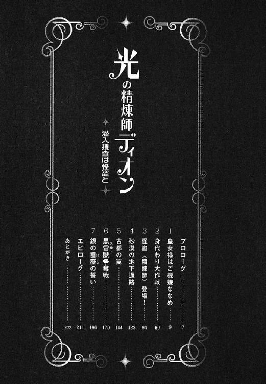
 師〉登場！
師〉登場！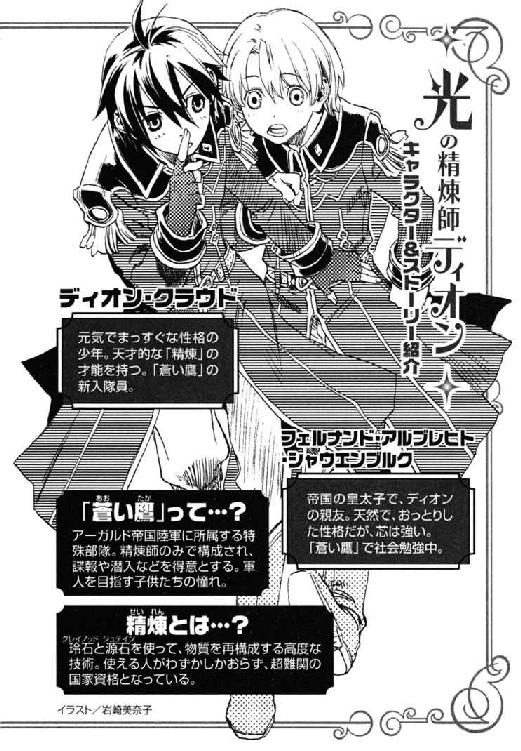
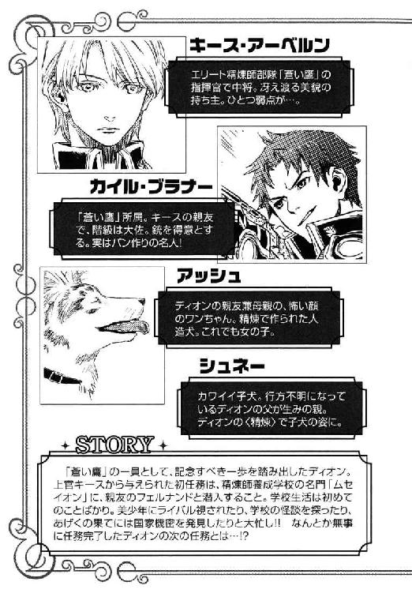
近づいて来る馬の蹄の音に、少女はふと目を覚ます。
辺りが銀の霧に満ちていた。銀の薔薇の花びらがどこからともなく舞ってくる。
甘い香りが鼻腔をくすぐった。
いつの間にか、少女の前に、銀の長いマントを体に巻き付け、羽根飾りのついた銀のつばびろの帽子をかぶり、腰に古風なサーベルを下げた騎士が立っていた。彼は目の周りだけを覆う銀の仮面で顔の上半分を隠している。
「来てくださったのね......」
少女は夢と現実の狭間で、一時の幸福感に酔う。
「俺は約束したことは守る。特に可愛い方との約束はね」
騎士は銀の薔薇を少女に差し出した。薔薇の香りが少女に夢を見せる。
緑豊かな大地。深い森と透き通った湖。海から昇る朝日──。
「綺麗だわ......この大陸に、こんな国があるのね」
「もうすぐ君はここへ行くんだ。この国なら、争いに巻き込まれることもなく、死に怯えることもない」
騎士は小さな象牙細工の笛がついた銀鎖を少女の首にかけた。
「これは？」
「かの国までの旅の途中で、困ったことがあったらこれを吹いて。すぐに駆けつけるから」
男の唇が爽快な笑みの形を作り、少女は瞠目して騎士を見つめ返した。
「どうした？ 俺が信じられない？」
「いいえ──」
男の問いに少女は頭を振る。
「こんなに優しくしてもらって、いいのかしらって──」
「俺は、俺を必要だと言ってくれるすべての人に、最大限の誠意を尽くすよ。今は、その相手が君だ」
騎士は少女の手を取り、その甲に軽く口づけする。
「嬉しいわ......」
少女は頰を染めて微笑んだ。
「じゃあね、僕の可愛い人。お休み、よい夢を──」
ザーッと銀の花びらが舞い散った。
「......夢幻貴族......」
乱舞する花びらが男を包み、彼の姿を消した。少女は遠ざかる蹄の音を聞きながら、再び眠りに落ちていった。
煌めくシャンデリア、むせかえるような香水の香り。
人々のさざめきと、優雅な室内楽の調べ──。
王宮の大広間は大勢の着飾った紳士淑女で埋め尽くされていた。
ディオンは黒の略礼服に黒い蝶ネクタイという出で立ちで、片手にカクテルグラスの載った盆を持ち、それら盛装した貴族たちの間を往来する。
「給仕さん」
呼び止められて振り返ると、五、六人の貴婦人がひとかたまりになって、クスクスと忍び笑いしながらディオンを見つめている。
「その飲み物を」
肩の大きく開いた深紅のドレスをまとった婦人が、艶やかな笑みを浮かべて手招いた。
「あ、はい」
ディオンが近づくと、
「ほらね、わたくしの言った通り、なかなかでしょ」
「さすがドゥーナ侯爵夫人、お目が高いこと」
他の婦人たちが意味ありげに含み笑いをする。
（何なんだ？）と、思いながら盆を差し出すと、
「坊や、名前は？」
手入れの行き届いた指でカクテルグラスを取りながら、深紅のドレスの婦人が尋ねてきた。
「ディオンです」
「見かけない顔ね。どちらの館にお勤めしているの？」
「アーベルン元帥のところです。給仕の数が足りないからって、手伝いに来たんです」
前もって用意されていた台詞を言う。
「少々手入れが悪いけど、素敵な髪ね。見事に真っ黒」
「綺麗な紫の瞳だわ」
「日焼けしてるけど、かえって野性的でいいかも」
次々とグラスをとる婦人方に、赤面しながら「はあ、どうも」と応えると、彼女たちは、
「なんて可愛いこと」「純朴なのねえ」
と笑いさざめいた。
ムッとした気持ちが表情に出たのかもしれない。
「ご免なさい、坊やがとても美しいから、給仕にしておくのはもったいないって、先程皆様と話題にしていたの。気を悪くしないで」
彼女たちは一層楽しそうである。
「失礼します」
ディオンはサッと踵を返した。
「いいわねえ」「今時珍しい少年じゃない」「元帥にお願いして、家で雇おうかしら」
そんな声を背中で聞きながら、
（まったくもう、貴族ってのはよっぽど暇なんだな）
ディオンは空になった盆を抱えてずんずんと歩いた。
新しいカクテルグラスを盆に載せ、客人たちの間を歩いていると、
「俺にも一杯」
野太い声がかかった。見ると壁際に、カイルが燕尾服に白い蝶ネクタイという姿で煙草を吹かしている。
「大佐」と言いかけて、慌ててディオンは「ブラナー男爵」と言い直す。
カイルのいつもはボサボサしている茶髪は綺麗になでつけられ、その手には銃の代わりにステッキが握られている。もっとも燕尾服に隠れた腰には、愛用の四十五口径が下がっているのだろうが。
「給仕姿もなかなか似合うじゃねーか。おばさんたちが色めき立つわけだ」
「やめてよ。俺はこういうのは苦手だ」
ディオンは顔をしかめた。
「まあ、そう言うな。おばさんたちの情報伝達力ってのは、軍の情報網を凌ぐからな。尾ひれが付くのが玉に瑕だが──。彼女たちと仲良くしておくのも仕事のうちだぜ」
カイルはニヤニヤしながら、ディオンの持つ盆からカクテルグラスを取り、一気に呷る。
「何か変わったことはなかったか」
「今のところは何も──」
その時、盛大なファンファーレが鳴り響き、皇帝の到来が告げられる。人々は雑談を止め、大広間最奥の玉座へ向き直った。
アーガルド帝国皇帝コンラート四世と皇妃グレース、そして皇太子フェルナンドと皇女アマーリエが大広間に姿を現した。フェルナンドは白地に金糸の刺繡が施された上着に、金の側線が入った白いズボンを身につけている。
（こうやって見ると、やっぱ王子様だよなー）
明るい金髪に空色の瞳のフェルナンドには、やはり〈蒼い鷹〉の軍服よりも皇太子の正装がよく似合う。
「アーガルド帝国が建国二百周年を迎える記念すべき年が、余の治世である栄光を、シャウエンブルク家の始祖及び忠実なる臣民に感謝する」
建国二百周年記念の式辞を宣う皇帝は、どちらかと言えば地味な顔立ちで、中肉中背、発する声も、弱々しいわけではないが迫力に欠けた。政に興味がないわけではないが、議会の決定には異を唱えないため、飾り物の皇帝と陰口を叩く者もいるらしかった。
ディオンは初めて拝謁するフェルナンドの両親をしみじみと眺める。
（フェルナンドとアマーリエはお母さんに似たんだな）
ふわふわとした金髪を高く結い上げ、白いローブに身を包んだグレース皇妃は、とてもフェルナンドのような大きい息子がいるとは思えないほど、若く美しかった。大輪の薔薇のような華やかな容姿を、楚々とした雰囲気で押し包み、空色の瞳を細めてニッコリと笑む様子はフェルナンドとそっくりである。
皇帝の式辞が終わると、楽団が優雅な調べを奏で、大広間は再び人々のさざめきに満ちる。
「ジェイダだぜ」
カイルは広間の中央に据えられた舞台を指差した。薄衣をナイスバディに巻き付けた美女が舞台に登るところだった。赤毛を黒く染め、南国独特の目の回りを隈取る化粧をしている。
「へえ、ジェイダは異国の踊り子に変装したんだ」
「で、ハープを持ってるのがユアン」
ユアンもジェイダ同様、華奢な体に薄衣をまとい、淡い金髪を黒く染めて化粧をしている。
「ますます女らしくなっちゃったね」
「ってか、女装してんだろ。女に見えなくてどうする」
ユアンが舞台の隅に腰を下ろして、小さなハープをかき鳴らし始めた。北国ムスベルの難民である彼らが、どうして南国の調べと踊りを知っているのか不明だが、美女二人の異国情緒たっぷりの余興に、観客は魅入られたようだ。しかし、そんな中に油断なく辺りを窺う紳士の姿もある。
「あそこにいるのがゼノン、向こうにヴァレリー、んでウォルターだろ」
カイルは貴族のなりをしてあちこちに潜む〈蒼い鷹〉隊員たちを指差した。
「あ、ほんとだ。みんなうまく化けてるなー。俺、気付かなかった」
「そして、キース・アーベルン」
カイルは近づいてくる濃紺の軍服の、美貌の中将を指差した。
「見りゃわかるじゃん。変装してないし」
「ま、この顔じゃ変装してもしょーがねーし」
すぐ目の前に迫った顔に、ピタッと人差し指を当ててカイルが言うと、
「しょうのない顔で悪かったな」
キースは相変わらずの無表情で、薄氷の瞳を眇める。
「変えようがないくらい美人だって言いたいのよ。怒んなって」
カイルは笑って煙草を差し出す。キースの静かな迫力を軽く受け流せるのはカイルぐらいだ。
キースは差し出された箱から煙草を取り出し、カイルの煙草から直接火を移した。
「正式にこのパーティーに招待されているので、変装の必要がなかっただけだ。私とて、変装ぐらいできないわけではない」
キースは煙を吐き出しながら言った。彼はスヴァルト公爵エイモス・アーベルン元帥の養子である。その名も容姿も知れ渡っている彼が変装したら、かえって怪しまれてしまう。
「中将が変装するとしたら、やっぱりお姫様でしょうか？」
話に割り込んできたのは、フェルナンドだった。
「いいのか？ 皇太子がフラフラしてて」
ディオンが問うと、
「お客様を接待するのも、皇太子の役目なの」
フェルナンドはニッコリ笑った。
「僕、中将のドレス姿をちょっぴり期待していたんですけど」
キースは怜悧な瞳を一層冷たくしてフェルナンドを見返した。ディオンは背筋が寒くなったが、フェルナンドは笑んだままである。カイルは声を殺して笑っていた。
（フェルナンドのこういうとこって、ある意味すごい）
度胸がいいのか、単に頭に花が咲いてるだけなのか、いずれにしろフェルナンドのボケっぷりは尊敬に値する。
ジェイダの舞が終わり、ファンファーレが鳴った。
「お？ いよいよ登場だな」
カイルが玉座を振り返る。
壇上に十人ほどの緑灰色の詰め襟を着た男性が登った。それぞれ妻と思われる女性を伴っている。妻たちは清楚なローブを身につけ、連邦の習慣なのか、小さく結った髪に薄いベールのついた小さな帽子を載せて顔を隠していた。
「お客人を紹介しよう。我が国の建国二百周年を祝うため、はるばるヨートゥン共和国連邦から親善使節として参られたステファノ・オルシーニ大使──」
皇帝直々の紹介があり、盛大な拍手が巻き起こった。
現在、アーガルド帝国とヨートゥン連邦とは敵対関係にあり、かろうじて休戦を保っている状態である。
ところが、その連邦からなんと親善使節団が来訪してきたのである。使節団長であるオルシーニは、連邦では珍しく親帝国派であり、二十五年前、帝国が連邦と休戦協定を取り交わせたのは、彼の力によるところが大きいと言われている人物だった。
五十を過ぎていると聞いていたが、とてもそんな歳には見えない。長身瘦軀で、綺麗になでつけられた薄茶の髪には白髪もない。目尻に刻まれた薄い皺は、整った面立ちに渋みを加えていた。
彼の来訪により、ディオンの所属する陸軍特殊部隊〈蒼い鷹〉は、極秘でこのパーティーの警備と情報収集を行うことになった。ディオンが給仕の姿をしているのはそのためである。
「あの黒い軍服のやつらが、連邦の将校だぜ」
カイルは、特使らを取り囲む軍人たちを目線で指し示す。
「背の高い黒髪が、カルロ・グリエルモ中佐。使節団警護隊の指揮官だ」
（あっちも情報収集に来てるんだろうな。で、使節団の人たちが余計な情報を漏らさないように見張ってるわけか）
ディオンはそれとなく連邦の軍人たちを観察する。
油断のならないやつ──というのがカルロの第一印象だった。黒い瞳が、獲物を狙う肉食獣のように辺りを窺っていた。
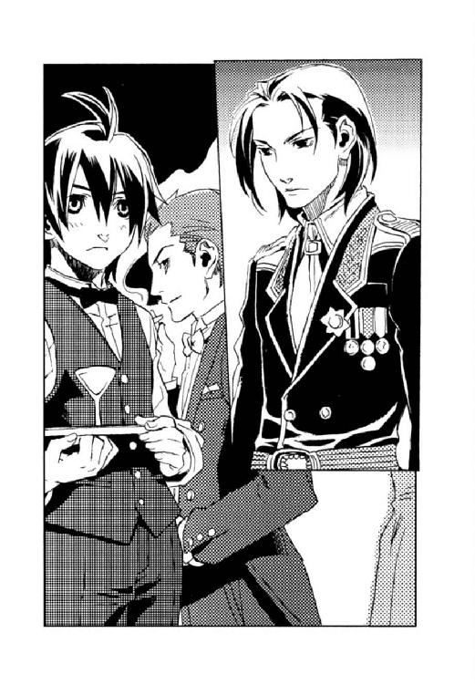
「今のところ異常はないが、ざっと見たところ南庭の警備が甘いようだ」
キースはカルロに背を向けたまま、ディオンの盆からグラスを取り、口に運ぶ。
「南庭を一般人に開放したのは失敗でしたね。使節団の訪問がわかっていれば、南庭の開放なんかしなかったのに」
フェルナンドは心配げに南の窓を見やる。
「近衛から何人か回るように言いましょうか」
「いや、近衛隊は一週間も前から二十四時間態勢で輪番を組んでいる。これ以上働けとは言えまい。ジェイダたちに行かせよう」
「連邦から使節団がやって来るっつーのは、まあ平和な証拠なんだろうが、何もお祭り騒ぎのまっただ中にやって来ることもないだろーによ」
カイルは苦い顔をして煙草の煙を吐いた。そこへ、
「お兄様！ まあ、カイル様、キース様も」
またまた別の声が割り込んできた。高く細い、少女の声である。
（出た......）
長い金の巻き毛を、ドレスと同じ薄紅色のリボンで留めたアマーリエが、スカートのすそをたくし上げて駆けて来る。
ディオンは無意識に一歩後退った。
「ずるいわ、お兄様ばかり。わたくしもお話にまぜて」
フェルナンドによく似た空色の瞳がキースに向かってキラキラと輝いた。
「アマーリエ様。ご機嫌麗しく存じます」
キースが胸に手を当てて貴族風に拝礼すると、
「先日はお騒がせいたしました。今日はお会いできるのを楽しみにしてましたの」
アマーリエはほんのりと頰を染めてスカートをつまみ、軽く膝を折る。
「カイル様も、燕尾服がよくお似合いですわ」
「恐縮です。皇女様も今宵は一段と艶やかでいらっしゃいますね」
普段は下町言葉丸出しのカイルだが、そこは年の功、言葉遣いも笑顔もビシッときめる。
「あら、ディオン」
視線がディオンに移った途端、アマーリエから愛らしい笑みが消える。頰が一層上気するのは、怒りのせいだろうか。
「な、何だよ」
思わず顔が強ばる。
「何であなたがここにいるのかしら？」
「何でって......」
〈蒼い鷹〉がパーティー会場の警備に当たっていることは、アマーリエも承知しているはずだ。
「お兄様につきまとわないでって言ったでしょ」
「別につきまとってるわけじゃ......」
「あっちへ行ってくださらない？ わたくし、お兄様とキース様とカイル様とお話がしたいの」
小さな顎をつんと出す。
（そっちが後からやって来たんじゃないか）
言い返したいのは山々だが、相手は皇女である。
「アマーリエ、ディオンは仕事でここにいるんだよ。お前が口を出す事じゃない」
いつもはほんわかしているフェルナンドの口調が少し厳しくなっていた。
「お兄様......」
アマーリエは驚いたように瞳を見開いた。叱られるとは思わなかったのだろう。みるみるうちに涙が溜まる。
（おいおい、そんなことで泣くのかよ）
ディオンは面食らった。そこへ、
「アマーリエ様、こちらにいらしたのですか」
チョコレート色の髪を短く刈り込んだ若い将校が小走りでやってきた。キースと同じく濃紺の軍服を身につけている。
「ヘルマン......」
アマーリエは潤んだ瞳を、守り役の近衛隊第四分隊長ヘルマン・レイゼン少佐に向けた。
「どうなさったのです」
「わたくしはただ......お兄様やキース様やカイル様とお話をしたかっただけなのに......」
ぽろりと涙がこぼれ、ヘルマンは急いでハンカチを取り出して彼女の目頭に当てる。
「ディオンに、あっちへ行ってなんて言うから、僕が叱ったんだ」
「......それは、アマーリエ様がいけません」
「何よ、ヘルマンまでディオンの味方をするの？」
半べその顔で、アマーリエは守り役を上目遣いに睨む。
「私は、いつでもアマーリエ様の味方ですよ」
ヘルマンは優しい笑みを浮かべる。
「噓。今、ディオンの味方したじゃない」
「アマーリエ様には帝国一の、いえ、世界一の淑女であっていただきたいのです。淑女は、常に礼儀正しく優しくあらねばなりません」
「ディオン以外の......他の人になら......いくらでも優しくできるわ......」
アマーリエはしゃくり上げながらヘルマンのハンカチで目をこする。
フェルナンドは「アマーリエ！」と声を荒らげ、ヘルマン、カイルは顔を見合わせて苦笑いした。キースの表情は変わらず、ディオン自身は、（そこまで嫌うか？）と仏頂面になる。
「フェルナンド様、久しぶりにご家族と過ごされるのですから、少しはアマーリエ様のお話し相手になってあげてください」
「けど、こんな時に......お前はこのパーティーでの僕の役目を知っているだろう？」
フェルナンドが〈蒼い鷹〉の隊員であることは、王宮でもごく一部の者しか知らない。ヘルマンは数少ないその一人である。
「極秘で警備に就いてらっしゃるのは、存じております。けれど......」
フェルナンドとヘルマンは任務中にアマーリエと団欒するべきか否かを問題視しているが、アマーリエの泣きべそは、ディオンがこの場にいることが原因なのである。
「中将、俺、南庭の警備に行きます」
事態を丸く収めるにはこれしかない。ディオンはそそくさとその場を離れた。
（まったく、いったい俺がどんな罪を犯したって言うんだ）
足早に王宮の南庭へ向かいながら、ディオンは心の中でブチブチと文句を垂れた。
（まあ、そりゃ多少の非は認めるけどさ。けど、あれは不可抗力だ。俺にだってどうしようもなかったんだから──）
ディオンはアマーリエと出会った時のことを振り返った。

建国二百周年記念式典を一ヶ月後に控えたある日──。
「大変です！ 軍用犬舎に女の子が迷い込んでしまいました！」
〈蒼い鷹〉宿舎の広間に、陸軍本部から一人の兵士が息せき切って跳び込んで来た。ちょうど夕の点呼が行われていたところで、〈蒼い鷹〉隊員は一列に並んでキースと向かい合っていた。
「何で、犬舎に女の子が迷い込んだのを、俺たちに知らせて来るんだ？」
カイルが独り言とも質問ともつかない口調で言った。
「調教師が非番で、犬たちは興奮して我々の言うことを聞きません。こちらには、もと猟師で犬の扱いに慣れた少尉がいると──」
キースを始め、隊員たちが一斉にディオンを振り向く。ディオンは、「俺？」と自分を指差し、足下でお座りをしている灰色に黒の虎縞の大型犬と、真っ白い子犬を見下ろした。
そこへ、
「大変です！ 陸軍本部に、フェルナンドを訪ねて来た者がいるそうです！」
陸軍本部に出向いていた〈蒼い鷹〉隊員のヴァレリー少佐が青い顔で駆け込んで来た。彼は、その場に本部の兵士がいることに気付いて、ハッと口をつぐむ。
一同の視線がフェルナンドへと向いた。皇太子フェルナンドが〈蒼い鷹〉に入隊したことは〈蒼い鷹〉隊員と皇帝の側近のみが知る極秘事項である。フェルナンドが一兵卒として〈蒼い鷹〉にいることが公になれば、敵国からの誘拐や暗殺といった危険に晒されてしまうからだ。
（情報漏洩!?）（敵国の密偵か!?）（本部の連中にフェルナンドの所在がばれる！）
しかし、隊員たちの危機感をよそにフェルナンドは、
「僕？ いったい誰が──」
と、怪訝な顔で首を傾げた。
その時、緊急連絡用のベルが鳴った。ウォルター少尉が通信室に跳び込む。〈蒼い鷹〉宿舎は緊急事態発生に備えて、陸軍本部と王宮に電信がつながっていた。
「大変です！」
通信室からウォルターが跳び出した。
「王宮より入電、アマーリエ皇女殿下、お忍びで〈蒼い鷹〉に向かう。以上」
その場の空気がサーッと凍り付いた。陸軍本部からの使いをはばかり、誰一人口には出さなかったが、
（アマーリエ殿下がフェルナンドに会うためこの宿舎を訪れようとし、どういうわけか本部の軍用犬舎に入ってしまったと──）
つまり大変の三連発は、そういうことらしい。
「ディオン、行け」
キースの表情は変わらなかったが、こめかみに血管が浮いていた。
「了解。アッシュ、シュネー、行くよ」
ディオンは走り出した。黒い大型犬と白い小型犬が続く。
陸軍本部は〈蒼い鷹〉宿舎から道を一本隔てた所にある。
本部の正門はすでに開かれ、警備兵が「こちらです」とディオンと二頭の犬を招き入れた。ふと振り返ると、フェルナンドを先頭に他の〈蒼い鷹〉隊員が走って来る。最後尾にはキースやカイルの姿もあった。
「何でついて来るんだ!?」
ディオンは犬舎に向かって走りながら言った。
「アマーリエが心配で......」
フェルナンドがディオンの隣に並ぶ。
「そりゃ、わかるけど。あんまり大勢で押しかけると、犬がますます興奮しちまう」
「犬が何しでかすかっていうよりも、あの子が何しでかすか、そっちの方が心配なんだ」
「............そういう姫なのか？」
「うん、世間知らずで、突飛なこと平気でするんだ」
フェルナンドに世間知らずと言わせるからには、相当なものだろう。
「俺たちは、フェルナンドが心配で──」
二人の後ろを走る隊員たちは、何だか楽しそうである。（こんな面白いこと、見逃す手はない）というのが本音だろう。
「俺はこいつらを止めに来たんだ。命令されてもいないのに出て行っちまったから」
そう言うカイルの足取りは軽く、隊員たちを追い越してディオンと並ぶ。
（だったら、なぜ止めないんだっ！）
中将は──？ とディオンが振り返ると、命令を発すべき指揮官は、最後尾をのろのろと駆けていた。白い頰がいつにも増して白いのは気のせいだろうか？
実のところ、超生き物恐怖症のキースは全身全霊で犬舎に向かうことを拒否していた。
（犬......何十頭もの犬......部屋中に犬がいっぱい......）
しかし、皇女が危機に瀕しているというのに、部下に任せて宿舎で待っているわけにはいかない。その使命感のみが彼の足を動かしていたのである。もっとも、それを知っているのはカイルだけだったが──。
庁舎の角を曲がると、盛大な犬の吠え声が聞こえてきた。
「あららら」
カイルが犬舎の屋根を見上げた。
犬舎は一戸建て住宅ほどの平屋で、緩やかに傾斜している屋根は、銅板に亜鉛メッキがされている。
そのつるつるの屋根の上に、皇女はいた。座り込み、両手で棟にしがみついている。
犬舎の周囲には十数頭のシェパードが、屋根を見上げて吠えていた。更にその周囲を数人の本部の軍人たちが、梯子を持ってうろうろしている。兵士は屋根に梯子をかけようとするが、犬が興奮していて近づけない様子だった。
犬舎の周囲は訓練や運動のための広場になっていて、柵が張り巡らせてあった。〈蒼い鷹〉一同は柵の前に走り寄る。
本来ならば、キースはここで間髪容れずに救出命令を下さなければならないのだが、彼は柵の前で硬直してしまった。動悸が打ち、こめかみに汗が伝う。彼にとっては、敵国の砦に突撃する方が何倍もましだったかもしれない。
「兄貴にそっくりだな」
隊員の誰かがつぶやき、みなが「うんうん」とうなずく。
フェルナンドより二つ歳下だという彼女は、ふわふわの金髪を長く垂らし、大きな空色の瞳が印象的な、なかなかの美少女だった。
犬に追われて転んだのだろうか、上等な毛皮が縁取りされたコートは土で汚れ、水色のドレスのすそが大きく破けている。大きく見開かれた瞳は恐怖で潤み、軒下で自分に向かって吠える犬たちを凝視していた。
「僕、行きます！」
命令を待ちきれなかったのか、フェルナンドが柵を跳び越して犬舎に向かって走った。
「あ、おい、待て」
ディオンは慌てて彼を追う。その後について、アッシュは犬離れした──本物の犬ではないので当たり前だが──跳躍力で柵を跳び越え、小さなシュネーは柵の隙間から『んしょ、んしょ』と中に入った。
犬たちがよそ者の侵入に気付いて振り向いた。敵意を剝き出しにして激しく吠え立てる。その声で、皇女の目がフェルナンドに向いた。
「フェルナンドお兄様！」
（げ──）
ディオンとフェルナンドは立ち止まった。アッシュ、シュネーも急停止する。
（しーっ、しーっ、名前を呼ぶな！）
身振り手振りで、何とかそれを伝えようとしたが、
「お兄様、どうしたの？ わたくしよ。アマーリエよ。何？ 聞こえないわ。お兄様、助けて。わたくしが高い所苦手なの、ご存じでしょ？」
（だめだ、こりゃ──）
彼女の叫び声を聞いて、「フェルナンド？ アマーリエ？」と、本部の兵士たちは、屋根の上の少女と二人の少年を交互に見た。
「まさか......あの娘は皇女殿下？」「その少年、どっちかが皇太子殿下なのか？」
（やべー......）
ディオンは（どうしよう）と、柵の向こうの〈蒼い鷹〉たちを振り向く。彼らは蒼白で固まっていた。そこでおもむろにキースが、
「お兄様隊出動、まずは犬を追い払え」
と、指令を出した。
「は？」
「お兄様を隠すなら、お兄様の中だ。行け」
「お......おお、そうだ。ウォルターお兄様が、犬を追い払ってやるぞ」
「安心しろ、今、ゼノンお兄様が助けに行くからな」
「ヨシュアお兄様に任せておけ」
指揮官の意を汲んだ隊員が、わらわらと柵を越えて犬を追い始めた。
「残りの者は声援を送れ」
「りょ、了解」
残った隊員は、
「アマーリエ、お兄様たちが行ったぞ」
「ウォルターお兄様、がんばれ、犬なんかに負けるな」
「今です！ ゼノンお兄様、犬をやっつけてください！」
隊員たちはことさら「お兄様」を強調して叫んだ。それを聞いて本部の兵士たちは、
「〈蒼い鷹〉って、親戚同士なのか？」
「いや、若い娘に自分たちをお兄様と呼ばせているんだろ」
「と言うより、互いにお兄様と呼び合ってる感じだぞ」
ひそひそとささやき合い、
「〈蒼い鷹〉って、そういう集団だったんだ」
最終的には、じーっと白い目で見られることとなった。
はなはだ不名誉な誤解を招いたが、とりあえず「フェルナンドという少年が皇太子殿下なわけないか」と、本部の兵士は思い込んでくれたようだ。
「そもそも皇女様が、一人で犬舎の屋根に登るわけないもんな」
もっともである。
「ところで、どうやって登ったんだ？」
ディオンはアマーリエに素朴な疑問を投げかけた。
「梯子よ」
皇女は震える声で答えた。
「その梯子は？」
梯子は屋根にかかっておらず、本部の兵士が担いで犬の周りを右往左往している。
「犬が登って来たら困るから、蹴落としたの」
「............」
なるほど、確かに世間知らずで、突拍子もないことをする。
「アッシュ、犬を遠ざけてくれ」
アッシュはワンと一声吠えた。人間の言葉に訳せば『落ち着いて。吠えてはだめよ』である。〈精〉で造られた人造犬アッシュは、人の言葉も動物の言葉も自在に操れるのだ。
犬の何頭かが振り向いた。けれどアッシュの言葉は興奮した犬たちの耳には入らなかったようだ。牙を剝き、舌を出し、獰猛さを丸出しにしてアッシュに向かって走り出す。しかし、
（〈蒼い鷹〉から来た犬の方が、ずっと恐ろしい顔だ......）と、見ていた誰もが思った。
ただでさえ、狼のような顔つきだというのに、戦闘体勢に入ったアッシュの目は吊り上がり、まくれ上がった口吻とそこから覗く太い牙は、もはや犬の域を超えている。
凄まじい大乱闘になった。組んずほぐれつ、犬たちとアッシュは一塊になって、地面を転げる。土埃が舞い上がり、耳を覆いたくなるような吠え声が響き渡った。
「こうして比べて見ると、アッシュってシェパードより大きいんだね」
フェルナンドがつぶやいた。
「それに強い」
「熊や猪を相手にしてたんだ。経験値が違うよ」
戦うために訓練された十数頭の軍用犬相手に、アッシュは余裕で戦っていた。襲いかかる犬たちを目にも留まらぬ速さでかわし、素早く相手の腹や喉に牙を立てている。
一方、シュネーは熊や猪と戦ったことはなかったが、
『ほらほら、こっちだよ～ん。ボクを捕まえに来て～』
性格は五歳児のディオンである。しつこく犬舎の軒下から離れないシェパードの周りを走り回って挑発する。逃げるものを追いかけずにはいられない悲しい犬の性で、二、三頭の犬がシュネーを追い始めた。シュネーはタタタッピョーン、タタタッピョーンと犬とは思えない──シュネーも本物の犬ではないので当然だが──動きで、シェパードの追撃をかわす。
その光景を見ていたキースはよろめいた。カイルが咄嗟に腕をつかんで支える。
「おいおい、貧血か？ 倒れんなよ」
「......こんな恐ろしい戦い......見たことがない」
何度も修羅場をくぐり抜けてきた〈蒼い鷹〉指揮官は、戦争よりも犬の喧嘩の方が恐かった。
「見てなきゃいいだろ」
「だめだ、目が張り付いて離れない......」
「こっち向いていろ」
カイルはキースの体を回して後ろを向かせた。
その頃、ディオンとフェルナンドは最後まで軒下に残ったシェパードと対峙していた。
「あっちに行け！」
ディオンは腰から狩猟用の大型ナイフを抜き、軽く腰を落として構えた。深い紫の瞳がシェパードを睨め付ける。しかし、最後のこの犬は頑として動かず、殺気立ったままだった。
「何で言うことを聞かないんだ？」
訓練された軍用犬が、これほど人間に対して敵意を剝き出しにするはずはない。
『あの女の子が、子どもを奪って屋根に登ったって言ってるよ。この犬はお母さんなの』
シュネーが駆け寄って来て、ピョンとディオンの肩に登り、本部の兵士に聞こえないように小声でささやいた。アッシュもシュネーも〈精〉で造られた人造犬であることは、〈蒼い鷹〉のみが知る最高機密なのである。
「子ども──？」
見上げると、アマーリエのコートのポケットに、まだ目も開いていないような子犬が一匹、顔を出していた。
ディオンはあんぐりと口を開けた。似たようなことが以前にもあった気がする。
「お前の一族には、赤ん坊を見たら、熊だろうが軍用犬だろうが、抱っこせよという家訓でもあるのか!!」
「そう言えば、僕とディオンが出会った時も、こんな状況だったねー」
頭に花を咲かしている場合じゃない。
「くそっ」
ディオンはナイフをホルダーに収めると、ダッと犬舎に向かって駆け出した。肩からシュネーが飛び降りる。ディオンは軒下で地面を蹴り、屋根の端に手をかけた。足下を犬の牙が掠める。跳躍の勢いと腕の力で体を持ち上げ、屋根に上がった。
「その子犬を渡して。それを返さないと犬たちが治まらない」
軒の端に立ち、ディオンはアマーリエに手を差し出す。
「え？ あ、はい」
アマーリエはポケットから子犬を出した。それをディオンに渡そうと手を伸ばし、彼女はバランスを崩した。
「キャーッ！」
ズルッと皇女の体が屋根を滑る。
「危ない！」
ディオンはアマーリエの手首をつかんだ。すんでのところで皇女は墜落を免れ、軒先にぶらーんとつり下がる。
「キャーッ、キャーッ、キャーッ」
「そんなに騒ぐな、暴れるな、手を握るな、子犬がつぶれる」
「た、助けて。早く引き上げて」
ディオンは皇女の手を引いたが、亜鉛メッキの屋根の上では踏ん張りがきかない。
皇女殿下の危機を知って、〈蒼い鷹〉隊員が駆け寄ってきた。しかし、軒下にはまだ母犬が牙を剝いている。
「とにかく、子犬を離して」
空いている方の手でアマーリエの指を開かせ、ディオンは子犬をつかむ。その頃には、アッシュは軍用犬の群を制圧し、柵の隅に追いやっていた。
「アッシュ！」
主の呼び声を聞き、アッシュが駆けてくる。ディオンは緩やかに子犬を放った。タンとアッシュはジャンプし、子犬を宙でそっと咥える。アッシュならではの離れ業である。アッシュは子犬を母犬に返し、親子を柵の隅で一塊になっている群の方へと導いた。
「じゃ、手を離すよ」
「え？」
ディオンはつかんでいたアマーリエの手首を離した。
「キャ────ッ」
破れたスカートがふわりと翻った。
ストン。
地面に激突するとばかり思っていたのに、アマーリエの全身を思わぬ感触が包んだ。
「お怪我は？」
「ちゅ、中将──」
アマーリエはキースに受け止められていた。銀がかった薄青の瞳に見つめられ、アマーリエの頰が真っ赤になる。彼女は慌ててキースの腕から降り、身繕いした。
彼女は礼を言い忘れた。それよりも重大なことが心を占めていたからである。
「あ、あの、いつからそこに......」
「犬が遠のいてすぐに」
「では、では──」
見上げた時、スカートの中が見えたのでは......。
「うっ、ひっく、ううっ、ぐすっ」
「そんなに泣かないで」
レースのハンカチで顔を覆う妹に、フェルナンドはため息混じりに苦笑する。
〈蒼い鷹〉宿舎応接室にはフェルナンド、アマーリエが向かい合ってソファに腰掛け、ディオンはドアの近くに立っていた。他の隊員はいない。犬舎から〈蒼い鷹〉宿舎に戻り、応接室に通された皇女は、兄とディオンと話をしたいと、人払いを願い出たのである。
ちなみに、フェルナンドがディオンを紹介すると、アマーリエが自分を助けてくれた恩人に対して発した第一声は、「ディオンのばか！」だった。
「だって、だって、あんな醜態、うっく、よりによってキース様に......ひっく」
「中将は見てないよ、紳士だから。たとえ見えたとしても、大して気に留めてないと思うよ」
フェルナンドは慰めたつもりだったが、
「そんな......、気にも留めてもらえないなんて......」
乙女心は複雑である。
「それも、これも、ディオン、あなたのせいよ！」
アマーリエは、ディオンをキッと睨んだ。
「中将の上に吊り下げるなんて、ひどいわ。まして落とすなんて！」
「......ごめん」
中将の上に吊り下げるつもりはなかった。たまたま、いち早く駆けつけたのが中将だっただけである。彼は俊足なのだ。
「犬が行っちゃったら、梯子をかけてもらうつもりだったんだけど、中将がいるんなら受け止めてもらおうと......大した高さじゃなかったし......」
「何て、野蛮な発想なの！ わたくしは犬でも猫でも猿でもないのよ。わたくしがスカートをはいてるってことぐらい考えてくれたってよさそうなものだわ。不調法な人ね！」
（悪かったな──）
気がきかなかったのは認めるが、そんなに思いっきり言うか？
「アマーリエ、ディオンは助けてくれたんだよ。そもそもお前が犬舎の屋根なんかに登るからこんなことになったんじゃないか」
フェルナンドが珍しく口調を荒らげた。するとアマーリエの瞳に新たな涙がみるみる溜まる。
「お兄様、......怒ってらっしゃるの？」
「当たり前だ。だいたい、お前、何で来たんだ？」
「馬で......」
「そうじゃない！ 王宮を抜け出して一人でこんな所へ来た理由を聞いてるんだ」
「......お兄様に会いによ。ちっとも王宮に戻ってらっしゃらないし......。ずっと前だって、突然王宮を出て、一月以上も音信不通になったことがあったでしょ......アマーリエは、心配になったの......」
アマーリエはしゃくり上げ、フェルナンドは小さく吐息をつく。
我が身を振り返れば、妹の無茶を責めることはできない。以前、フェルナンドは王宮の宝物庫から黒雷獣ユーミールの心臓を持ち出して出奔したことがあった。その事件でディオンとフェルナンドは出会ったのである。
「それに、お兄様に面会すれば、キース・アーベルン中将を間近に見られると思ったし......」
「本音はそこか──」
フェルナンドは握った拳を震わせた。
「それと、ディオンに言いたいことがあったの」
兄に向ける視線とは異なり、彼女がディオンを見る時の表情は険しい。
「な、何を......」
これ以上まだ何か言うことがあるのか？
「よくもお兄様をたぶらかしてくれたわね」
「たぶらかして......って？」
ディオンは目を瞬いた。
「お兄様はわたくしを一番大事にしてくださってたのよ。それが、あなたに出会ってから、わたくしとの会話もうわのそら、お茶会にお招きしても、三度に一度ぐらいしかいらっしゃらなくなって──。あげく、お兄様はあなたを追って〈蒼い鷹〉に入ってしまわれて、入営したきり王宮にも帰ってらっしゃらない──。みんなあなたのせいだわ！」
（それって、俺のせい？ 俺のせいなのか？）
フェルナンドがディオンを追って〈蒼い鷹〉に入ったのではなく、フェルナンドが策を巡らせてディオンを〈蒼い鷹〉へ入隊させたというのが客観的事実だったと思うのだが。
「お兄様を返して！ もうお兄様につきまとわないで！」
「は、はい......」
お姫様の迫力には勝てない。
「お兄様もお兄様よ。こんな口のきき方も知らない失礼な人の、いったいどこがいいの！」
「ディオンの喋り方はビヴロス地方の方言なんだ。急に帝都の標準語で、しかも敬語を使い分けろったって無理だよ。王宮に帰らなかったのは僕が悪かった。でも、それはディオンとは関係ない、僕が決めたことだ。失礼なのはお前の方だよ、ディオンに謝りなさい」
今まで兄から叱られたことなどなかったのだろう。アマーリエは瞠目し、再び泣き顔になる。
「あ、いいよ。言葉遣いが悪いのはほんとだし、俺も考え無しに軒先につるしちまったし」
ディオンは慌てて言った。女の子に泣かれるのは苦手なのだ。
その時、応接室の扉がノックされ、
「アマーリエ様、ヘルマン・レイゼン少佐が参りました」
開いた扉からキースが姿を現した。アマーリエの頰がパーッと染まり、彼女はサッと涙を拭くと急いでドレスのすそを押さえる。
キースの後ろには、チョコレート色の髪を短く刈り込んだ若い将校が憔悴しきった顔で立っていた。部隊章は金地に赤い鷹、すなわち近衛隊である。階級が少佐ということは、アマーリエの近衛なのだろう。
「アマーリエ様、ご無事で......」
よほど心配していたのだろう、ヘルマンは今にも泣きそうな表情で皇女に駆け寄った。
「お怪我は？ 聞けば犬舎の屋根に登ったとか。犬に嚙まれたりしませんでしたか？」
「嚙まれはしなかったわ。転んだけれど」
ヘルマンは大きな安堵のため息をつき、
「お忍びで王宮を出るなとは申しません。けれど、今度からお出かけになる時は、せめて私をお伴させてください。どんなに心配したことか。ああ、ひじがすりむけていらっしゃる」
彼はアマーリエの手足に傷がないか調べたり、土を払ったりする。
「なぜ、犬舎になど入ったのです？」
「〈蒼い鷹〉の宿舎だと思ったの」
ディオンはフェルナンドと顔を見合わせた。
どこをどう間違えれば、宿舎と犬小屋を間違えるんだ？
「だって、大きな黒い犬がいるって聞いたから──。アッシュという名前だったかしら？」
アマーリエの話によると、彼女は誰にも告げずに馬で王宮を出たということだった。
「陸軍本部はすぐにわかったわ。でも、〈蒼い鷹〉の宿舎がわからなくて、本部の門の警備兵に訊いたの。そうしたら、名前と理由を訊かれたわ」
「お前、まさか名乗ったの!?」
「いいえ、本当の名前を言ったら、王宮に連絡が入って連れ戻されてしまうでしょ。だから、フェルナンド二等兵に会いたいとだけ言ったの。そうしたら、門の中に入れてくれて、少し待っているように言われて、警備の人は建物の中に入ってしまったの。しばらく待っていたけど、警備の人が戻って来ないから、自分で宿舎を探そうと思って建物の周りを歩いてたら、あの柵に囲まれた平屋のお家があって、犬の声がしたからここかなと思って、扉をノックしたら、返事があったから、開けたの」
「柵の扉が開いていたのですか？ それと、誰が返事をしたのです？ 危機管理が甘いと注意しなくては」
ヘルマンは表情を険しくする。
「柵は閉まっていたわ。だから乗り越えたの。そこでスカートを破いてしまったのよ」
お姫様のやることだろうか。
「それから、返事をしたのは犬よ」
そこまで数々のヒントを与えられながら、なぜ犬舎だと気付かない──。そう思ったのはディオンだけではないはずだ。フェルナンドも、いつも無表情のキースも目が点になっている。
「扉を開けたら大きな犬がいっぱい出てきて、お兄様を呼んだけどいなくて、お部屋の奥に、ちっちゃな犬が落ちてて──」
いや、落ちてたんじゃないと思う。
「子犬を拾ったら、追いかけられたと、そういうことなんだな......」
フェルナンドはがっくりと肩を落とし、こめかみを揉んだ。
「ご迷惑をおかけいたしました！」
ヘルマンはガバッとキースに頭を下げた。
「この通り、アマーリエ様は世間のことには疎くて」
「大事に至らず何よりでした」
キースにとって、犬小屋出動は難易度の高い任務だったが、それは表情には出さない。
続いてヘルマンはディオンに向き直った。
「あなたが、ディオン・クラウド少尉ですね。申し遅れましたが、私はヘルマン・レイゼン。アマーリエ様の近衛隊の隊長を言いつかっております。この度はアマーリエ様をお救いくださり、まことにありがとうございました」
「ヘルマン、そんな人にお礼を言うことないわ。わたくしを犬舎の屋根からぶら下げたのよ」
アマーリエはつんと横を向く。
「そんなことをおっしゃるものではありません。事情は伺いましたが、あの場合は仕方なかったのですよ。さ、帰りましょう。陛下がご心配されていらっしゃいます」
アマーリエは立ち上がると、
「お兄様、来月の建国二百周年記念パーティーの時には絶対帰っていらしてね。中将も是非お越しくださいな。お待ちしておりますわ」
優雅に一礼する。それは洗練された淑女の仕草だったが、ディオンには思いっきり「い────っ」をした。周囲の男たちはギョッとしたが、彼女はそれをものともせずにサッサッと歩み去る。
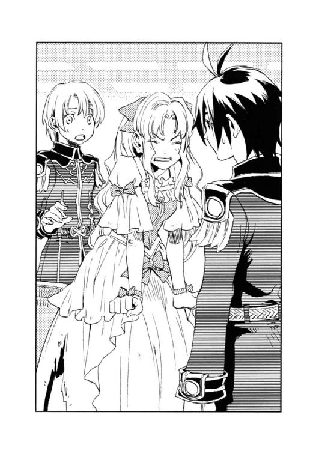
「ごめんね、ディオン。わがままな子で」
最後まで礼も詫びも言わなかった妹の背を見送り、フェルナンドは言った。
「いや、なんつーか、お姫様だし......まだ十四だし」
頰が引きつるのを感じつつ、ディオンは答えた。
「微妙なお年頃なんです。根はお優しくてお可愛らしいのですが、背伸びをしたいと言うか、反抗期と言うか」
彼女の守り役は困ったような笑みを浮かべる。娘の成長を見守る父の心境なのだろうか。
「ヘルマン、甘やかしすぎだよ」
「反省しております」
彼は笑みを浮かべたまま一礼すると、アマーリエの後を追った。
それから数日後──。
総司令室を辞したキースは、ブーツの音を響かせ、足早に陸軍本部庁舎の廊下を歩く。すれ違う将校や下士官は、〈蒼い鷹〉指揮官に無意識のうちに道を譲り、女性事務官は頰を染めて彼の姿を目で追った。しかし、多くの人々の羨望と憧憬の眼差しに気付いた風もなく、彼は憮然と庁舎の正面玄関へと向かって行った。
「よ、お疲れ、どうだった？」
玄関には、カイルが煙草を吹かして待っていた。
「何だ、来てたのか」
「こないだの、お姫様犬小屋訪問の報告書を出しにさ。お姫様はウォルター少尉の従兄弟ってことにしておいた。ま、これ以上突っ込まれたりはしないだろ」
カイルはキースに煙草を差し出し、火を点けてやる。
「午前中の議会で、決議されたって？ 意外に早かったな」
「来月は建国二百周年記念式典がある。それまでには一応の方向性を出してしまいたかったのだろう」
キースの表情は変わらなかったが、煙と一緒に吐き出す言葉に、苦いものが含まれていることをカイルは聞き逃さない。
「やばいのか？」
「連邦の要塞潜入及び黒雷獣破壊は、我々〈蒼い鷹〉に一任された。休戦協定に響かないよう極秘の出兵だ」
「妥当なとこだな」
二人は〈蒼い鷹〉宿舎へ帰る道を歩き出した。
大陸の西に位置する砂漠の国ヨートゥン共和国連邦は、アーガルド帝国の肥沃な土地と源石の鉱脈を手に入れようと、度々帝国領内に侵攻し、過去には何度か全面戦争にまで発展した。今は休戦中だが、一触即発の緊張状態にある。
その連邦の要塞に、ディオンの父モーリス・タウンゼント博士は監禁されている。彼は連邦の命令で、生ける巨大兵器黒雷獣を製作させられていた。その情報を、今はディオンの飼い犬となったシュネーがもたらし、帝国議会は連邦の黒雷獣開発を阻止すべく、秘密裏に臨時議会を招集した。その結果を受けて、先刻キースは総司令部に呼び出されたのである。
「すべては事故に見せかけ、黒雷獣破壊を最優先させること、タウンゼント博士の救出は行わないというのが議会の決定だ」
「──噓だろ？」
カイルの足が一瞬止まる。
「博士の知識と技術は、帝国にとっても貴重だろが、何で......」
「博士を連れ出せば、我が国の仕業だと知れる。議会が何より恐れているのは開戦だ」
「見くびられたもんだな。連中に気付かれないように博士を助け出すぐらいのことができないと思ってやがるのか」
初冬の午後、太陽は正面に輝き、カイルは目を細める。
「ディオンに、──何て言やいいんだ」
「そうだな......」
珍しくキースは辛そうな顔をした。
キースは、宿舎に戻るなり作戦会議を開いた。
要塞攻略に当たり、シュネーに敵地の概要を説明させる。シュネーはモーリスによって造られ、しばらく要塞で過ごしていた時期があったからだ。
『要塞は砂漠のど真ん中にあるんだ。連邦では最大規模の軍事基地でね、ファルネーゼっていう都市を丸ごと要塞にしちゃったんだ。政治の中枢〈沈まぬ星〉の本拠地もここにあるんだよ』
大きな机に広げられたユグドラ大陸の地図に乗り、シュネーは小さな前足で地図の一点をトントンと叩いた。
地図の周囲を二十名余りの〈蒼い鷹〉隊員が取り囲んでいた。ディオンも食い入るように地図を見つめる。戦争は嫌い、人が死ぬのは嫌だというディオンが、陸軍特殊部隊〈蒼い鷹〉に入隊したのは、軍の幕僚となってフェルナンドの支えになるためと、もう一つ、父を連邦から救出するためだった。
（ようやく、父さんを助けに行ける──）
緊張で汗ばむ手をフェルナンドが握った。空色の瞳が力強く輝き、ディオンを見つめている。
（夢が実現するよ。もうすぐ）
ディオンには、フェルナンドの瞳がそう語っているような気がした。
シュネーはチョコチョコと地図の上を飛び回る。
『ここへ行くには二通りの道があるよ。一つは密輸業者が使うルートで、すごい遠回りだけど、船に乗って大陸を半周して連邦の港から入る方法。ボクはこの逆ルートでこっちへ来た』
「密輸業者に渡りをつけるか、でなきゃ連邦の商船に偽装したやつを用意しなけりゃならんな」
カイルが腕を組んだ。
『もう一っこは、ニヴル山脈を越える方法』
「国境越えが難しいな。今の季節、使える山道は限られているし、その道には連邦の厳重な警戒態勢が敷かれている」
キースが国境の砦を指差した。
『それより難しいのが砂漠越え』
シュネーは地図上の、要塞を囲む砂漠の上を歩いた。
『この砂漠には、怪物が棲んでるんだ』
「怪物？」
誰ともなく訊き返す。
『連邦では砂獣って呼んでる。長さが十四、五メートルで、太さが二メートルぐらいで、足がいっぱいあって、巨大なゲジゲジって感じらしい。ボクは見たことないけど。肉食で、動くものは人でも牛でも襲うんだって』
聞いていた隊員たちがどよめく。キースに至っては、全身に鳥肌を立てていた。もっとも表情は変わらないので、誰も気付かなかったが。
「〈精〉で造られたのか？」
ディオンは尋ねた。ムスベルが滅びた現在、〈精〉で生き物を造れる者は、ディオンの知る限り二人しかいない。〈精師〉養成学校ムセイオンのケトラー教授と、ディオンの父モーリスだけである。しかし、ケトラーは知的生物を造ることはできず、人間並みの知能を持つアッシュとシュネーはモーリスの貴重な作品だった。
『多分違うと思う。虫が突然変異したんじゃないかって、タウンゼント博士は言ってた。この砂漠は、昔はもっと小さかったらしいんだ。でも、二十五年前の大戦の時、ムスベルが黒雷獣を投入して、散々〈死の光と熱〉がまき散らされて、砂漠が広がっちゃったんだって。それで、その時〈死の光と熱〉を浴びた虫がすっごい怪物になっちゃったみたい。だから何匹もいるんだよ。砂漠中にうようよ──』
ガタン、と椅子の倒れる音がした。隊員たちが一斉にそちらに向く。カイルがキースの腕を支えていた。キースの顔は表情こそ変わっていなかったが、ひどく青ざめていた。
「どうかしました？ ご気分がお悪いとか？」
ジェイダは敬愛する指揮官の顔を心配げに覗き込んだが、
「いや、大丈夫だ。シュネー、続けてくれ」
キースはふらつく足を踏みしめる。「うようよ」に反応したと打ち明けるには、彼の矜恃は高すぎた。カイルは頰を引きつらせて笑いを堪えていたが、幸いそれを不思議に思う者はいなかった。
「じゃ、要塞は孤立無援なの？ 物資の輸送は？ シュネーは要塞からどうやって出たの？」
フェルナンドが問う。
『砂漠の地下にトンネルが通ってる。東と西と二本』
シュネーは地図の上を飛び回り、トンネルの位置を示す。
『物資の輸送って言っても、運ぶのは源石ぐらい。〈精〉を駆使して、狭い土地でも食糧が自給自足できちゃってる。けど、重要な補給路だからすごく警備が厳重。トンネルを通り抜けるのは難しいと思う』
「砂漠も、そこに棲む砂獣も、天然の護りになってるわけか。要塞への侵入は難しいな」
カイルはチラとキースを見た。
「出発は来月初旬を予定している。それまでに情報収集し、要塞侵入への糸口をつかまねばならない。一班は、密輸業者を、二班は国境の砦を、三、四班は砂獣について調査しろ。生態や習性、弱点等できる限り細かい情報が欲しい。五班はシュネーとともに要塞及びトンネルの見取り図の作成にかかれ」
キースは無表情のまま指令を出した。
会議終了後、カイルは部屋に戻ろうとするキースを呼び止めた。
「来月初旬出発っつーのは厳しいんじゃねーの？ それまでに地下トンネルを抜ける算段ができるのか？」
「難しいな。だが、何としても方法を見つけなければならない」
「巨大ゲジゲジのうようよが相手じゃなきゃ、馬でもラクダでも駆って砂漠を越えちまうんだがな」
「頼むからそれを言わないでくれ。気分が──」
キースは胃からこみ上げてくる苦い塊を必死で吞み込んだ。
「きゃー、お兄様。お帰りになってたの！」
王宮の図書室で古書を開いていたフェルナンドのそばに、アマーリエが駆け寄った。
「ちょっと調べ物があってね」
「なあに、教会建築？ お兄様、教会になんて興味があったの？」
「ちょっと仕事。中将に頼まれて」
彼はシュネーと共に要塞の見取り図作成を担当していた。要塞は、まだ連邦が王制を敷いていた時代の教会都市を利用して、軍事基地にしたということだった。そこで、フェルナンドは王宮の図書室に、当時の教会の建築様式や構造などが記された古書が保存されていることを思い出し、久しぶりに王宮に戻ったのである。
「まあ、キース様に!? お元気かしら？ 来月の建国記念パーティーにはいらっしゃってくださるのかしら？」
「元気だよ。パーティーに出席するかどうかはわかんないけど」
フェルナンドは本から目を離さずに答えた。連邦の要塞への極秘出兵が、建国二百周年記念式典と重なるかもしれない。そうであれば中将はもちろん、自分も式典には出席できないだろう。
「あった。これだ」
フェルナンドは、黄ばんだ羊皮紙の題目に目当ての名を見つけた。
「大ファルネーゼ教会領？ どこなの？」
「今は連邦の領土になってる。大昔、まだシャウエンブルク家が一領主だった頃、大ファルネーゼに攻め入ったことがあって、これは、その時に作られた地図と教会の見取り図」
「あ、もしかして今度〈蒼い鷹〉が内緒で黒雷獣を壊しに行くっていう要塞？」
フェルナンドは地図から顔を上げた。
「お前、何でそんなこと知ってるの？」
「三日ぐらい前だったかしら、お父様とアーベルン元帥が難しい顔で話してるのを立ち聞きしちゃったの。お父様が夕食になかなかいらっしゃらないから、お部屋へお迎えに行った時」
アマーリエは無邪気に語る。
「もちろん、言いふらすつもりなんかないわ。元帥がこっそりお父様を訪ねてくるなんて、よっぽど大事な秘密の話ですもの。ただ、元帥が少し怒っててね、タウンゼント博士を見殺しにするおつもりか、みたいなこと言ってて、ちょっと気になってたの。タウンゼント博士ってどなた？」
フェルナンドの顔色が変わった。三日前と言えば、議会で連邦の要塞への極秘潜入と、黒雷獣破壊が議決された日である。
「タウンゼント博士を見殺しって──？」
「博士を助けようとすれば、黒雷獣の破壊が帝国の工作だってわかってしまうから、助けないって、そんな意味のことだったと思うけど」
フェルナンドは羊皮紙を握ったまま駆け出した。
「待って、お兄様、どうしたの？」
アマーリエの声を無視して、フェルナンドは皇帝のいる青の宮へと走った。
息を切らして突然入室してきた皇子に、
「おや、フェルナンド。珍しいね、元気か？ 軍隊生活はどうだい？」
午前の執務を終え、居間でくつろいでいたコンラートはのんびりした笑顔を向けた。
「父上、お人払いを──」
いつものほほんとしているフェルナンドの顔が強ばっていることに気付いた皇帝は、
「下がりなさい」
と侍従たちを退出させた。
「どうしたのだ？」
「議会はタウンゼント博士を救出しないという結論を出したのですか!?」
「そうだよ。今頃、何を──」
コンラートは少しばかり表情を曇らせた。
「そうか、博士は、そなたの友人──ディオンという名だったか？ 彼の父親だったな」
「知っていて......なぜ、議会で反対を唱えてくださらなかったのですか！ いいえ、博士がディオンの父であろうとなかろうと関係ない！ 誰かを見殺しにするなんていう決議を、どうして通してしまわれるのです!?」
「タウンゼント博士は優秀な〈精師〉だし、猛将クラウド将軍の婿にも当たるからね、もちろん反対意見もあったよ。しかし、連邦に黒雷獣を造らせるわけにはいかない。そして黒雷獣の破壊は、事故または連邦内の反政府組織の仕業に見せかけなければならない。だから特殊部隊〈蒼い鷹〉がその任に就くのだ。だが、博士を脱出させれば、帝国の工作だと知れ、連邦の好戦派が宣戦布告の口実にするだろう。戦争が始まってもいいのか？」
「そんなことは交渉次第でしょう！ 博士を連れ出してしまえばどうせ黒雷獣は完成しないんだから、資金援助でも源石鉱脈の一つでも提示して取り引きすればいいじゃないですか！」
「一応、私もそう発言したことはした。だが却下されてしまった」
やれやれと力なく笑う父に、フェルナンドは怒りを通り越して情けなくなった。
「どうして......そんな簡単に引き下がるのです......」
「先日、アーベルン元帥にも同じ事を言われた。元帥とクラウド将軍は親友だったから無理もないがね。元帥は私の意見を支持してくれたのだが、賛成過半数で決まってしまったものはどうにもならない。それが議会というものだ」
「審議を差し戻せばよろしいでしょう。皇帝はそう命ずることができるはずです」
フェルナンドは食い下がったが、
「差し戻しても結果は同じだよ......」
皇帝は弱い吐息をつく。
「上席の議員の多くは、いまだに先帝の忠実な臣下だ。在位六十余年に及び、連邦やムスベルとの長い戦乱を勝ち抜き、二十五年前の大戦では、ムスベルに黒雷獣を投入されてもなお国を守り抜いた。連邦と休戦協定を取り付けたのも先帝だ。私は先帝の築いた礎に乗っただけの飾り物に過ぎない。先帝と共に戦った貴族や将校にとって、アーガルド帝国皇帝はいまだ先帝なのだよ。──私ではなく」
「そんなことは......だって、アーベルン元帥は父上の味方でしょう？ お祖父様の時代から軍の幕僚を務めていたけれど、今は父上のために働いてくださってる。ディオンのお祖父様のクラウド将軍だって──」
「クラウド将軍は、そのせいで先帝の取り巻きの奸計にはまり退役した、と言うよりさせられたのは知っているだろう？」
「話だけは......」
祖父フィリポ六世は退位した後にも議会に口を出した。しかし、エイモス・アーベルン元帥とデンゼル・クラウド将軍は、皇帝が代替わりすると同時に父に忠誠を尽くし、新皇帝をないがしろにする貴族や軍人と対立してしまった。特に頑固者のデンゼルは、誰にはばかることなく自分の信念を貫き通してしまうので、祖父の不興を買い、結局退役したと聞く。
「私はクラウド将軍を守りきれなかった。──もう、二度と将軍のような憂き目に遭う者がいないようにしたいのだよ。幸いに帝国内の政情は安定している。私が口を出さずとも政治がうまく回っているのであれば、それでよいと......」
疲れたような微笑を浮かべる父に、フェルナンドは黙るしかなかった。
「いずれ、今の議員も歳を取って政界から引退する。そなたが帝位を継ぐ頃には、先帝の影は消えているだろう」
「そんな未来のことより、少しはご自分のことを......」
「そなたがディオンとともに〈蒼い鷹〉に入隊したのは、よい選択だったと思う。だから皇太子の特殊部隊入隊など、前代未聞の出来事に反対しなかったのだ。キースはいずれ元帥の後を継ぐ。ディオンも相応の地位に上がるだろう。そなたはそなたの夢を叶えるべく、今できることを努力しなさい」
「父上......」
自分を見る父の瞳は温かかった。
（議会に反対を唱えないのは、僕のためだったのか......）
今回の極秘出兵の件で、父がごり押しすれば、祖父の息がかかった者たちが潰しにかかるだろう。そうなれば、父に味方したアーベルン元帥の立場が悪くなる。元帥まで更迭されてしまったら、将来、自分についてきてくれる軍人が育たないと、父は考えたのだろう。
（そう言えば......）
フェルナンドは少しずつ改変されていく軍の人事に思い当たる。要所要所には、デンゼルを敬愛していた将校が配置されている。そして、ディオンはそのデンゼルの孫だ。自分とディオンが政治を司る立場になった時、周囲の協力が得られるよう、父と元帥が下準備しているのかもしれない。
「お心遣いありがとうございます。ご期待に添えるよう努力します」
父の気持ちは嬉しかった。けれど──、
「タウンゼント博士を救出しないという決議には納得できません。──遠い未来の僕のことより、ご自分の意志を、人ひとりの命を......尊重していただきたかった」
フェルナンドはバッと踵を返した。
「お帰り。教会の見取り図、あったか？」
〈蒼い鷹〉宿舎の自室で、アッシュ、シュネーと要塞の地図を書いていたディオンは、机から顔を上げた。王宮から戻ったフェルナンドの表情は今ひとつさえない。
「見取り図、なかったのか？」
「ううん......。あったよ、これ」
フェルナンドは丸めた羊皮紙を広げる。
『そう、これこれ、大ファルネーゼ教会領。ボクも博士も研究所から一歩も出たことなかったから、話に聞く範囲しかわからないし、距離感がつかめなくて──。この見取り図あると、すごくべんりー』
シュネーは羊皮紙を前足で押さえて、作成中の地図と見比べる。
『王宮で何かあったの？』
アッシュもフェルナンドの様子がいつもと違うことに気付いたようだった。
「皇女殿下の怒りがまだ収まってないとか？ ディオンのとこへ行かないでーとか、〈蒼い鷹〉を除隊してとか、言われちまった？」
ディオンは苦笑いしながら尋ねる。
「うん、まあ、そんなとこ。あ、でもディオンは気にしないで。あの子のわがままは、いつものことだから」
フェルナンドは笑ったが、ディオンにはその笑顔が少し不自然に見えた。
その晩のことである。
〈蒼い鷹〉は緊急に陸軍本部に招集された。
「たった今、来月の建国二百周年記念式典の折に、連邦からの親善使節団が来訪すると連絡が入った」
陸軍総司令官エイモス・アーベルンは言った。
「使節団のメンバーは、連邦のいくつかある派閥の中では、一番の穏健派ステファノ・オルシーニの一派だ。二十五年前、我が国と休戦協定を交わしたのも彼だ。しかし知っての通り、現在の連邦は大陸制覇を目指す急進派〈沈まぬ星〉が政治を牛耳り、オルシーニたち穏健派は勢力が衰えつつある。おそらく、オルシーニは〈沈まぬ星〉に対抗すべく、帝国に接近を図りたいのだろう。建国二百周年の祝いを述べるついでに、国境のニヴル山脈における源石採掘権について申し入れをしたいと、皇帝陛下に目通りを願っている」
ディオンはふと、ベニートを思い出す。
〈精師〉養成学校ムセイオンの教授をしていたべニートは〈沈まぬ星〉から送られてきた密偵だった。キース並みの頭脳と〈精〉技術を持ち合わせた彼は、正体が露呈した途端に逃亡した。
（ベニートは、生きて連邦に戻ったのかな）
ディオンの頭の隅で、ベニートが一見優しげな笑みを浮かべた。
「〈蒼い鷹〉が連邦への潜入を試みようとしているこの時期、親善使節団の来訪はチャンスだ。オルシーニ派の拠点も、例の要塞内にある。この機に連邦の情勢を知り、要塞侵入の糸口をつかめ。だが、オルシーニ派の帝国接近を阻止しようと、〈沈まぬ星〉が密偵を放つかもしれん。公式には、帝都に陸軍第一師団、王宮内に近衛師団を特別配備するが、〈蒼い鷹〉は極秘に情報収集及び、オルシーニらの警護に当たってほしい。詳細はキースに任せる」
こうしてディオンたち〈蒼い鷹〉は王宮で開かれる祝賀パーティーにそれぞれ変装して潜り込んだのである。
「アマーリエ、お前が妙な因縁をつけるから、ディオンは南庭へ行っちゃったんだよ」
祝賀パーティーの席上、フェルナンドは珍しくしかめっ面をした。妹のわがままはいつものことだが、「ディオン以外の他の人になら、いくらでも優しくできるわ」発言は、さすがに聞き流すことはできない。
「......だって......」
アマーリエはまだべそべそと泣いている。
「だってじゃないよ。あんなこと言われてディオンがどう思うか、少しは考えなさい」
フェルナンドはそう言うとくるりと踵を返した。
「待って、お兄様、どこ行くの？」
「どこだっていいだろ。ついて来るんじゃないぞ」
フェルナンドはスタスタとその場を離れた。
（まったく、何でディオンにばかりつっかかるんだろ。あんな子じゃなかったのに）
妹の代わりに謝らなければと、フェルナンドは南庭へ通じる通用口へと向かう。
人気のない階段を下りる途中で、
「あの──、皇太子殿下」
少々外国訛りの混じる声に呼び止められ、フェルナンドは振り返った。緑灰色の詰め襟を着た初老の紳士が、階段を駆け下りて来る。
「オルシーニ大使──？」
連邦の親善使節団長は緊張した面持ちで、辺りにチラチラと目を配った。
「殿下に折り入ってお話が──」
フェルナンドには彼がひどく切羽詰まっているように思えた。
『皇女殿下は、お兄さんが大好きなのね』
仏頂面で南庭に現れたディオンの話を聞き、アッシュはクスクスと笑う。
日が暮れた南庭にはかがり火が焚かれ、いくつもの丸テーブルには大皿に料理が盛られて、大勢の帝都の民でにぎわっていた。ディオンは庭の隅に腰を下ろし、アッシュ、シュネーとひそひそささやき交わす。
『でも、ディオンのせいにすることないじゃん。あっち行ってなんて、腹立つよねー。お姫様、意地悪ー。ボクなら嚙みついちゃう』
「意地悪ぐらいは我慢するけど、すぐ泣くのが困る。泣かれると俺が悪かったって気持ちになるんだ」
『小さい頃、女の子を泣かせると、おじいちゃんにすごく叱られたものね』
女の子の涙が苦手なのはそのせいか、とディオンは祖父の怒鳴り声を思い出してため息をついた。
「ところで、何か耳寄りな話はなかったか？」
祝賀パーティーの間、アッシュとシュネーは王宮の南庭を歩き回っていた。誰かの飼い犬のふりをして、こっそりと人間の会話に耳を傾け、情報収集するのである。
『今のところは何も、て言うか、みんな私が近寄ると逃げてしまうんですもの』
何気に話を盗み聞くには、アッシュの顔は恐すぎる。
『ボクも。近寄るとみんな抱っこしたり遊んでくれたりして、盛り上がっちゃって』
シュネーは、話を盗み聞くには可愛すぎた。
『でも、何人か連邦の人は特定できたわよ。ヨートゥン語で喋ってたわ。あっちの女の子たちと、そっちの隅の男性群』
アッシュは顎を突き出し、指し示す。
連邦から来たと思われる彼らは、それぞれ簡素なドレスやスーツで、グラスや料理の盛られた小皿を持って、雑談していた。
「多分、使節団についてきた召し使いだな。使節団の主要メンバーは賓客扱いで広間にいるはずだから」
『連邦の情勢って言うには三面記事的だけど、あの女の子たち、ちょっと面白い話をしてた。連邦で今、泥棒のことが話題になってるみたい。それがどうも〈精師〉らしいんだ』
「〈精師〉の泥棒？」
『うん。怪盗夢幻貴族って言って、昔の貴族みたいに、羽根飾りのついた帽子をかぶって、マントを羽織って、目のとこだけの仮面をつけて、すっごくかっこいいんだって』
「また随分と派手なやつだな。でも、かっこよくたって泥棒はよくない」
『それがね、悪い金持ちから金品を奪って、貧しい家に投げ込んで行く、いい泥棒なんだっていう話だよ』
「ふーん。義賊ってやつか。怪盗夢幻貴族ね、名前からして気取ってるよな」
どんな〈精〉をするんだろ、などとささやき合っていると、
「アマーリエ様、お待ちください」
声高に呼びかける声がした。ディオンが南庭の出入り口を振り返ると、つい先刻ディオンを追い払った皇女殿下が足早にこちらに向かって来るところだった。その後を守り役のヘルマン少佐が追いかけている。
「な、何だ？ 俺にまだ何か文句あんのか？」
ディオンはギョッと目を瞠る。
「ここにいたのね、ディオン。お兄様は？」
頰を紅潮させ、アマーリエはいきなり詰め寄った。
「し、知らない」
「しらばっくれても無駄よ。お兄様をどこへ隠したの？」
「隠してないって──。フェルナンド、いないのか？」
そこへ、へルマンが追いついてきた。
「アマーリエ様、ここは一般庶民のための会場です。皇女殿下ともあろうお方が、一人で来てよい場所ではありません。危のうございます」
「だって、お兄様が消えちゃったんですもの。ディオンが出て行ってすぐに。きっとディオンのところへ行ったと思ったから──」
「フェルナンドは南庭には来てないよ。あんな目立つかっこしてるんだ、いくら庭が広くて人が多くたって、来れば誰かが何か言うよ」
アマーリエは、「それもそうね」とキョロキョロと辺りを見回した。帝都の中産階級の人々は、「皇女様だ」「アマーリエ姫がいる」と、目を丸くして自分に注目している。
アマーリエは自分の皇女らしからぬ振る舞いに気付いて恥ずかしくなったのか、
「失礼したわ」
頰を一層赤く染めて、プイと踵を返した。
その時、
『ディオン、あれ！』
シュネーが庭の南端の暗がりを注視していた。見ると、十四、五歳ぐらいの少女が、黒いスーツの二人組の男に布で口をふさがれ、連れ去られようとしているところだった。
（誘拐!?）
ディオンはダッと地面を蹴った。アッシュ、シュネーも一緒に駆け出す。
「あら？」
アマーリエがディオンの背中を視線で追う。
「今、犬が喋ったような......」
「そんなはずはありませんでしょう。けれど、何かあったのでしょうか？」
それまで皇女殿下に注目していた人々も、アマーリエの視線を追って給仕の少年と大小二頭の犬に目を移す。
「気付かれた！」「急げ！」
男は口をふさいだまま少女を担ぎ上げ、もう一人は立ちはだかるようにディオンに向き直る。
「その子を放せ！」
ディオンは黒い指無し手袋に、玲石をいくつか貼り付け、上着の下に忍ばせておいた狩猟用ナイフを抜いた。小口径の銃も持っていたが、下手に発砲しては少女に当たる恐れがある。
ディオンの前に立ちふさがった男は「ガキが──」と唇の端をつり上げた。彼は軽く腰を落とすと手刀を構える。
（ただのならず者にしては、構えが堂に入ってるな）
男はディオンのナイフを持つ手に手刀を振り下ろした。ディオンはそれを軽く流し、男に足払いをかける。
「な!?」
ただの子どもだと侮っていたのだろう、男の表情が笑みから驚愕へと変わった。素早く体勢を整え、ディオンに向き直った男を待っていたのは、大きな黒い犬の口腔だった。
『さっすが、ディオンとアッシュのチームワークって、歴史を感じるねー』
男を押し倒したアッシュの背を飛び越えて、シュネーはディオンと共に少女の方へ向かった。少女を担いでいる男は、片手に持っていたステッキをディオンに向けた。先端に炎球が灯る。
（こっちは〈精師〉か）
ステッキ内に源石、握り部分に玲石を仕込み、握り方を変えることで炎を〈精〉しているのである。
ディオンはナイフをホルダーに戻し、右手の平に左手を向き合わせる。男の炎球がステッキから発射される寸前、ディオンの周囲に見えない障壁が張り巡らされた。炎球が障壁にぶつかって火花を散らす。
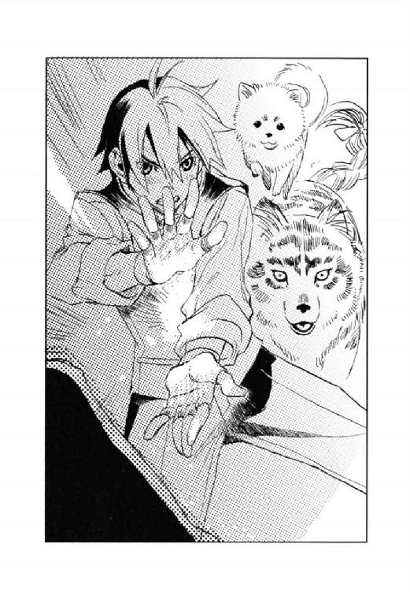
男はディオンの〈精〉の速さに目を剝いた。
間髪容れず、ディオンは障壁を解除し、間合いに踏み込む。そして、逆手に持ったナイフの柄を男のみぞおちにめり込ませた。男はよろめいたが担いだ少女は放さない。
その頃には異変を察した群衆が騒ぎはじめ、近寄ってくる野次馬も出てきた。その中には、アマーリエとヘルマンもいる。
「ディオンて、──強いのね」
「噂には聞いていましたが、これほどとは──フェルナンド様が〈蒼い鷹〉に入隊を勧めて、将来的にはご自分の片腕と考えているというのもうなずけますね」
「そう聞いた時は、そんな馬鹿なって思ったけど......」
「ブラナー大佐の秘蔵っ子だという話ですよ、って、アマーリエ様、危ないです。近寄ってはいけません」
戦闘の場に近づくアマーリエをヘルマンは止めようとしたが、遅かった。ディオンと対峙していた男が、突然ステッキをアマーリエに向けた。いくつもの炎球が皇女に向かう。
アマーリエは声も出ず、愕然と炎の塊を凝視していた。周囲から叫び声が上がる。
ディオンはザッと地面を蹴り、アマーリエと炎球の間に入った。同時に障壁を〈精〉する。
二、三の炎が〈精〉しかけた障壁をすり抜け、火の粉となってディオンの顔に当たった。
「ディオン！」
アマーリエがディオンの背中で叫ぶ。ディオンはチラッと振り返った。
「怪我は？」
「......ないわ、あなたの方こそ......」
「下がってて、危ないから」
ディオンは障壁を解き、素早く手袋の玲石を貼り替えると衝撃波を放った。少女に余波が当たることを考えて出力は最小限に抑えておく。
「うわっ」
男は弾かれたように跳びすさり、少女を地面に落とした。
「どけ、道を開けろ！」
近衛兵が来た。それを知った男は、少女を置いたまま暗がりに向かって駆け出す。濃い色の長い髪が顔を覆い、少女の顔はわからなかったが、服装からするとどこかの侍女のようである。
「この子を頼む」
ディオンは、自分に代わってアマーリエを背に庇っているヘルマンに言うと、逃げた男を追った。その後にアッシュ、シュネーが続く。
アマーリエは呆然とディオンの後ろ姿を見送った。
「わたくし、またディオンに助けられたの......？」
アマーリエはディオンの背中を目で追ったが、黒い髪に黒いタキシードの少年は、あっという間に闇に紛れて見えなくなってしまった。
一方、暴漢を追って行ったディオンは、王宮を囲む高い塀の前で立ち止まった。王宮の南東の端に当たり、自然の森を取り込んでいるため、この付近には歩哨も滅多にやって来ない。
『匂いはここで消えているわ』
アッシュは付近の地面に鼻を近づける。
「塀を乗り越えたのか」
高さ三メートルはある塀をディオンは見上げた。
『追ってみる？ ボクを放り投げてくれれば、塀を越えられるよ』
シュネーはディオンの肩に乗って、跳躍の準備を調える。
「いや、塀の外はでっかい堀になってるんだ。匂いを追うのは無理だろ」
『うわ、この時期水泳なんて、ご苦労様だね』
「とりあえず、中将に連絡して、指示を仰ごう」
ディオンは王宮に戻る道を走り始めた。
その頃──、
「それで、オルシーニ大使、僕に話とは？」
広間から遠く離れた東の宮の一室、フェルナンドは、連邦の親善使節団の団長ステファノ・オルシーニと二人で向かい合っていた。
広間から南庭へ下りる途中でオルシーニに呼び止められ、フェルナンドは自分の居室に彼を案内したのである。オルシーニが人払いを願ったため、近衛も退出させた。親善大使自らが皇子暗殺を企むとは考えにくかったが、用心のためフェルナンドは障壁が〈精〉できる杖を握っていた。
「私と私の家族を帝国に亡命させていただきたいのです」
フェルナンドは瞠目した。
「亡命──？」
「はい......。もう、連邦に私のいる場所はありません」
フェルナンドはオルシーニの表情を凝視する。かつて、祖父フィリポ六世と休戦協定を結んだ敏腕の大臣の話はフェルナンドも聞いていた。その彼が、慚愧と苦悩に彩られた眼差しで自分を見ていた。
「連邦の経済は破綻寸前、しかし、私がどんなに帝国との経済交流を提唱しようと、与党の主流である〈沈まぬ星〉は武力による帝国侵略のみが経済復興の糸口と信じてやみません。政治家として私にはこれ以上何もできない。今では差し向けられる刺客に怯える毎日なのです。それよりは、この帝国で自らの信ずる道を歩みたい」
「なぜそれを僕に？ あなたのお国はどうか知りませんが、この国では皇太子にはそんな権限はありませんよ」
フェルナンドはテーブルの下で、杖を握りしめる。
「陛下に取り次いでいただきたいのです。同行した他の特使や近衛兵の目を盗んで、皇帝陛下に直接お話しできる機会などありませんから。それに、いきなり陛下にお話ししたところで信じてはもらえませんでしょう？ 殿下、あなただって疑ってらっしゃる」
オルシーニは力ない笑みを浮かべた。フェルナンドは杖を握る指を緩める。
「そうですね。あなたが亡命と偽って、この国で諜報活動を行うつもりだろうと、実は思っています」
「しかし、あなたはきっと私の話を聞いてくださる。そして、信じてくださるでしょう。殿下が連邦との停戦を望んでいるという情報は、私の耳にも届いております。私の願いも大陸の平和──。私の寿命が後どれくらいかはわかりませんが、帝位を継いだあかつきには、私を軍師の一人に加えるおつもりはありませんか？」
フェルナンドはゴクリと唾を吞んだ。祖父と休戦協定を締結した彼が、今、自分に停戦に向けて知恵を貸そうと言っているのだ。
（信じていいのだろうか──？）
オルシーニの瞳に真摯な光が点る。
「私を動かすのは政治家としての矜持です。心の内を形あるものとして示すことができないのが残念ですが」
「こんな話を僕にしたことが連邦側に漏れたら、ご家族の方々が危ないのでは？」
彼の言葉が真実なら、〈沈まぬ星〉はオルシーニの亡命と同時に家族を拘束するに違いない。
「妻と共に弟と子どもたちを極秘で使節団に同行させました。専属の料理人として連れてきた男は、実は私の弟なのです。三人の子どもたちも使用人に変装させて連れて参りました」
「すでに入国しているのですか！ しかも変装して──!?」
使節団が帰国する時には、オルシーニは流行病にでもかかったことにして、妻と召し使い共々帰国の日時をずらし、旅の途中で砂獣に喰われたことにする計画だという。
「これで、私が帝国に骨を埋める覚悟だということを、信じていただけるでしょうか？」
（これって、もしかして使えるんじゃないか──!?）
フェルナンドは心の中で歓声を上げた。
「わかりました。皇帝陛下にお伝えすることもできますが、それよりも先に紹介したい人がいます。お待ちいただけますか？」
「入れ替わり!? マジで!?」
さすがのカイルも目を丸くした。
「だってよ。使節団の他のメンバーがオルシーニの亡命に協力してるわけじゃねーんだろ。警護隊だって目を光らせてるわけだし。メンツがそっくり変わっちまったらいくら何でもバレちまうだろが」
フェルナンドはオルシーニの話を聞いて、その場でキースを通じてアーベルン元帥をオルシーニに引き合わせ、使節団帰国の際に、〈蒼い鷹〉を彼の家族と入れ替わらせる作戦を立てた。
そして祝賀パーティー散会後、すでに明け方近くだったが、キースは〈蒼い鷹〉宿舎に戻ると同時に隊員を緊急召集して作戦会議を開いたのである。
「オルシーニ大使の弟君もご子息たちも、二台の専用馬車に分乗して、他の同行者とは極力顔を合わせないようにしていたそうだ」
キースは相変わらずの冷徹さで答える。
「うまくいくんかよ。まあ、バレなきゃ砂漠越えが楽ちんだけどさ──」
要塞侵入に際し、最大の難関は砂獣の棲む砂漠を越えなければならないことである。砂獣を避けるために建設された地下トンネルは、要塞の大動脈であり、そこをいかに通過するかが今回の任務の課題だった。
「それに、入れ替わるメンバーが大使を含めて六名だけってのは少なくねーか？」
亡命するのは、オルシーニ本人と彼の弟、妻、そして息子二人と娘一人の計六名である。
「五名だ。大使のご息女はまだ十四歳で、代替可能な隊員がいない。急病により帰国延期と偽っておく」
「五名......」
誰ともなくつぶやく。
「潜入人員は少ない方がいい。黒雷獣破壊が帝国軍の所為だと気付かれずに済む」
あくまで黒雷獣破壊は事故に見せかけなくてはならない。連邦政治の実権を握る〈沈まぬ星〉は好戦的だ。帝国軍の侵入が公になれば、宣戦布告の口実にされかねないのだ。
「それに、人間の隊員は五名だが、アッシュとシュネーを連れて行く。人間以上の戦力になるだろう」
キースはチラッと大小二頭の犬を見やり、犬たちは『了解』と元気よく返事をする。
心の中で（そんなに見つめないでくれ）と冷や汗をかいているキースの気持ちには誰も気付かない。
「では、代替する隊員を発表する」
（俺はメンバーに入れてもらえるだろうか──）
ディオンは、ゴクリと固唾を吞んだ。
「オルシーニ大使には私が代わる。万一の場合、今回の作戦は、私の一存として処理したいと思う」
無言の動揺が〈蒼い鷹〉隊員の間に奔った。大使もキースも顔を知られている。背格好が似ているにしても身代わりには無理があるのだ。それでもキース自身が出張るということは──。
（失敗して捕まったら、帝国軍とは関係ないと言い張って、自害するつもりなんだ。それほど重大で危険な任務なんだ──）
ディオンは背中に冷たい汗が流れるのを感じた。
「大使の弟にはカイル・ブラナー大佐。料理人の役で同行しているとのことだ」
「おうよ、料理なら任しとき。俺の焼いたパンや焼き菓子を食わしてやるぜ」
「あくまで亡命のための変装だ。実際に料理する必要はない」
ホントに料理した方が真実みが増していいと思うぜと、カイルはやる気満々である。
「大使の妻は、ジェイダ・ファーロング大尉。奥方は公の場にも出ているが、普段はベールをつけているので、仕草や声に注意すれば見破られる心配はあるまい」
ジェイダは唯一の女性隊員である。大使の奥方に代われるのは彼女しかいない。
「長男はユアン・レト中尉。ご長男は二十歳でムスベル人の奴隷に変装してきている」
ユアンは正真正銘のムスベル人であり、年齢も同じである。はまり役だ。
（次だ。次男の役は──？）
「次男はショーン・バイロン中尉。ご次男はまだ十六歳とのことだが、中尉にはうまく変装してもらいたい」
（外された──？）
ディオンは冷水を浴びせられたような気がした。
「待ってください」
キースに逆らうなどあり得ないことだったが、考えるよりも先に言葉が口をついて出た。
「バイロン中尉は二十三歳のはず。体つきも声もすっかり大人だし──。俺は十六で、オルシーニ大使の息子さんと同じだ。替え玉になるなら俺の方がバレる可能性が低い」
キースの薄氷の瞳が自分に向いたが、怯えているわけにはいかない。
「それにアッシュとシュネーは行くんだろ。俺とアッシュはずっと一緒にやってきたんだ。俺とアッシュで三人分ぐらいの働きができる。俺は医療系の〈精〉ならお手の物だし、攻撃系の〈精〉だってかなりできるようになったし──」
必死だった。何としても連邦に連れて行ってもらいたかった。
父を救出する──。そのために自分は〈蒼い鷹〉へ入ったのだから。けれど──、
「お前は実戦経験が少なすぎる」
キースは表情を変えず、静かに言い放った。
「山で猟をするのとは違う。殺人を犯す覚悟もできていない子どもに、この任務は務まらない」
これにはディオンばかりでなく、他の隊員たちも幾分驚いた顔をした。
「子ども──って」
一歩踏み出しかけたら、カイルに腕をつかまれた。
「そうやって、すぐ熱くなるうちはまだガキだ」
いつも脳天気なカイルが、低い声で言った。
「今回のメンバーには何度か連邦に潜入し、言葉や生活習慣に精通した者を選んだ。何か意見のある者は？」
キースは氷の瞳で隊員たちを睥睨した。
異議を唱える者はいなかった。彼の命令は絶対なのだ。
キースが使節団の帰国までの日程と入れ替わりの準備について説明をしている間、ディオンはずっと震える拳を握ったまま俯いていた。
作戦会議が終わり、ディオンとフェルナンド、アッシュ、シュネーは、重い気持ちで部屋に戻った。
ディオンはソファに身を投げ出すと、軍服の襟を緩め、「畜生」とつぶやいた。フェルナンドはかける言葉が見つからず、黙って向かい側に腰を下ろす。
シュネーはディオンの膝に飛び乗って、
『まったく、ディオンの何が不満だってのさ。ボク、ディオンを替え玉メンバーに入れてくれないんなら、要塞の中、案内しないよって、中将に抗議しちゃおうかなっ』
小さな牙を剝き出し、地団駄を踏む。
『中将は、ディオンを危ない目に遭わせたくないのよ。ディオンの〈精〉技術もその手の玲石も、帝国になくてはならないし、未来の皇帝の腹心として活躍してもらわなくちゃならないんだから──。ね、だから、そんな顔しないで』
アッシュはソファに前足をかけて、ディオンの顔を舐めた。
「俺って、そんなガキかな──」
ディオンはポツリとつぶやく。
「中将は、俺が父親がらみだと、命令を聞かないで暴走するだろうって思ったんだろな。まあ、今まで命令違反してばっかだったから、そう思われんのも仕方ないけどさ」
入隊前、祖父デンゼルが連邦に連れ去られた時も、フェルナンドが誘拐された時も、手前勝手な判断で単独行動した。ムセイオンに編入した時も言いつけを守らず、時計塔に登ってフェルナンドに怪我をさせてしまった。
「でも、今回は父さんの命がかかってるんだもの、ちゃんと命令に従って慎重に行動するつもりだったのに......」
「そうじゃないよ、中将は──」
フェルナンドは頭を振った。
「黙っててごめん、言えなくて......でも、後で知ったら、かえってショックだよね。ディオン、落ち着いて聞いて。議会は......、タウンゼント博士を助けないようにって、決議したんだ」
「──な、何で──」
ディオンはソファの背もたれから、バッと身を起こした。アッシュとシュネーも絶句し、フェルナンドを凝視する。
「黒雷獣の破壊に成功しても、博士を連れ帰ったら、帝国の仕業だってバレちゃうから、そうしたら〈沈まぬ星〉に開戦の口実を与えちゃうって......。きっと中将は、そんな作戦にディオンを加えられないって......」
ほとんど衝動的にディオンは立ち上がった。よほどものすごい形相をしていたに違いない。
『どこへ行くつもり？』
アッシュに袖を咥えられた。
『そうやって冷静さを失うから、メンバーから外されちゃうのよ』
震える唇を嚙みしめ、アッシュに視線を落とす。アッシュの黒い目が心なしか潤んで見えた。
『私だって悔しいし、悲しいわ。モーリスが心配だわ』
犬の姿はしていても、母、つまりモーリスの妻として造られたのだ。アッシュの父を思う気持ちが、自分に劣るわけはない。それでも取り乱すことなくじっと耐えているのだ。
「そうだな──。俺がこんなんじゃだめだ──」
しばしの沈黙の後、
「でも、やっぱり俺は諦めたくない。中将にかけあってみる」
ディオンは一つ大きく深呼吸をすると、キースの居室へと向かった。
「どうしても連れて行けと？」
氷の瞳がわずかに細められた。心配して追ってきたフェルナンド、アッシュ、シュネーは、はらはらしながら見守る。
「議会が父さんを救出しないって決めたことはフェルナンドから聞いた。でも、この機会を逃したら、いつ要塞へ侵入できるかわからない。頼むから使節団の替え玉メンバーに入れてくれ」
ディオンは真っ直ぐに〈蒼い鷹〉指揮官の目を見つめ返した。
「要は、黒雷獣を破壊したのが帝国の仕業だとバレなきゃいいんだろ。だったら俺の手の〈光〉の玲石が使えると思う」
ディオンは黒い指無し手袋を外して、キースに見せる。
両手の五指の付け根と手の平中央に埋められた玲石が、色とりどりに淡く美しい輝きを放った。ムスベルの秘宝と呼ばれた水星、金星、火星、木星、土星、そして月と陽の玲石である。
「これはムスベルの大神官が、黒雷獣を〈精〉する時に使った最上級の玲石だ。ムスベルの生き残りが、この玲石で俺に黒雷獣の修理をさせようとしたぐらいの代物だ。壊すことだってできるはず」
必死だった。しかしキースの表情は変わらない。
「俺は、アッシュの体の造りをずっと研究してきたんだ。アッシュは父さんの作品だし、今から壊す黒雷獣も父さんが造ったんだから、きっと似たような構造をしてる。事故に見えるように黒雷獣を壊す方法を考えるよ。だから連れて行ってくれ」
目の奥が熱くなってくるのをディオンは堪えた。
「お願いだ──。中将の命令には全部従う。黒雷獣の破壊に全力を尽くすよ......」
それまで黙って聞いていたキースがおもむろに口を開く。
「確かにお前の〈光〉の玲石と、黒雷獣に関する知識は有用だろう──」
キースが言い終わらないうちに、ディオンは再び言葉を継ぐ。
「俺が暴走するのが心配......？ だったら、俺、父さんの救出を諦める。連れて行ってくれればそれでいいんだ。......その代わりに俺を連邦に残してくれ」
フェルナンド、アッシュ、シュネーは息を吞み、キースの片眉が上がった。
「一目だけでも会いたいと、そういうことか？」
「それもある。けど、最終目標はいつか父さんと一緒に帝国へ帰ってくることだ。もちろんほとぼりが冷めてからだよ。帝国には迷惑をかけない」
「たった一人、異国の地でどうやって過ごすつもりだ」
「俺はもとは猟師だ。山の中にでも潜んでいれば、何日だって、何ヶ月だって暮らして行ける。足りない物は〈精〉で造ればいい」
熱い思いを押し殺し、努めて冷静に語った。
『私も、ディオンと連邦に残ります』『ボクも残る』
アッシュとシュネーがほとんど同時に言った。
『私もモーリスに会いたいし、ディオンと離れるのも嫌です。ディオンと一緒に連邦に残してください』
『同感。ダメだって言っても、脱走して博士んとこ行っちゃうもんね』
大小二頭の犬に見つめられ、キースのこめかみに汗が伝う。
「一人で、いや一人と二頭だけで、博士を連邦から連れ出せると思ってるのか？」
「できるよ。助け出してみせる」
ディオンは深くうなずく。
「お前が連邦に残って、博士と脱出する日を待つ間に、両国の関係がどう変わるかわからない。もしかしたら一生帝国に戻って来られないかもしれないのだぞ」
「何年かかったって、いつか絶対に帰ってくる」
意地でも虚言でもない。確固たる信念だ。
『こういうとこは、おじいちゃんそっくりね』
アッシュが苦笑する。
キースはしばらくディオンを見つめていた。ディオンも目をそらさず見つめ返す。
やがて、キースの瞳が和らいだ。
「わかった。ディオン、バイロン中尉の代わりにお前をメンバーに入れよう」
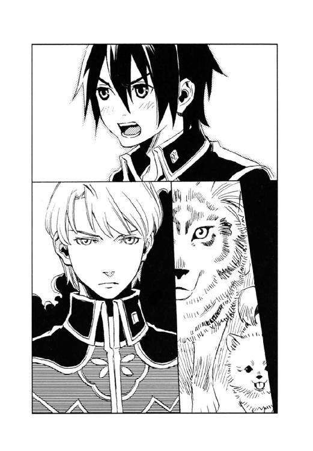
ディオンとアッシュ、シュネーは同時に歓声を上げた。
「ありがとうございます！」
「だが、任務は果たしてもらう。お前をメンバーに入れるのは、お前の〈光〉の玲石と黒雷獣に関する知識ゆえのことだ。わかっているな」
キースが独り言のように「決して犬に脅されたからではない......」とつぶやいたことにディオンは気付かなかった。
オルシーニの末子ナタリアの行方がわからないと〈蒼い鷹〉に連絡が入ったのは、その日の午後だった。
「ナタリアさん、どこ行っちゃったんだろね」
王宮の広い南庭で、アッシュとシュネーは念入りに匂いを嗅ぎ回っていた。その後をディオンとフェルナンドはついて行く。夕暮れ時の庭に人はなく、枯れた芝生が妙に寒々しかった。
『だめだわ。やっぱりここで途切れちゃってる』
『あの夜はすっごく人がたくさんいたからねー。匂いが踏み消されちゃったのかもー』
祝賀パーティーから一週間が経過していた。
オルシーニ一家の亡命の関係上、ナタリアの行方不明は公にはされず、捜索は〈蒼い鷹〉が極秘で行っていた。
「これだけ捜してもいないとこを見ると、連邦のアジトにでも連れていかれちまったのかな」
アッシュとシュネーは、オルシーニからナタリアの持ち物を借りて匂いをたどり、一般人に開放された南庭にいたことまではわかったのだが、その後の足取りが全くつかめない。
『もう明日は、私たち出発してしまうから、これ以上捜索に協力できないわね』
親善使節団の帰国が明日に迫っていた。
「明日か──」
夕焼けに染まり始めた空を見上げ、ディオンはつぶやく。
任務を遂行した後は連邦に残り、父を救い出すまでは帝国には戻らないつもりだった。
（ごめん、フェルナンド。二人で戦争のない国造りをしようって誓ったのに......）
その約束を果たせないかもしれない。
「宿舎へ帰る前に、僕の部屋へ寄ってくれない？ 君のために仕立てたコートが届いてるはずなんだ。連邦の冬は厳しいっていうからね」
明るく言うフェルナンドに、ディオンの胸がチクリと痛んだ。
東の宮、フェルナンドの居間の扉を開けた途端、
「お兄様っ！」
聞きたくない声が耳に飛び込んで来て、ディオンは思わず後退る。
「王宮に来てるって聞いて、きっと宮にお寄りになると思って、お待ちしてたの」
アマーリエは、フェルナンドには満面の笑みを向けたが、背後のディオンに気付くと、「あら──」と、一瞬ギョッとした表情になった。
「ちょっとディオンに渡すものがあったから寄っただけなんだ。すぐに宿舎に帰らなくちゃならないから、ごめん、ゆっくりしてられない」
「えーー、そんなひどいわ。お菓子を持ってきたのよ、わたくしが焼いたの」
アマーリエはフェルナンドの手を引っ張りソファにかけさせる。そして、チラリとディオンを見て、
「何をぼーっとつっ立ってるの？ あなたも入ったらどう」
つんと顎を突き出す。けれど、思ったほどその口調にトゲはない。
逆らったらかえって面倒なことになりそうなので、ディオンは素直に入り口近くの椅子に腰掛ける。部屋には他に誰もいなかった。普段、東の宮には主がいないので、皇太子付きの侍女や近衛は他の宮に仕えているということだった。
「そちらのワンちゃんたちもどうぞ」
ディオンに向ける表情とは違って、アマーリエが犬たちを見る目は穏やかである。フェルナンドと同じく基本的に動物が好きなのかもしれない。
アマーリエは焼き菓子をテーブルに広げ、自らお茶を淹れる。
湯気の立ったカップをディオンに差し出し、
「──別に、ディオンのことを許したわけではないのよ」
アマーリエは妙にぎくしゃくした喋り方をした。
「ただ、ちょっと......この間のお礼が......まだ......」
頰が真っ赤に染まる。
（この間のお礼って、俺、何かしたっけ？）
ディオンはパーティー会場で彼女を助けたことをすっかり忘れていた。と言うより、そんな意識もなく暴漢の放った炎球から彼女を庇ったのだ。
「一応はありがとうと言っておきますわね。──でも、あなたが犬舎でしでかしたことを忘れたわけではないわ。あ、あなたなんか、わたくし......嫌いですからね」
「はあ......」
どういう返答をしたらいいのかわからない。しかしなぜだかアッシュとシュネーはニコニコと尻尾を振っていた。
「だから、しばらくあなたが帝国を離れるのはせいせいするわ。ええ、そうよ、ちっとも心配なんかしてませんからね」
ディオンとフェルナンドは呆然と沈黙する。
「オルシーニ大使のご子息と入れ替わって、連邦へ行くのでしょ？」
「──なんで君がそんなことを知ってるんだ!?」
「〈蒼い鷹〉がオルシーニ一家と入れ替わって連邦に潜入するのは、Ａランクの極秘任務だよ」
アマーリエはハッとした表情で口を押さえた。
「あ、あら、そうだったわね。大丈夫よ、他の人には一言も言ってないから」
「それより、誰からその話を聞いたんだ？ また父上と元帥の話を盗み聞きしたのか？」
「えーと、まあ、そんなとこ......」
ディオンとフェルナンドは同時に脱力した。
「意外なところから情報って漏れてるものだね......」
「でも、本当に他の人には言ってないわ。それに、詳しいことまでは知らないの。ご子息が十六歳だって聞いて、きっとディオンがメンバーに選ばれたんだろうって思っただけで......」
アマーリエはしゅんと肩をすぼめる。
「選ばれなかったの？ タウンゼント博士を置き去りにするって議会で決まったから？」
「ディオンがタウンゼント博士の息子だって、知ってるの？ それも極秘なんだよ」
「知ったのはつい最近よ......。誰にも言ってないし、これからも言うつもりはないわ」
彼女の情報収集力は侮れない。
「......お父様を助けに行きたいでしょうね......」
アマーリエは俯いたままつぶやく。
「何とかしてさしあげたいわ。そうね、使節団に潜り込むことはできるかも──」
アマーリエは思案げに宙を見つめる。
「使節団に潜り込む方法があるの？」
フェルナンドが身を乗り出した。
「ええ、ちょっとしたツテがあるのよ。でもどんなツテか聞かないでね」
アマーリエは笑って人差し指を唇に当てた。フェルナンドは真剣な眼差しで妹を見つめる。
「ディオンはメンバーに選ばれたんだ」
「おいおい、Ａランクの機密を──」
「まあ、よかったわね」
ニッコリと笑むアマーリエに、フェルナンドはたたみかけた。
「アマーリエ、僕も連邦に行きたい。僕を使節団に紛れ込ませてくれ」
「「え────!?」」
ディオンとアマーリエは目を丸くして同時に声を上げた。
「な、何考えてんだ？ お前、自分が皇太子だってこと忘れてんのか？」
「そうよ、お兄様、皇太子は敵国に極秘潜入して破壊工作なんてしないものよ」
「皇太子だからだよ。ディオンは連邦に残るつもりなんだ。だったら僕も行く。一日も早く博士を取り戻して、ディオンが帝国に戻って来られるようにしたい。万一、ディオンのことが連邦にばれて、宣戦布告の口実にされそうになったら、僕が正体を明かして交渉する。場合によっては人質になってもいい」
（俺が約束を果たせそうもないことを、フェルナンドはずっと気にしてたんだ......）
彼の気持ちは嬉しいし、申し訳ないと思う。けれど──、
「人質って、そんな危ない真似、お前にさせられるか」
「大丈夫、せっかく手に入った帝国の皇太子を、連邦がぞんざいに扱うわけないよ。僕と引き替えに、帝国に好きなだけ有利な条件をふっかけることができるんだもの。議会のじいさんたちは怒るかもしれないけど」
フェルナンドはいつもの春風のような笑みを浮かべる。
「だめよお兄様、やっぱり危ないわ。正体を明かせば命まで取られることはないにしても、それ以前に戦闘に巻き込まれるとか、砂獣の餌食になっちゃうとか......」
アマーリエは蒼白である。
「平気、〈蒼い鷹〉は強いよ。ディオンもアッシュも──。僕もみんなほどじゃないけど、強くなったんだよ。それにね」
空色の瞳がディオンをとらえた。
「ディオンのお父さんも助け出せないようじゃ、とても次の目標には進めない。二人で戦争のない国を造るっていう目標に──」
ディオン、アマーリエ、それにアッシュ、シュネーも未来の皇帝の輝く瞳に見入った。
（ああ、そうだ──。フェルナンドの思い描く未来は、俺の夢なんだ）
ディオンの心が熱く騒ぐ。
ついて行くのではない。支えるのでもない。共に歩みたい──。
「だから一緒に行っていいでしょ？」
フェルナンドの笑みに誘われ、
「ああ、頼む」
ディオンは力強くうなずいた。
「確かにそうね──。及び腰じゃいつか連邦に足下をすくわれるわ。休戦協定を維持しつつ、タウンゼント博士を取り戻す。それくらいやってのけなくちゃ──。ちょっと待ってて」
アマーリエは席を立ち、居間から小走りに出て行った。
『意外ー。ただのわがまま姫じゃないんだねー。フェルナンドもだけど、皇女殿下までこんなふうに考えるなんて、誰の影響なの？ 現皇帝陛下はことなかれ主義だって聞いたけど』
シュネーがディオンの膝に飛び乗ってささやく。
「誰の影響ってこともないと思うよ。僕だって小さい頃は、何で皇太子なんかに生まれちゃったんだろって思ったこともあったけどね。まあ色々あって、夢が絞られたってとこかな。アマーリエも多分同じだと思う」
フェルナンドの笑みが少し大人びて見えた。
（色々あって──か）
彼の確固たる信念はどこから来るのか、いつか聞いてみたい気がする。
扉が開き、小さな旅行鞄を抱えたアマーリエが戻ってきた。
「ディオン、これを持って行って」
彼女は鞄から象牙細工のペンダントを取り出す。
「お守りよ。お兄様は皇太子という肩書きが守ってくれるけど、ディオンには守ってくれるものがないでしょ」
アマーリエは頰を紅潮させ、微妙に視線をそらしたまま、ペンダントを差し出す。
「言っときますけど、決して、ああああなたのことを心配してるわけではないのよ。あなたにお兄様の命を預けるんですからね。あなたに、まま万一のことがあったら困るからよ」
何をあせってるんだろ？ と思いながら、
「ああ──、ありがと。大丈夫、決してフェルナンドを危険な目には遭わせないよ」
ディオンは象牙のペンダントを受け取った。象牙は緩いカーブを描いた円筒形で、極小の角笛のようだった。
「これ、笛なのか？」
「そうよ。お守りの笛。万一、どうにもならないような危機に陥った時に吹いてね」
（お守りの笛？ 吹くと笛の中から魔神が飛び出てくるとか？ まさかね）
小さい頃読んだおとぎ話を連想しながら、ディオンはそれを首にかける。
「お兄様には変装していただくわ。途中で中将に見つかったら追い返されてしまうでしょ。今から私が言うことをよく聞いて、うまくやってね」
アマーリエは鞄から一着の服を出した。
「え──!?」
アマーリエが広げた服を見て、ディオンもフェルナンドも絶句した。
「荷物はこれで全部か!?」
「馬にやる飼い葉と塩は足りてるか!?」
「おーい、蹄鉄が外れた。誰か打ち直してくれ」
王宮裏の廏舎は、親善使節団出立の準備で騒然としていた。
「おい、ちょっとこれ、運ぶの手伝ってくれ」
大きな木箱を抱えたエプロン姿の中年男が、ディオンに声をかけた。
「はーい」
発音に注意して、ディオンは連邦の言葉で返事をする。黒髪を茶に染め、長い前髪を顔に垂らしてそれとなく顔を隠している。焦げ茶色の革のベストとズボンは、使節団入国の際、オルシーニの次男が身に着けていたものである。
エプロン姿の中年男は実はカイルである。茶髪を脱色し、料理人用の白い帽子を目深にかぶって、口の周りには薄い皺が描いてある。でっぷりと肥えた腹の中身はバスタオルだ。
馬に飼い葉をやっているのはユアンである。長い金髪を後ろで一つに束ね、つばびろの帽子をかぶり、刺繡の入ったムスベル風の長い上着を羽織っている。
カイルと野営用の食材を運んでいると、
「全員整列！ 人員の確認を行う」
黒い軍服の一団がやって来た。使節団警護隊である。
（ここが第一の難関だな）
ディオン、カイル、ユアンは作業を止め、馬車の前に並んだ。他の使用人たちもそれぞれ自分の主の馬車の前に並ぶ。ディオンは俯いて、彼らに顔を見られないようにした。
特使たちは自分の家の召し使いを連れてきており、仕える主人ごとに馬車が決まっていた。その上、往路でもオルシーニの家族は極力、他家の者と接触を避けていたので、多少顔を見られても大丈夫なのだが、やはり緊張してしまう。
隊長のカルロ・グリエルモ中佐が、名簿らしき書類とペンを手に、例の鋭い目で一同を眺め渡した。
「オルシーニ大使の馬車だな。御者、パウル・ブルグント」
「はい」
顔を俯かせたまま、ディオンは返事をした。パウルというのは、オルシーニ大使の次男が使っていた偽名である。
ディオンはカルロの靴を見ていたが、それでも彼が自分をなめ回すように凝視している気配を感じる。
（ひー、心臓に悪い......）
ようやくまとわりつくような視線が離れ、軍靴のつま先が隣に向いた。
「料理人、レオン・バルドー」
「へーい」
カイルの心臓には毛が生えているらしい。
「ムスベル人奴隷、ミシェル・オード」
「はい」
ユアンはムスベル訛りで答える。
（大佐は実家がパン屋さんだし、ユアンも本物のムスベル人だし。無理に料理人や奴隷に化けてきたオルシーニ大使の家族より、俺たちの方が本物っぽいかも）
御者を務めるディオンも、馬ばかりでなく鹿や猪、熊など動物全般が扱える。
「荷物を検査する。扉を開けろ」
カルロは部下に命じて、大使夫妻専用の箱型馬車と荷物用の幌馬車を検めた。衣装箱や塩漬け肉の入った木箱の中身まで調べる念の入れようだった。
（すごい厳重な警戒だ。フェルナンド、うまくやれよ）
ディオンはチラリと居並ぶ馬車に視線を奔らせた。
すべての馬車と使用人及び積み荷の点検が終わるまでに一時間近くを要した。ようやくディオンたちは王宮正面玄関への移動を許される。
しばらく待っていると、皇帝陛下への辞去の挨拶を終えた特使たちが、玄関に姿を現した。
緑灰色の詰め襟を着た特使の中に、頭から薄衣をかけて顔を隠した長身瘦軀の男がいる。
「オルシーニ大使、どうなされたのです？」
見送ろうと待ち受けていた帝国の貴族の一人が尋ねた。
「主人は流行病に罹ってしまったらしく、発疹がひどくて、ああ、近寄らないでくださいまし、伝染るかもしれません」
代わりに奥方が答えた。
（あれが、ジェイダ!? すげー、見事な化けっぷり──）
奥方に似せて化粧をし、薄いベールをかぶったジェイダは、祝賀パーティーで見たオルシーニの奥方そのものだった。ゆったりとしたドレスの下に布でも入っているのだろうか、体型もややふっくらした感じだ。
「流行病──」
近くにいた貴族たちが、半歩ほど下がる。
「わざわざのお見送り、痛み入ります。それでは、ごきげんよう」
奥方は一礼し、無言で俯く夫を支えてポーチの階段を下りる。大使夫妻が馬車に乗ろうとすると、
「お待ちください」
警護隊長、カルロ・グリエルモ中佐が呼び止めた。
「念のため、大使のお顔を拝見させていただきたい」
ジェイダ扮する奥方は、キッとカルロを振り仰ぐ。
「病に罹った主人の顔を、衆人環視の前に晒せとおっしゃるのですか!?」
「非礼は承知の上です。しかし、大使のふりをして、帝国の密偵が連邦への侵入を謀る可能性もあります」
周囲の人々がざわめいた。
「この人が偽者だと言うの？ わたくしが、夫を見間違えるわけがありませんでしょう！」
迫真の演技である。
「あくまで、念のため。偽者の大使を連邦へ連れ帰るわけには参りませんから」
鋭いカルロの黒い目がジェイダを見る。
「何てひどいことを──」
声を荒らげるジェイダを、大使は遮った。
「いいのだよ。顔を見せればいいのだろう」
一同の目が大使に注がれる中、大使は顔を覆っていた薄衣を取った。
布の下から現れたのは、本物のステファノ・オルシーニ大使の顔だった。顔中に赤い斑点が広がり、目が充血している。
「これでよろしいかな？ どうも熱があるらしく、すぐにでも横になりたい。馬車へ乗ってもかまわないかね」
大使は弱々しい声で言った。長期旅行用の大型馬車なので中には寝台がしつらえてある。
「──失礼いたしました」
カルロは敬礼すると踵を返す。
大使夫妻が馬車に乗り込むと、御者役のディオンは扉を閉めながら、
「大使、大丈夫ですか？」
と尋ねた。
「ああ、大丈夫だ。君の薬は大したものだね」
オルシーニは小さく笑った。
使節団の馬車行列は、沿道に並ぶ大勢の人々に盛大に見送られ、帝都を出立した。
青々と芽を出したばかりの小麦畑が広がる農村地帯を抜け、夕闇が迫る頃には深い森へと分け入る。
左右から張り出した木々の枝が、傾いた日を遮り、森の中は暗かった。
馬車一台がようやく通れる程度の狭い街道を、ディオンはたくみに手綱を操って進む。
（そろそろだな）
これまで、馬車の横を走っていた警護隊の騎兵は、道が狭いために馬車の前に場所を移していた。後ろにはユアンの操る幌馬車がぴったりとついている。
前方の木の枝が揺れたかと思うと、タン、と背中で小さな音がした。
「首尾は？」
キースの声が耳元でした。
「上々だよ、誰もバレなかった」
振り返らず、ディオンも小声で答える。
「よし」
キースは馬車の屋根から上体を逆しまに扉の方に下ろす。すると扉は、待ちかねたように小さく開いた。彼はするりと身を滑らせ、扉の中へと姿を消した。
ディオンは少しずつ馬車の速度を落とす。前方の騎兵は気付かず、騎兵と馬車との距離が徐々に離れていく。
緩いカーブにさしかかった。ディオンは馬車をゆっくりと走らせる。扉が開き、大きな毛布の塊が転げ落ちた。そして街道脇の茂みの中に埋もれる。
車輪の音が遠のいたことに気付いたのか、前方の騎兵が速度を緩めた。
「どうした？」
騎兵は振り返って尋ねる。
「カーブが多いから、大使が馬車に酔ったみたいなので」
ディオンは何食わぬ顔で答えた。
その夜の宿は、帝国中東部の小さな宿場町だった。
「大使のお加減はいかがかな」
宿の前に停まった馬車を、カルロが訪ねてきた。
「よろしくありません」
奥方──ジェイダは、馬車を降り、首を振った。
「流行病が他の方に伝染っては大変なので、主人はこのまま馬車の中で夜を過ごすと申しております」
「宿のベッドの方が、ゆっくりお休みになれるのでは？ 医師にも診せなくてはなりませんし」
「お心遣いありがとうございます。けれどそれには及びませんわ。王宮を出る時に、陛下の侍医が薬を処方してくださいましたし」
やんわりと断り、ジェイダは馬車に戻る。カルロは閉じた扉をしばらく見つめていたが、やがてその場を離れた。
ディオンはそれを見届けると、荷物用の幌馬車の方に乗り込んだ。
「あの警護隊長、やっぱ油断できない」
幌馬車の中はカンテラが灯され、荷物の隙間に敷いた毛布の上で、カイルとユアンが夕食を摂っていた。使用人たちは宿には泊まらず、馬車に寝泊まりすることになっている。野営の場合は自炊するが、宿に泊まる時は使用人たちにも食事が届けられることになっていた。
「そりゃー、こんな任務に就くぐらいだ。相当のやり手なんだろ」
「このまま何事もなく要塞に着けるといいけど」
別段、特別な騒動も耳に入って来ないところを見ると、フェルナンドも無事なのだろうが、
（心配だなー。あいつ、どっか微妙に抜けてるからな──）
安否を確かめに行きたくなる。そこをぐっと堪えてもそもそとパンを口に運んでいると、
『ディオン』
幌馬車にアッシュとシュネーが飛び込んできた。
「どうだった？」
パンの欠片をアッシュとシュネーに分けてやる。
『オルシーニさんは無事よ』
二頭の犬は、使節団の様子を窺いながら、つかず離れず付いて来ていた。
「じゃ、馬車から毛布にくるまったオルシーニさんが飛び降りたの、誰も気が付かなかったんだな。後続の馬車や、警護隊の連中に見つかったらどうしようって思ったけど」
『暗かったし、大使も打ち合わせ通り全部の馬が通りすぎるまで茂みの中でじっとしてたし』
『すぐにヴァレリー少佐が迎えに来たから、今頃はもう帝都に戻ってるはずよ』
今回の入れ替わりでの第一の難関は、出発前の人員確認だった。大使とてカルロの目から逃れることはできない。そこで、オルシーニには病気になってもらうことにした。流行病によく似た症状を一時的に起こさせる薬を〈精〉したのはディオンである。一度、発疹の出た顔をみんなに見せて馬車に乗り込んでしまえば、もう馬車に近づく者はいない。
一方、キースは別の馬車で先回りし、森の中で待機していた。そこで、こっそりキースとオルシーニの入れ替わりが行われたのである。
「うまくいってよかったですね。中将が走っている馬車に飛び乗ることには大して心配はしませんでしたが、大使が飛び降りた時にはヒヤヒヤしました」
すぐ後ろの幌馬車から一部始終を見ていたユアンは穏やかに笑む。
「最初の難関は突破したわけだ。明日からしばらくはのんびり旅を楽しめる。そうだ、明日、おやつにリンゴのパイを焼いてやるぞ」
カイルはニッと笑った。この期に及んで彼はのんびり旅を楽しむつもりらしい。
翌日、午後の休憩時間にカイルは本当にパイを作った。
「昼飯時に、リンゴを煮ておいたんだ。生地も仕込んでおいたし」
金属製の箱の中に、パイ生地で包んだリンゴを入れ、焚き火の中に置く。簡易オーブンなのだろう。
「って、それ持ってきたの？ 旅の途中でパンやお菓子を焼くために？」
「おうよ、他に何の楽しみがある」
泣く子も黙る帝国一の銃の使い手、〈蒼い鷹〉のカイル・ブラナー大佐の趣味は、パンとお菓子作りなのだった。
『わーい、リンゴのパイ！』
シュネーは焚き火の周りをピョンピョン跳びはねる。
ジェイダも馬車から降りてきて、「まあ、いい匂い」と焚き火を囲んだ。
「馬車に閉じこもりきりなんて、中将はお気の毒ですねえ。重病人のふりをしてるのでは、パイも食べられませんでしょう」
焚き火に薪をくべながら、ユアンは微笑む。
（なぜここでリンゴのパイ？ この人たちに危機感ってないのか？）
ディオンは感心を通り越して呆れた。
その時、ドタッと何かが倒れる音がして、ディオンたちは振り返った。見ると、黒いワンピースに白いエプロン、金髪をお下げにした少女がうつぶせに転んでいた。歳の頃は十五、六だろうか。地面にはカゴが転がり、野菜や果物が散らばっている。
「大丈夫？」
ディオンは少女に駆け寄った。
「大丈夫よ。いい匂いに気を取られて、つい足もとがおろそかになっちゃったの」
彼女は立ち上がるとスカートの砂を払い、落ちた野菜や果物を拾い集める。
「ちょっと待ってて」
ディオンは焚き火のところに戻り、
「リンゴのパイ、もう焼けた？ あの子にあげたいんだけど」
簡易オーブンの蓋を開けているカイルに尋ねる。
「ああ、いい具合だ。けど、珍しいな、お前が女の子に興味を持つなんて。どこのメイドだい？」
カイルはニヤニヤしながら、切り分けたパイをナプキンに包んで差し出した。
「さあ、前の方の馬車で働いてるみたいだけど」
ディオンはパイを持って走り、少女に渡す。彼女はカイルの方に向かって軽く頭を下げると、
主の馬車の方へと駆けて行った。
戻ったディオンを待ち受けていたのは、カイル、ユアン、ジェイダの盛大な拍手だった。
「いや、おめでとう。お前の成長を心から祝福する」
「何だよ、女の子にパイをあげたぐらいで、大げさだな」
ディオンは渋い顔をした。
「いいか、のんびりしてられるのは国境までだ。それまでには名前ぐらい聞いておけよ」
カイルはドンとディオンの背中を叩いた。
国境付近の峠には、一足早く冬が到来していた。
御者台のディオンは白い息を吐きながら、真っ青な空を見上げた。空を貫くがごとく、雪化粧したニヴル山脈の雄姿があった。
この山脈は大陸の北東から南西にかけて連なり、帝国と連邦とを隔てていた。標高四千メートルを超える山々が連立し、山越えできる道はごくわずかだ。ディオンがいたビヴロス峠も、この山脈の一部に属している。
ニヴル山脈は多くの源石の鉱脈を有し、玲石の採れる山もある。帝国と連邦の不仲は、この鉱脈のせいなのである。より多くの源石を、より上質な玲石を、と奪い合った末に、大陸北部のムスベル王国は滅びてしまった。
（お互い上手に分け合えばいいのにさ、人間て欲張りだよな）
ディオンは壮大な山々を見上げながら、ため息をついた。
間もなく、険しい斜面を削り取って建てられた、石造りの城が見えてきた。帝国の砦である。
砦の向こう、すなわち連邦の領土へ続く峠道には、頑丈な木の門が取り付けられていた。しかし峠の両脇は切り立った崖になっており、門を通らなければ向かいの山へは行けないようになっている。もっともそれは人間の話で、アッシュとシュネーは崖下の獣道を通って国境を越え、今頃は連邦の領土に足を踏み入れているはずだ。
「馬車を止めろ。人員及び積み荷を検分する」
砦の前には十数人の国境警備兵が、濃紺の軍服に長いマントを着込んで居並んでいた。砦の責任者らしき将校と、連邦警護隊長カルロが敬礼を交わす。
「特使殿も使用人の方々も、馬車を降りていただきたい」
使節団の一行はぞろぞろと馬車の前に並ぶ。
国境警備兵は手分けして特使や使用人の身元を検め、馬車の積み荷をのぞいて回った。
キースが乗る馬車を警備兵が開けようとした時、
「流行病に罹っております。近寄らない方がよろしいかと」
ジェイダが言うと、兵士は「そ、そうですか、お大事に」とあっさり引き下がった。
検分は割合に短時間で終わった。おそらく元帥が手を回しておいてくれたのだろう。
「よーし、いいぞ、通れ」
門が開けられた。しかし、
「お待ちください。この子の身元が確認できていません」
馬車に乗り込もうとしていた人々が、一斉に振り返る。
一人の国境警備兵が、金髪お下げの少女の手を引いてやって来た。
「あの子、前にディオンがリンゴのパイをあげた子じゃ......」
ユアンがつぶやいた。
兵士はディオンの馬車の前で立ち止まり、
「この子は入国の際の名簿では、オルシーニ大使の侍女タリーということになっておりますが、間違いありませんでしょうか？」
オルシーニの妻こと、ジェイダに尋ねる。馬車の中で兵士の声を聞いていたキースは、
（タリー？ オルシーニの行方不明の娘、ナタリアが使っていた偽名ではないか）
窓から薄衣をかぶったまま外をのぞいた。
少女は顔を上げてニッコリと笑んだ。
ジェイダの口があんぐりと開いた。カイル、ユアンも目が点になっている。
馬車の中で一人、キースは表情こそ変えなかったが、愕然と青ざめていた。
金髪お下げのメイドは、フェルナンドの顔をしていたのだ。
もともと十六の少年にしては華奢な体つきのフェルナンドは、女物のワンピースを見事に着こなしていた。フリルの胸当て付きエプロンが真っ平らな胸を上手に隠し、金髪のお下げとレースのヘッドドレスは、ふっくらすべすべの彼の頰を一層愛らしくしている。
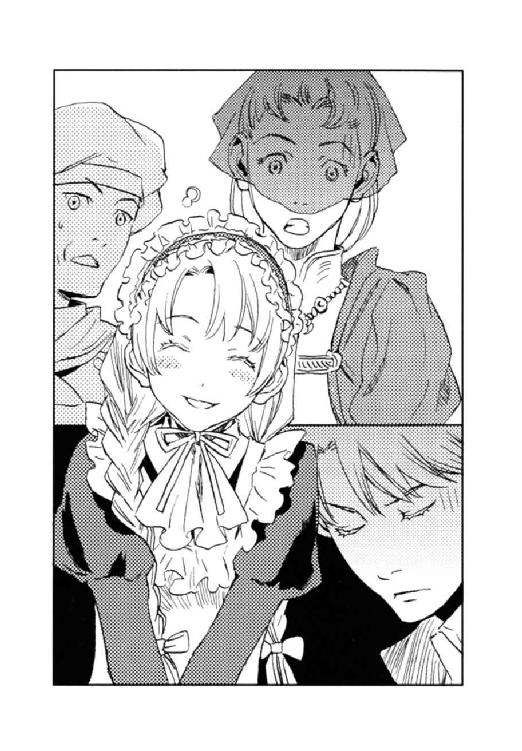
「あ、あの......」
ジェイダは口ごもり、カイルは蒼白で、口をぱくぱくさせ、（お前、そんな恰好で、どうしてこんなとこにいるんだ!!）と、口の形だけで叫んだ。
ジェイダ、カイル、ユアンは、バッとディオンを振り向いた。
（お前、知っていたな!?）
彼らの目がそう言っていた。ディオンは視線をそらし、しらばっくれる。
「どうかしましたか？」
兵士が怪訝な表情になる。
「い、いいえ、何でもありませんわ」
ジェイダは口に手を当てホホホと笑ってごまかす。
そこへ、連邦警護隊長カルロがやって来た。
「出立前には、タリーは流行病に罹ったので、帝国で療養させると大使から報告を受けていたが、当日になって、だいぶよくなったので、一緒に連邦へ連れ帰りたいと連絡があったのだ」
（誰だ、誰が連絡したんだ！）
キースのこめかみに血管が浮く。
「けれど、旦那様も同じ病に罹ってしまって、またぶり返してはいけないから、お他所で働きなさいって言われて、私、ドゼーニ特使のところで働いていたんです」
フェルナンドは言った。
（言ってない、私は何も言っていない！）
キースは心の中で叫んだ。
「そこはドゼーニ特使の確認が取れています。ではオルシーニ大使の侍女タリーで間違いありませんね」
「は、はい。間違いありません」
ジェイダは答えた。今更この子は偽者ですとも、まして実はアーガルド帝国の皇太子ですとも言えるわけがない。
「タリー、具合はどう？」
「ご心配おかけしました。もうすっかり元気です」
上官たちの動揺をよそに、フェルナンドは飄々としている。
「そ、そう。では、こちらの馬車に戻ってらっしゃいね。ドゼーニ特使には後でご挨拶に伺うわ」
ジェイダはタリーことフェルナンドを手招き、「お手数をおかけしました」と兵士とカルロに引きつった笑みを向けた。
こうして一行は国境の帝国側の砦を通過したのである。
「何てことをしてくれたのです......」
豪奢な箱型馬車の寝台に腰掛けるキースの表情は、相変わらず冷徹だったが、声が妙に弱々しかった。ショックが大きすぎて怒ることもできないのかもしれない。
「申し訳ありません」
ディオンとフェルナンドはそろって頭を下げた。
使節団は狭い峠道を連邦の砦に向かって進んでいた。この馬車は今、カイルが操っている。
「でも、今更帝都に戻れなんて、言いませんよね」
フェルナンドは春風の笑みだ。
「言えるなら、どれほど楽か......」
国境警備兵も連邦の警護隊長カルロも、このメイド姿の少女をタリーだと思い込んでいるのに、どんな理由をつけて帝国へ帰せるだろうか。下手な小細工をすれば、この作戦そのものがカルロに知れてしまう。
「こうなったら、ごまかし通すしかない」
キースは細いため息をついた。
「それで、フェルナンドはなぜこのような無茶をした。そして、ディオンはなぜ止めなかったのだ？」
キースの問いに、フェルナンドから笑みが消えた。
「ディオンのお父さんをどうしても連れ帰りたかったからです。うまくいかなかったら、僕が連邦と交渉するつもりです」
「自分の身を代価にして連邦と交渉すれば、博士の救出及び休戦協定の維持が可能だと思うのか？」
「はい」
空色の目の中に、熱さと冷静さとを併せ持った王者の片鱗が見えた。ディオンはこの瞳に魅せられたのだ。それはキースも同じだったらしい。
「そうか──」
キースは小さく笑んだ。苦さと諦めとが混じっていたにせよ、彼が笑うのはとても珍しいことだった。メイド服と台詞が似合わなかったからかもしれないが──。
「では今回のことは、作戦の全容を知らせなかった私の責任でもあるな」
「作戦の全容？」
「帝国議会に漏れることを危惧し、カイル以外には知らせていなかったのだが、黒雷獣破壊と同時に、タウンゼント博士を救出するつもりだ」
「──中将」
ディオンは驚きすぎて思わず立ち上がり、馬車の天井にしたたか頭をぶつけた。
「いてて......。って、本当に？ 連邦にバレても、帝国にバレても中将の首が飛ぶってのに？」
「博士がいる限り、何度黒雷獣を破壊しようが、連邦は黒雷獣を造り続ける。そしていつか、黒雷獣は大陸を滅ぼすだろう。私の首でそれを阻止できるのなら安いものだ」
キースは淡々と言った。
常に冷徹な彼が私情に左右されるわけがない。モーリスを帝国に連れ帰ることが、国の安寧につながると、客観的な判断をしたのだろう。それでもディオンは嬉しかった。
「ありがとうございます！」
「よかったね、ディオン」
「だから、決して早まるな。お前たちがただの性急な子どもではないということを私に見せろ」
表情は変えず、氷の瞳がディオンたちを射た。
「了解」
静かに、しかし確固たる声でディオンは答えた。
「怒られたか？」
「ううん、そうでもない」
御者台に登ったディオンは、軽く笑ってカイルから手綱を受け取る。
「フェルナンドは？」
「まだ中将のとこ。ドゼーニ特使の使用人に紛れ込んだ時のことを詳しく報告してる」
「いや、驚いた。まさかあの可愛い子がフェルナンドだとはなー。本物の女の子だと俺は信じて疑わなかったぜ」
なぜかカイルは残念そうだった。
「うん、似合いすぎるよね。言うとあいつ怒るけど」
「お前のために、そこまでできるんだな。いや、女装のことじゃねえぞ。体を張って連邦と交渉しようっつーこと。客観的に見りゃ、無鉄砲以外の何ものでもねえんだが」
しみじみとした口調でカイルは言った。
「それだけフェルナンドは自分の未来をお前に賭けてるんだな」
「あいつ、俺の父さんも助け出せないようじゃ、二人で戦争のない国を造るっていう目標に進めないって言ったんだ。だから一緒に行きたいって──。あれは殺し文句だった」
ディオンは笑う。
「けど、フェルナンドが俺に賭けてるんじゃない。俺があいつに未来を託してるんだ」
「言うねえ。のろけにしか聞こえねえぞ」
カイルはクスクス笑った。
峠の先に連邦の砦が見えてきた。帝国のものより二回りは大きく、いくつもの砲門が帝国に向けられている。砦の手前には頑丈な門があり、侵入してくる者を厳然と阻んでいた。
「なんだか砦を見ただけで、連邦の敵意が伝わってくるね」
「それだけ、国に余裕がねえってことだ。政治的にも経済的にもさ」
連邦の検分は、帝国のそれと比較にならないほど厳しかった。
門は二重になっていて、手前の門のみが開き、馬車は一台だけが通される。歩兵銃を構えた国境警備兵が取り囲む中、人も荷物も厳重に調べられた。付き添っている警護隊、すなわち味方の兵士さえも身体検査をされるのである。通行許可が下りると二つ目の門が開き、晴れてその馬車は連邦へ入国できるのだった。
「これじゃ警護隊の立場がねえよなー。こんな厳しく検査するってことは、警護隊の仕事を信用してねえってことじゃん」
「まあ、そうだけど、簡単に信用するのは危険だろうねー」
実際、自分たち帝国軍人が警護隊の目をごまかして紛れ込んでいるのだ。
「さ、いよいよ第二の難関だ。うまくやれよ」
カイルはニッと唇の端をつり上げ、幌馬車に戻る。しかし、いつも温かなハシバミ色の瞳は険しかった。
「次の馬車、入れ」
ディオンの馬車が一つ目の門の中に招き入れられた。
「御者、パウル・ブルグント、ファルネーゼ出身、十六歳」
御者台を降りたディオンは、警備兵に身分証を見せる。オルシーニの次男が亡命に先立ち、用意した身分証だ。
「出国の際の調書によると、濃い茶の髪、瞳は青灰色となっているが──」
オルシーニの次男は青灰色の瞳なのだ。
（来たな──）
警備兵は、顔に被るほど長いディオンの前髪を乱暴につかみ上げた。その途端、
「わっ」
兵士は慌てて手を離した。
「何だ、その目は？」
ディオンのまぶたは腫れ上がり、潤んだ目は真っ赤に充血していた。
「多分、流行目だと思うんだけど、すみません、これ以上大きく目が開かないんだ。瞳の色、見えた？」
「あ、ああ。もういい」
警備兵はあたふたと砦の方に駆けていった。多分、手を洗いに行ったのだろう。
（うまくいった）
オルシーニの息子と瞳の色が違うことはわかっていたので、前もってディオンは目が腫れる薬を〈精〉しておいた。そして身体検査の直前にその目薬を差したのである。
（手の方も、準備しておいたんだけど、必要なかったな）
ディオンは普段、黒い指無し手袋で、〈光〉の玲石を隠しているが、ムスベル人は手の平に玲石を埋める習慣があるので、国境では必ず手を調べられる。そこで、皮膚病に似せた皮を〈精〉し、手の平に貼り付けておいたのである。
馬車の前では、ジェイダが検査されていた。彼女の手の平にも玲石が埋まっているが、
「結構です、奥様。ご協力ありがとうございました」
ベールや手袋は、連邦の高貴な婦人の身だしなみなので、無理に取らせたりしないらしい。
（問題は、中将だ）
ディオンはゴクリと唾を吞んだ。
「失礼ながら、オルシーニ閣下、馬車を降りていただけませんか」
兵士が馬車の扉を叩く。
「主人は流行病で伏せっております。警護隊のカルロ・グリエルモ中佐もご承知のことです。身分証はここにありますので、これでご勘弁くださいませんか」
前もって打ち合わせておいた台詞だ。
「中佐から聞いております。しかし、せめてお顔だけでも拝見させていただきたい」
「発疹がひどく、とてもお見せできる状態ではありませんの。それに伝染るかもしれませんわ」
「自分は子どもの頃に、こういう流行病に罹ったことがありますので、もう感染することはありません」
兵士は引き下がらない。
「仕方ありませんわね」
ジェイダは馬車の扉を開けた。
馬車の中では香が焚かれ、細い煙が立ち昇っていた。その匂いを嗅いだ途端、兵士はよろめき、頭を振った。
「ステファノ・オルシーニだ」
キースは頭からかけてあった薄衣を取った。青年の白皙の美貌を、兵士はオルシーニだと思い込んだ。キースの〈精〉した香が兵士を幻惑しているのである。
「失礼しました。閣下、お大事にどうぞ」
兵士は一歩下がり、敬礼する。
（さすがは中将）
ホッとしてディオンが馬車の扉を閉めようとした時、
「待て！」
馬車を取り囲んでいた歩兵の一人が、歩み寄った。
「この匂いは──、催眠剤だ！」
周囲の兵士が一斉に殺気立つ。ディオンとジェイダの間に緊張が奔った。
「いいえ。主人がうなされるので、帝国で処方してもらった香です」
動揺を見せず、ジェイダは言った。
「いや、そういう類の薬ではない。馬車から降りていただこう！」
兵士は歩兵銃の銃口を馬車の中に向けた。
（こいつ、〈精師〉なのか、しかも上級の──）
戦って勝てないことはない。しかしここで自分たちの正体が知られたら、要塞へ侵入することはできなくなってしまう。
門の向こうの幌馬車を振り返ると、御者台のカイルとユアン、馬車の脇に立つフェルナンドにも国境警備兵の銃口が突きつけられていた。
（どうすれば......）
その時突然、銀の霧がサーッと流れ、ディオンの視界を塞いだ。
（なんだ？）
山では晴れていても急に真っ白い雲に覆われることがある。しかし、この霧はそれとも違う。
遠くで馬の蹄の音がした。それが次第に近づいてくる。
どこからともなく銀色の薔薇の花びらが舞ってくる。花びらから甘い香りが漂った。
「女性に銃を向けるのは感心しませんね」
耳の奥で声が響いた。
霧の中から、銀の花びらをまといつかせて、一人の騎士が現れた。
羽根飾りのついた銀のつばびろ帽子を斜めにかぶり、銀の仮面で目の周囲を覆っていた。長い銀のマントをなびかせ、見事な黒鹿毛の馬に乗っている。
「怪盗夢幻貴族参上」
騎士は唇の両端をつり上げた。
なぜか夢を見ているような気持ちになり、ディオンは騎士の登場に驚かなかった。
「な、何？ 夢幻貴族！」
先刻の上級〈精師〉らしき兵士の声がした。何やら慌てる足音がするが、濃い霧のために見えない。
騎士は馬に乗ったまま、幌馬車に向かった。不思議なことに、騎士の周囲だけは霧が薄くなるのだ。門に隔てられているはずなのになぜ近づけるのだろうと、ディオンはおぼろに思う。
「連邦でも屈指の資産家たちが通ると聞いて待ち受けていたら、こんな無粋な場面に遭遇してしまうとはね」
騎士は手を伸ばし、フェルナンドに突きつけられていた銃口を他所に向けた。その銃を持っている兵士は呆然として騎士のなすがままだ。フェルナンドも無言で立ちつくしている。
「俺は、女性が危機に瀕しているのを見過ごせない性分なんだ。特に、可愛いお嬢さんの危機にはね」
騎士はフェルナンドを見下ろし、ニッと笑んだ。フェルナンドは目をパチパチと瞬いたが、身動き一つしない、と言うよりできないようだった。
「お嬢さんから何か記念の品をいただきたいところだが」
騎士はフェルナンドを頭のてっぺんからつま先まで眺め回し、
「いや、お楽しみはとっておこう」
クックッと忍び笑いする。
代わりに──と、彼は手綱を引いて馬の首を巡らせ、今度は箱型馬車の扉近くに立つジェイダに近寄った。ジェイダの脇で銃を構える兵士をぞんざいに押しやり、
「美しい方に、飾り物は不要です」
騎士は身をかがめて、ジェイダの首に掛かっていたダイヤのネックレスに手をかける。まるで手品のように、ネックレスが騎士の手に移った。
ジェイダは声もなく、目だけを動かして騎士を見上げた。ジェイダも動けないのだ。ディオンはそこで、
（俺、何でぼーっとつっ立ってんだ......？）
ようやく自分も指一つ動かせないことに気が付いた。
「今日のところはこれで失礼する。それでは諸君、お休み、よい夢を──」
騎士は馬に拍車を入れた。ザーッと舞い散る花びらの中を、夢幻貴族は駆け抜けて行った。
ディオンは遠ざかる蹄の音に夢心地で聞き入った。甘い香りが鼻腔を強く刺激し、頭の芯が痺れていく。
「追え、夢幻貴族を追うのだ！」
遠くで声がした。
ハッと気付いた時には、ディオンは地面に突っ伏していた。どうやら一瞬気を失っていたらしい。慌てて起き上がり、辺りを見回せば、銀の霧はすっかり晴れ、ジェイダやカイルたちも、連邦の兵士たちも夢から覚めたような顔で、キョロキョロしていた。
その後の、国境警備兵による使節団の検分は、幾分雑なものになった。兵士の半数が夢幻貴族を追って行ってしまったので、手数が足りなくなってしまったらしい。
「何なの、夢幻貴族って──」
砦前広場で後続の馬車を待つ間、カイルお手製のショコラトルテを食べながら、フェルナンドはプンプンした。
「お嬢さんだって？ いったい僕から何を奪おうっていうの!?」
「可愛いお嬢さんに見えてよかったじゃねえか。正体がバレたら国際問題なんだぜ」
カイルは笑う。
「連邦で話題の義賊らしいけど、ちょうどいいタイミングで現れてくれたよな」
ディオンはキースの乗る馬車を見やる。
先刻キースに銃を向けていた〈精師〉の兵士は、キースの〈精〉した催眠剤を夢幻貴族のものだと勘違いしてくれたのだ。
「ま、あの催眠剤が効かなかったら、キースは兵士の頭ごと〈精〉するだろうから、心配はしてなかったけどよ」
事も無げに言うカイルに、ディオンとフェルナンドはショコラトルテを吹きだしそうになった。
「頭を〈精〉て......」
「中将はそんなことできるんですか？」
「部分的に記憶をすっ飛ばしたりできる」
中将だけは敵に回したくないと、ディオンは思った。
「何にせよ、大事に至らなかったのは、あの気障な野郎のおかげだな。あの霧と花びらに催眠剤が含まれているんだろうが、あれだけ広範囲に亘って霧を発生させるのは並大抵の技術じゃねえぜ」
「あの甘い香りを嗅いだ途端、体の自由がきかなくなったけど、僕、体が動かなくて困るとは思わなかった。きっと、夢と現実の区別がついてなかったんだね。いったい、どんな薬を〈精〉してるんだろう」
意識がしっかりしててちゃんと体が動いてたら、ひっぱたいてやったのにとフェルナンドは悔しがる。
（それにしても──）
ディオンは騎士の行動を思い起こす。
義賊を名乗る彼が、親善使節団の持ち物を狙うのはわかる。しかし、わざわざ警戒厳重な国境の砦で待ち伏せるだろうか。しかも、催眠剤で全員を眠らせたのだから、他の物も盗んでいきそうなものなのに、奪ったのはジェイダのネックレス一つだけである。これでは盗みが目的で待ち伏せていたとは思えない。
（夢幻貴族──、何者なんだ？ あいつ）
「また、夢幻貴族が現れた！」
怒鳴り声がし、辺りは騒然となった。
「夢幻貴族？」
幌馬車で雑魚寝をしていたディオン、カイル、ユアンはバッと飛び起き、
「えー、何？」
フェルナンドは目をこすりこすり毛布から這い出る。
国境を越えた使節団一行は、水や食糧の補給を兼ねて、山すその村で一夜を過ごしていた。
幌馬車を降りると、特使たちも宿泊先の村長宅からぞろぞろと出てくるところだった。
「夢幻貴族だと？ あのふざけた恰好の泥棒か。どこに現れたのだ」
「村西の畑から東の方へ走ってったさ。銀の霧が立ちこめて、いい匂いがしてたから、ありゃまちげえねえ、噂に聞く夢幻貴族ずら」
駐在らしき制服姿と、農夫が大声で喋っている。
「皆様、お荷物をお確かめください」
村長が特使たちに呼びかける。
「あの泥棒は、お金持ちの持ち物を奪うのです。この村に現れたのも、使節団の皆様を狙ったからに違いありません」
警護隊長カルロも現れ、
「村長宅は我々が警備に当たります。安心してお休みください」
特使たちに部屋へ戻るように促す。彼の指示で、慌ただしく警護隊が動き始めた。
「俺らの出る幕じゃねえな。さ、寝よう寝よう」
カイルは伸びをし、ディオンも幌馬車に戻ろうとすると、
「あの......」
スカーフを被った農婦らしき娘と、腰の曲がった老婆に呼び止められた。
「こちらは、オルシーニ閣下の馬車でしょうか。閣下にお取り次ぎいただきたいのですが」
「そうだけど、何か？」
「こちらの奥様に、これを返したいだよ」
老婆は枯れ木のような手で、ダイヤのネックレスを差し出した。
「これは──」
国境の砦で夢幻貴族に盗られたネックレスである。
カイルの指示で幌馬車の中に老婆と娘を招き入れ、ジェイダを呼んだ。
「わっしが寝てるとええ匂いがして、銀のマントに羽根飾りのついた銀の帽子の、若え男が入って来ただよ。銀の霧で、夜だっつのに辺りがキラキラしててよ」
カンテラの明かりに照らされた老婆と娘は、ひどくみすぼらしい身なりをしていた。二人ともやせ細り、毎日のパンにも難儀しているようだ。
「んで、男はこのネックレスをわっしにくれた。有り難えことだが、こんなもん持っているのが見っかったら、わっしは牢屋行きずら。恐くなって村長さんのとこへ相談に行ったら、黒い服の軍人さんが──グリエルモ中佐つー人だったか、こちらを訪ねるようにと言っただ」
「その泥棒は、頻繁にこの村へ来るのかい？」
カイルが尋ねる。
「いいえ、今日が初めてです。噂だけは聞いていましたが」
娘が代わりに答えた。
「どんな噂？」
「何でも、まだ連邦が王制を敷いていた頃の貴族の末裔だとかで、今の連邦の政治が気に入らないから、金持ちから金品を奪って貧しい者に分け与えているとか」
「そうじゃ、わっしらが今こんなに貧乏なのは、政治が悪い。わっしの子どもの頃の方が、なんぼうましだったことか」
革命が起こって、この国の王制が廃止されたのは六十年ほど前のことだ。
「確かに、領主様がいた頃も豊かじゃあなかったけんど、働けばそれだけ実入りがあった。けども、今はどんだけ働いても、もらえる賃金は一緒だ。だからみんな一生懸命働かなくなっただよ。んで、わっしらが働かないから、国の財政が厳しくなったとかで、賃金がどんどん減っていっただ」
（国民が働かないから、賃金が払えない。賃金がもらえないのなら働かないっていう、悪循環が起きてるんだ）
政治経済には疎いディオンにも、連邦の経済がいかに逼迫しているか何となくわかる。
「けれど、お金はあるところにはあるんです。そのダイヤだってそうでしょ」
娘はジェイダの手に戻ったネックレスに目を落とす。
「......ご免なさいね」
本物のオルシーニ夫人に代わって、ジェイダは詫びた。
「あ、いいえ、奥様のせいではありません。きっと、政府の誰かがズルをしているんだと──」
言ってから娘は慌てて口を覆った。ともすれば不敬罪に問われかねない。
「いいのよ。誰にも言わないわ。そうね、この国ではすべての財産はみんなの物ってことになっていて、財産の私有化は認められていないはずなのに、国に集まったお金を特別にたくさんもらっている人たちがいるんだわ」
（夢幻貴族はそれを非難するために、金持ちから奪った物を、わずかな賃金で生活しなければならない人に分けているのか）
ディオンは、ちまたで夢幻貴族が大人気だったことに納得した。
「わざわざ届けてくれてありがとう」
ジェイダは「これはほんのお礼よ」と、バッグから紙幣を何枚か取り出した。
「このネックレスの代価に比べたら、随分と少ないけれど」
「奥様......」
老婆と娘の目が潤む。
「有り難え、有り難え。これでこの冬が越せるだ」
老婆は札束を押し頂くようにして礼を言った。
「でも、僕、夢幻貴族を好きにはなれない」
翌朝、ディオンと一緒に御者台に座ったフェルナンドは言った。可愛いお嬢さんと言われたことをまだ根に持っているらしい。
「いいじゃないか。どうせ女装するなら、不気味と言われるより、可愛いと言われたいだろ？」
「言われたくないっ！」
ふくれっ面も可愛いぞとディオンは笑った。
馬車を進めるに従って、周囲の景色がだいぶ殺伐としてきた。乾いた大地にはゴロゴロと石が転がるばかりで、雑草さえもまばらにしか生えていない。
空は晴れていたが、乾いた風が吹きすさび、実際の気温よりもはるかに寒さを感じさせた。
「よっぽど貧しいんだね」
フェルナンドはつぶやく。
「ああ、ジェイダがお礼を渡した時、あのお婆さん、ほんとに嬉しそうだったもんな。俺なら、ほどこしは受けないって突っぱねるぜ」
「こんな土地じゃ、大したものは採れないだろうし」
「こっから先は、要塞まで何にもないんだろ。ずーっとこんな荒れ地ばっかりでさ」
帝国は緑が豊かだ。年間を通じてほどほどの雨が降り、川が流れ、肥沃な土地が四季折々の農作物を実らせる。
「連邦がニヴル山脈を越えたい気持ちもわかるね。だからって、力ずくで領土を奪うのはよくないと思うけど」
「気候が悪くて農業ができないなら、大規模な〈精〉工場を建てりゃいい。ニヴル山脈の鉱脈がすぐそこにあるんだから、輸送費が少なくて済むだろ。出来た製品は鉄道を敷いて各地に送り出す。どうだ？」
ディオンが未来の皇帝に奏上した時だった。
「止まれ、止まれーっ！ 砂獣だ!!」
隊列前部で声がし、ディオンは馬車を急停止させた。
「砂獣だって!?」
目をこらすと、荒れ地の彼方にもうもうと砂煙が上がっている。砂煙は徐々にこちらに近づき、砂の中に巨大生物の影が映る。
「うわ──」
ディオンもフェルナンドも息を吞んだ。
遠い上に、体の上半部だけが砂の上に出ているので全容はわからないが、シュネーの話の通りなら、おそらく体長十五メートルはあるのだろう。平たい体をぬめぬめとした青白い皮膚が覆い、脇から何十本もの足が生えている。頭から長い触角が垂れ下がり、顔のほとんどは真っ黒く尖った顎が占め、左右に開閉している。
馬車から特使や召し使いたちが飛び出し、隊列は一時恐慌状態に陥った。
「落ち着いて、馬車にお戻りください！ この付近は地面が固いので砂獣は来られません！」
警護隊の単騎兵が叫びながら駆けてきた。
砂獣はしばらくもがくように地面を掘り進んでいたが、それ以上近づけないことを悟ったのだろうか、やがて首を巡らし荒れ地の彼方へと戻って行った。
「さっきの話の続きだけどさ、砂獣を撲滅しないと、鉄道が敷けないね」
フェルナンドは砂獣の青白い背中を見送る。
「だな──」
ディオンはうなずき、
（黒雷獣が〈死の光と熱〉を吐いたから、砂獣なんかが生まれちまったんだ。やっぱり、黒雷獣を造っちゃいけない）
砂獣の去った砂の地平を見やった。
夕食時、ディオンがキースに食事を持って行くと、
「ディオン、何か薬を〈精〉してくれない？ 中将が急に熱を出してしまって......」
ジェイダが、寝台に力なく横たわる上官に毛布を掛けているところだった。
「風邪かな？ 喉の痛みは？」
盆をサイドテーブルに置き、キースの額に触れた。確かに熱い。
「大丈夫だ。病気ではない。すぐに下がる」
恐ろしい生き物を目にしたショックで熱が出たとは言えず、潤んだ瞳でキースは答えた。
「砂獣が現れたんだ。見まし──」
「言うな！」
「はあ、けど、弱点──」
「頼む、後にしてくれ......」
「了解」
ディオンが馬車を降りて、カイルにキースの発熱を伝えると、
「しばらく放っといてやれ」
カイルはクックッと笑いをかみ殺した。
「あれが要塞──」
地平線の彼方に小さく、高い城壁に囲まれた都市が見えた。
『そう、昔の大ファルネーゼ教会領。街自体は当時の面影を残していて、なかなか綺麗だよ。北に尖塔が見えるでしょ。あれがファルネーゼ教会。今は〈精〉研究所になっている。博士はあそこにいるんだ』
『ようやくモーリスに会えるのね──』
御者台のディオンの隣に座り、要塞を見つめてアッシュとシュネーは軽く尻尾を振る。
二頭の犬は、獣道を通って国境を越えた後、荒れ地を駆けて先回りし、地下トンネル入り口の様子を窺いながら、使節団の到着を待っていた。
トンネルの入り口は、城門のような造りをしていた。城門と異なるのは、門の向こうにも石が積まれ、緩い傾斜の末に砂に埋没していることである。
使節団の隊列はこの門の付近に待機して、通行許可が下りるのを待っていた。
前方で「許可が下りたぞ」と言う声がした。
「じゃな。砂獣に喰われないように気をつけろよ」
『大丈夫。ボクたちの方が砂獣よりずっと速く走れるもの』
『ディオンこそ、気をつけて』
二頭の犬は御者台を飛び降り、風のように駆けて行った。トンネルの入り口は警戒が厳しく、犬が入り込む隙もないため、アッシュとシュネーは要塞まで砂漠を走ることにしたのだ。
（第三の難関だ）
ディオンは馬に鞭を入れた。
門前で馬車を降りるよう命ぜられ、身分証の提示を求められた。幸い目の色までは確認されず、手袋を外せとも言われなかったが、
「一人ずつ、この扉の中へ入れ」
門の脇の、狭い通路に送り込まれた。それはキースも例外ではなかった。幸い薄衣を被っていることは許され、他の者に病が感染しないように、一番後に通路に入ることになった。
石造りの通路は、緩い坂道になっていた。ひしひしと地下へ降りていく圧迫感がある。
人ひとりがやっと通れる程度の幅しかない上、等間隔に眩しい明かりが灯る天井は低く、ディオンはひどく息苦しく感じた。
「何のための通路なんだろ」
思わずつぶやくと、
「トンネルに入る者の顔を見ているんだよ」
前を歩いていた別の馬車の料理人が答えてくれた。
「君は、このトンネルは初めてなのか？」
「いいえ──要塞を出る時に通ったけど」
本当は初めてである。
「犯罪者とかね、指名手配されているやつがここを通らないように、ほら、あちこちに小さな窓があるだろう？ あそこで兵士たちが私たちの顔をチェックしているんだ」
見れば壁の上方に、幅二十センチほどのガラス窓がある。
「他にも、武器とか、持ち込み禁止の動物や植物を持っていないか調べたりしているらしいよ」
壁の下方には小さな穴が空いていて、そこから犬が鼻を出していた。不審な匂いのする物がないか嗅いでいるのだろう。
「後は、通行料の徴収。これは旦那様たちがまとめて払ってくれるから心配ないけれどね。この間に、別の場所で馬車の荷物検査をしてるそうだよ」
これでは、任務遂行の後に、要塞から出るのも容易なことではなさそうだ。
細い通路を抜けると、地下の広場に出た。巨大なドーム型の広場は、壁を石と漆喰で固め、崩落を防いでいる。奥には半円形穴が大きな口を開けていた。その穴が要塞へと続くトンネルなのだろう。広場に、検分を終えた馬車が次々と引かれてきた。
馬車に乗り込み、一行は長い地下トンネルに歩を進めた。
「何だか、馬車の中にいると息が詰まっちゃって」
フェルナンドが箱型馬車の御者台へ上り、ディオンの隣に腰掛けた。
「真っ暗だね」
トンネルの中に照明器具は設置されていなかった。馬車の四隅にカンテラを灯し、前の馬車や警護隊の馬と距離を取りながら、ディオンは馬を歩ませる。
「長いトンネルだもんな。明かりを点けたら燃料費がかさむからだろう」
「それにしても、連邦はすごい工事をしたね。砂獣を牽制しながらこれだけ掘るのは大変だっただろうに」
「見たところ、石を積んだのも漆喰を塗り込めたのも、手作業って感じだな。帝国なら掘りながら壁を〈精〉していくだろうけど」
「それだけ〈精〉技術が後れているんだね。〈精師〉の数も少ないのかな」
「連邦が父さんを放さないわけだ」
その時、ガタガタという車輪の音に交じって、たくさんの蹄の音が石の壁に反響した。
「何だろ？」
突然、前方で銃声と馬の嘶きが聞こえた。前の馬車が急停止し、ディオンは手綱を引いた。
甲高い悲鳴がトンネルに響く。
「馬車の中に入れ。荷物の陰に隠れてろ」
ディオンはフェルナンドに言うと、自分も御者台を降りた。黒い指無し手袋を外し、馬車の前で構える。手に埋まった〈光〉の玲石で雷電を〈精〉するつもりだった。
「よせ。一般人が戦うものではない」
馬車の中から小さくキースの声がした。
（そっか、ただの御者のふりしてなくちゃいけないんだった）
ディオンは手袋を着けて幌馬車の中に入った。カイルもユアンもフェルナンドを庇うようにして息をひそめていた。
「何だろ......強盗かな？」
「わからん。銃声の感じだと警護隊が戦っているな。賊は要塞側から来たんだろうが、あっちにも同じような監視システムがあるはずだ。強盗が入れるとは思えんが──」
蹄の音が近づいてきた。
「何者だ！」「そこをどけ！」
馬車の外で警護隊の兵士と賊とが激しく争っている音がする。何発か拳銃の音も響いた。
「フェルナンド、伏せていろ。流れ弾が飛んでくるかもしれん」
カイルはフェルナンドを床にうつぶせにさせ、自分は荷物の陰から外をのぞく。ディオンもそっと幌の隙間から外を見た。
警護隊の姿はなく、鼻から下にスカーフを巻き付けた覆面の男が六人、馬に乗ったまま箱型馬車を取り囲んでいた。彼方では銃声がしているので警護隊が全滅したわけではなさそうだ。
「オルシーニ閣下の馬車とお見受けする。大人しく出てきてもらおう」
賊がキースの乗る箱型馬車に向かって叫んだ。
「くそっ。よりによってオルシーニ狙いか」
カイルが小声で毒づく。
「正体がバレてもいいなら、こんな連中、瞬殺してやるんだが」
腹の出た中年の料理人は、銃を持った賊を瞬殺したりしない。
（中将、うまく乗り切ってくれ──）
ディオンはじっと聞き耳を立てた。
その頃、箱型馬車の中では──。
「中将、逃げてください。ここは私が食い止めます」
ジェイダはオルシーニ夫人から譲り受けた、護身用のポケットピストルのロックを外した。
「そんなおもちゃでどうするつもりだ」
「とりあえず時間を稼ぎます。その後捕まっても、私は本物のオルシーニ夫人を演じ続けられますから」
外では、賊が「出て来なければ撃つ」とわめいている。
「殺されるかもしれんぞ」
「構いません」
キースは薄い笑みを浮かべ、「相変わらずだな」とつぶやいた。
「逃げる必要はない。要は顔さえ見られなければよいのだ。幸いオルシーニ大使から譲り受けた銃は六連発。外さなければ、何とかこの場は凌げるだろう」
キースは薄衣を顔に巻き、小銃に弾を込める。
「大使は銃の使い手ですか？」
「いや、そうは聞いていないが」
「だったら、一発も外さないなんて、偽者だと証明するようなものです」
「では、一、二発は外そう。代わりにお前が撃て」
「了解」
キースは馬車の扉を開け、同時に正面の黒覆面の男に向けて引き金を引いた。続いて右、更に黒覆面が倒れかかり、背後にいた人物が視界に入ると彼にも銃弾を浴びせる。念のため、左の男はわざと外しておいた。それが一瞬の間に行われたのである。カイルほどではないにしろ、キースの射撃の腕は相当なものだった。
「何!?」
使節団の特使たちに戦闘能力があるとは思っていなかった賊は、警護隊さえ牽制してしまえば、まさか刃向かってくるとは思っていなかったのだろう。立て続けに仲間三人が倒され、彼らは一瞬怯む。
キースは馬車のステップに足をかけ、体を横にずらした。彼の肩越しに、両手でポケットピストルを構えていたジェイダが発砲する。キースがわざと外した左の男が、馬から転がり落ちた。主を失った馬が棹立ち、激しい嘶きがトンネルにこだました。
残った二人が目を血走らせ、遅ればせながら拳銃の引き金に指をかけた。しかし、その前にキースとジェイダが同時に放った銃弾に倒れる。
「お、お前たち──！ オルシーニ閣下じゃないな」
声は思わぬところからした。旅の間、キースの馬車を警護していた兵士が、苦しげに腹を押さえ、馬車の下に横たわっていた。
射撃が下手に見えるよう、わざと一発外したが、それでは足りなかったようだ。
キースは手袋に玲石を貼る。兵士の頭を〈精〉し、記憶を消すつもりだった。
ところが、「閣下！ ご無事ですか！」と、後方から数人の警護隊が馬を駆ってやって来た。
ジェイダは息を吞み、キースは玲石を外してポケットに入れた。
「近寄るな......こいつら、偽者だ......」
馬車の下の兵士がうめき声を上げた。
「なんだと？」
警護隊員が一斉にキースとジェイダに注目した。
「待ってください！」
幌馬車の中で伏せていたフェルナンドがダッと立ち上がった。キースが帝国の軍人だと知れて問答無用で射殺される前に、自分が正体を明かして事態を収拾するつもりだったのだろう。
「よせ！」
ディオンはフェルナンドを止めようとしたが、彼は幌馬車から飛び出してしまった。ディオンは慌てて彼を追う。
「動くな！」
いくつもの銃口が、フェルナンドとディオンに向けられた。
その時──。
「か弱い女の子を苛めてはいけませんよ」
ザーッと暗いトンネル内に銀の霧が満ちた。甘い香りがどこからともなく漂ってくる。
（夢幻貴族）
ディオンは辺りを見回そうとしたが、もう体が動かなかった。
銀の花びらが舞い散り、黒鹿毛の馬に乗ったマントの騎士が、霧の中に浮かび上がった。
「怪盗夢幻貴族参上」
唇の両端がニッと持ち上がる。仮面の下に隠された目は明らかにフェルナンドに向いていた。
「可愛いお嬢さん、俺が来たからにはもう大丈夫」
フェルナンドは空色の瞳を見開き、何か言いたげだが、声にならない。
騎士は馬から下り、「まったく君たちは男の風上にも置けないね」と、フェルナンドに向いている銃を押し下げる。先日と同じく兵士たちは彼のなすがままだ。
「さて、来たついでと言っては何だが、今日はこれをもらっていこうかな」
騎士は、倒れている男の傍らに膝をついた。キースが最初に倒した黒覆面の男である。騎士は彼の胸元に手を入れると、一通の書簡を取り出した。
声もなく一同が見つめていると、
「これが何か知りたそうだね。これは契約書だよ」
騎士は書簡をかざした。
「この無法者たちは、とある組織からオルシーニ閣下の誘拐を依頼されたのだ。これを依頼主に持って行って、買っていただこうと思っている」
彼は書簡を内ポケットに入れると、キースに向かって笑んだ。
「とある組織というのは、見当がついていることと思うが、〈沈まぬ星〉だよ。でなければ、ただの強盗団がこのトンネルに入って来られるはずないからね。まあ、俺が証拠を持ち去ってしまうので、〈沈まぬ星〉を問い詰めたところで、やつらは知らぬ存ぜぬを通すだろうが──」
騎士は警護隊の兵士たちに向き直り、
「また刺客が送られてくるかもしれない。君たち、オルシーニ閣下をしっかり警護したまえ」
兵士一人一人に指を振る。
（あの銀の手袋──。今何か〈精〉した......）
ディオンの位置からでは玲石は見えないが、騎士は兵士たちに新たな催眠剤を吸わせたようだ。
騎士はひらりと馬にまたがり、去り際に再びフェルナンドに近寄った。
「また危険な目に遭ったら、いつでも俺を呼ぶがいい」
銀の手袋の指が、フェルナンドの頭に載った薔薇の花びらを人差し指と中指でつまんだ。そして、花びらにそっと口づける。
フェルナンドは頰を真っ赤にして、ぱくぱくと口を開閉した。
「お休み、可愛いお嬢さん、よい夢を──」
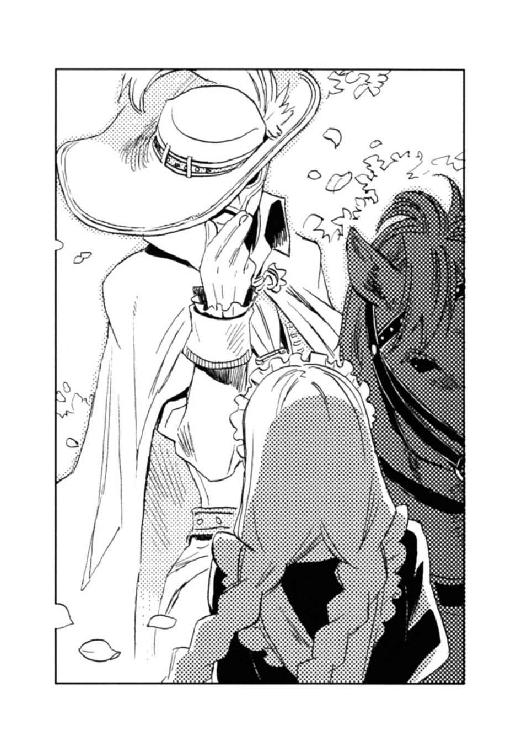
ザーッと花びらが渦を巻き、騎士の姿はその中に消えた。蹄の音が遠ざかるのを感じながら、
（最後の花びらから、睡眠薬が散布されてるんだろうな）
ディオンは短い眠りに落ちた。
ハッと気付くと、フェルナンドがディオンの背中を枕にして眠っていた。
「起きてくれよ」
「ん～」
フェルナンドの寝起きはあまりよくない。
ジェイダは馬車の扉にもたれていたが、キースは眠らなかったらしく、馬車の下でうめく兵士の傍らに膝をついていた。
「閣下、お怪我は？」
背後から声をかけたのはカルロだった。
「大事ない」
キースは立ち上がり、馬車に戻った。
カルロの指示で、覆面の賊は縛り上げられ、負傷者は担架で運ばれた。
「偽者発言について、警護隊が何も言ってこないけど、あの腹を撃たれた兵士の頭を〈精〉しちゃったんですか」
出発までの間、軽食を届けに行ったついでに、ディオンはキースに尋ねた。
「いや、お前たちが眠っている間に、兵士の様子を見に行ったのだが、すでに彼は私が本物のオルシーニ大使だと思い込んでいた」
「え？ 急にどうしたんだろ」
「おそらく、霧を吸い込んだ状態で、オルシーニをしっかり警護しろという夢幻貴族の言葉を聞いたために、暗示にかかってしまったのだろう」
「じゃあ、あの〈精〉は......」
ディオンは夢幻貴族が兵士たちに新たな催眠剤を吸わせたことに思い当たる。
「ってことは、夢幻貴族はオルシーニの味方なのかな」
「何とも言えんな。単に警護隊をからかっただけかもしれん」
「それにしても、中将は霧や薔薇の香りを吸い込んでも平気みたいだけど......」
「私が〈精〉する幻覚剤と似ているからだろう。私には耐性ができている」
「......さすが」
何だかんだで、やっぱり中将は無敵だ。
夕刻近くになり、馬車はようやく出発した。そしてその夜遅くに、使節団一行は連邦の要塞、ファルネーゼに到着したのである。
「やっぱ、これがあると落ち着くなー」
ディオンは愛用の狩猟用ナイフを腰に下げた。
「一般人のふりっていうのも、結構気疲れしましたものね」
ユアンは〈炉〉を兼ねる弓を布で磨く。
「ディオン、屋根を外すから手伝ってくれ」
カイルが箱型馬車の御者台に立ち、ディオンを手招いた。腹回りのタオルを取り、化粧も落として普段の彼に戻っている。
「了解」
ディオンは車輪に足をかけて、馬車の屋根に跳び乗った。
連邦の要塞、ファルネーゼの高級住宅街の一角、ステファノ・オルシーニの自宅である。
地下トンネルを抜けると、馬車は高い城壁の内部、通称暁の広場と呼ばれる場所に出た。陸軍の中隊が駐屯し、トンネルに出入りする人や貨物をチェックしているとのことだった。
トンネル内で使節団が賊に襲われたことについて、警護隊と暁の広場の警備兵との間で、どんなやりとりがあったのかディオンたちの耳には届かなかったが、使節団は警備兵たちに慇懃に出迎えられた。
その後、夜もだいぶ更けていたので、特使たちはそれぞれ自宅に戻った。
「そうですか。旦那様は無事に亡命を果たされたのでございますね」
留守を預かっていた老執事は目頭を押さえていた。
ナタリアが行方不明だと告げると、
「帝国軍の方々がお捜しくださるとは、重ね重ね有り難いことです」
と答えたものの、さすがにショックを隠しきれない様子だった。
ディオンたちは休む間もなく、館の廏舎に引き入れた馬車の解体を始めた。
出発前に、馬車の床と天井を二重にし、そこへ武器や玲石、源石を隠し入れておいたのである。
「天井も床も、見破られなくてよかった。国境や地下トンネルの荷物検査の時、ちょっと緊張したんだ」
ディオンは馬車の屋根を外しながら言った。
「俺の〈精〉で造った馬車だぜ。見くびっちゃ困る」
カイルは天井裏から「お、これはフェルナンドの杖だな」と、持ち手に玲石がはめ込まれた金属製の杖を、フェルナンドに投げ渡す。
「杖を持って来てくれたんなら、ついでに着替えも積んでくれればよかったのに」
杖を大事そうに抱えるフェルナンドは、まだメイド服のままである。彼は少女として使節団に潜り込んだため、アマーリエから借りた女物の衣類しか持って来ていなかった。
「だって、お前の着替えなんか積んだら怪しまれると思って」
「僕、このままずっと女の子の恰好してなきゃならないの？」
フェルナンドは頰をふくらませ、
「いいじゃねーの。可愛いから」
カイルは笑う。
「後で俺のを貸してやるから、ちょっと待ってて」
ディオンは天井裏から取り出した玲石や源石、弾丸などをポケットに詰め、とりあえずユアンと共にアッシュとシュネーを迎えに行くことにする。
暁の広場から数百メートルほど離れた人気のない場所を選び、歩哨が遠ざかったのを見計らって、ディオンは口笛を吹いた。高い城壁の向こう側から、遠慮がちな返事が返ってくる。
ユアンが縄のついた矢を城壁の外に放った。アッシュとシュネーが縄を咥えた手応えを確かめ、ディオンはユアンと一緒に縄を引く。やがて大小二頭の犬が城壁の天辺に姿を現した。二頭とも無傷で、元気よく尻尾を振っている。
「さすが、砂獣の砂漠を走って越えるとは、生身の犬とは造りが違いますね」
ユアンが城壁を見上げて穏やかに笑んだ。
『ディオン、よかった。無事に地下トンネルを通過したのね』
『参ったー。砂獣のやつったら、すっごくしつこいんだよー』
城壁から飛び降りたアッシュとシュネーは、思いっきり尻尾を振ってディオンを舐めた。
「お前たちも無事でよかった。さ、歩哨が来ないうちに行こうぜ、中将たちが待ってる」
ディオンたちがオルシーニの館に戻ると、早速打ち合わせ会議が行われた。
「使節団の予定としては、明日、連邦書記局へ帰国の報告をすることになっていたが、オルシーニの病が重篤であると虚偽の連絡を入れたので、報告は後日ということになった。しかし、いつまでもごまかしきれるものではない」
キースの薄氷の瞳に、冷たい炎が点った。
「決行は明日未明、作戦通り行う」
「皇女様、何を考え込んでらっしゃるのですか？」
かけられた声に、アマーリエはハッと顔を上げた。どうも自分はティーカップに入れた砂糖を、かなりの時間かき混ぜ続けていたようだ。
声の主はそばかすの散った顔に、ニコニコと柔和な笑みを浮かべている。
「お兄様とディオンは今頃どうしてるかしらと思って──」
アマーリエは正直に答えた。
「無事に要塞に侵入できたかしら、怪我はしていないかしら、無事に戻って来るかしら......、そんなことばかり考えてしまってね......」
アマーリエはスプーンをソーサーに置くと、冷めかけた紅茶をすすった。
「大丈夫ですよ、あの方がついていらっしゃいます。きっとご無事で戻っていらっしゃいます」
そばかすの彼女は、穏やかに、しかし確信を持った口調で言った。
「そうね。でも、要塞に到着した後は、いつでもあの方がお兄様とディオンのそばにいられるわけではないでしょう？ 本来のお役目があるわけだし」
「私の差し上げた笛をお持ちになっていれば大丈夫ですわ」
彼女の笑みは変わらない。
「でも、ディオンのことだから、あの笛を本当にただのお守りだと思ってるかもしれないわ。ちゃんと説明しなかったわたくしも悪いけれど」
乱暴で、気が利かなくて、言葉遣いが田舎者丸出しで、わたくしの大切なお兄様を独り占めして──、
（なんで、あんな人のこと、わたくしがこんなに心配しなくちゃならないのかしら？）
アマーリエは妙に腹立たしく思った。
『秘密の入り口はこっち』
下弦の月が東の空にかかっていた。
ファルネーゼ教会の壁に沿って、人通りのない石畳をシュネーは走る。
王制時代、この地域一帯は教会領だった。領主とも言うべき大司教が住まった壮麗なこの教会は、現在連邦の〈精〉研究所となっていて、ここでディオンの父モーリスが黒雷獣を造らされているのだ。
シュネーの後を音もなく走る〈蒼い鷹〉は、万一敵に捕らわれても身元がわからないように、一般庶民の服装である。フェルナンドだけは、自分の判断で皇太子の印章をポケットに忍ばせていた。いざという時、自分の身分を明かして、連邦政府と交渉するつもりだからである。
教会の東側は広大な墓地だった。乾いた風が朽ちかけた墓碑の上を渡り、細い悲鳴のような音を立てていた。
「不気味～」
フェルナンドは杖を両手で握りしめる。革のつなぎの上によれよれの上着を羽織り、貧しい牧童風に装ったフェルナンドだが、白い頰も柔らかな金髪も、育ちの良さを隠せていない。
「歩哨とか、いないんだな」
着慣れた猟師姿で、ディオンは墓地を見渡す。軍の〈精〉研究所の敷地内だというのに、見張りの姿もないのだ。
「要塞の周囲を鉄壁の護りで固めてある分、内部の警備が緩いんだろうな」
工員風にくたびれたジャケットを着たカイルだが、どう見ても傭兵くずれの無頼漢か用心棒だ。同じようなデザインのスーツを着ているキースが高級官吏に見えるのはなぜだろう。
シュネーは一つの墓碑の前で止まった。
『大昔、大司教が周囲の領主に攻め込まれた時にこっそり逃げられるようにって、ここに秘密の抜け道を造っておいたらしいよ。今は塞がれてるけど』
ディオンとカイルは古い墓碑に手をかけ、横にずらした。本来、棺が収められるべき場所に、比較的新しい瓦が敷き詰められている。
丈の長い上着に毛織りのショールを巻き付けて、ムスベル人奴隷の姿をしたユアンが、弓で赤い光を〈精〉し、同じく奴隷姿のジェイダも鞭で衝撃波を〈精〉して瓦に当てる。瓦の下は空洞になっているらしく、粗い粒に分解された瓦は、さらさらと下へ崩れていった。
瓦に人が通れるほどの穴が空くと、ディオンは黒い指無し手袋を外した。手に埋まっている〈光〉の玲石は、その名の通り自ら淡い光を放つ。ディオンは玲石の明かりをかざして穴の中に身を滑り込ませた。続いて飛び降りたシュネーは、ちゃっかりディオンの肩に乗る。
深さ二メートルほどの穴の底には、背をかがめれば立って歩けるほどの横穴が続いていた。
ディオンは手の明かりを頼りに、湿った土とカビの匂いの満ちる横穴を進む。
『長い間、誰も通らなかったみたいね』
アッシュが周囲の匂いを嗅ぎながらディオンの足下を歩いた。墓碑を戻して抜け道の入り口を隠したカイルたちも追いついてきた。
「この先に分岐があるはず。右に行けば大司教の寝室、左に行けば礼拝堂に出るよ」
要塞の地図の作成を担当したフェルナンドは、教会の見取り図をすべて暗記していた。彼の記憶力は並ではないのだ。
「作戦通り左に行け」
キースが背後で指示を出す。
分岐を左に曲がり、しばらくすると瓦の壁に突き当たる。ユアンとジェイダが壁を崩すと、錆び付いた鉄扉が現れた。反対側からかんぬきが掛かっているようだったが、それもユアンが隙間に赤い光の矢を当て、焼き切ってしまう。
カイルとディオンが重い鉄の扉を押し開けた。
〈精〉研究所と呼ぶには、あまりに荘厳な眺めが眼前に広がった。
壁上部のステンドグラスの窓から差し込む月明かりが、高い丸天井に描かれた古代の神々の絵を照らしていた。等間隔に床と天井とを結ぶ太い柱には、美しいレリーフが施され、王宮の広間に等しい面積を持つ床には、豪奢な椅子が並んでいる。
「王制時代の支配者層は、随分と贅沢してたんだね。だから革命なんか起こったんだろうな」
贅沢の基準が庶民とは異なるフェルナンドさえも驚いている。しかし、ディオンは、
（父さんがいるのは礼拝堂の北東、司祭たちの居室を改造した研究室だっけ）
はやる気持ちを抑えるのに必死で、旧時代の建造物の美しさに心を奪われる余裕はなかった。
「行くぞ」
キースの指示でディオンは扉へと走る。
まずは黒雷獣の破壊である。モーリスが造っている黒雷獣は、当時巡礼者用の控えの間として使用されていた大ホールに格納されているはずだった。
ディオンたちは礼拝堂を出て広い大理石の廊下を走った。途中には、黒い軍服の歩哨がいたが、太い柱に身を寄せてやり過ごす。
やがて樫の大扉に行き当たった。
『ここが大ホール。黒雷獣ベストラはここで造られてる』
ディオンの肩でシュネーがささやいた。
モーリスの造る黒雷獣は、古代神の名を取ってベストラと名付けられていた。
キースが目配せし、ディオンはゴクリと唾を吞んで扉に手をかけた。しかし──、
（いない!?）
扉を開けた先に、生ける巨大兵器の姿はなかった。
ディオンは、大ホールを呆然と眺め渡す。四方を太い柱で囲まれ、四階まで吹き抜けになっているホールは、しんと静まりかえり、淡い常夜灯が灯っていた。
「お待ちしていましたよ」
静寂を破ったのは帝国の標準語、しかも聞き覚えのある声だった。ギョッとしてディオンはホールの奥に目をこらす。
闇の中に、人影が浮かび上がった。影はゆっくりと歩み寄り、常夜灯の明かりの下にその姿を晒した。
彼は、黒い軍服の上に長い黒マントを羽織っていた。肩までかかる灰色の髪、銀縁眼鏡の奥には、髪と同じ色の優しげな瞳、端整な唇が柔和な笑みを浮かべていた。
「ベニート!!」
思わぬ人物の登場に、ディオンたちは立ちすくむ。
「久しぶりだね。元気だったかい？」
同窓会で教え子を出迎える教師そのままの、親しげな口調だった。
「あんた......、なんでここに......俺たちが来るのを知って......」
「そうだよ。あの裏切り者の人形が黒雷獣ベストラのことを洗いざらい喋ってしまっただろうからね、きっと〈蒼い鷹〉の諸君がやって来ると思って、待っていたのだよ」
アマデウス・ベニートは、帝国の〈精師〉養成学校ムセイオンに、長い間教授として勤めていた。ディオンとフェルナンドは彼の担任するクラスで数週間を過ごし、ベニートが連邦から送り込まれた密偵であることを暴いてしまったのである。裏切り者の人形とは、モーリスが造り、今はディオンが犬の形に〈精〉し直したシュネーのことである。
「私は君たちのおかげで、〈沈まぬ星〉のメンバーから外されてしまってね。名誉挽回のために、志願してこの〈精〉研究所の警備に就いたのだよ。黒雷獣ベストラを帝国の特殊部隊から守り抜き、名高いキース・アーベルン中将の首を獲れば、私は〈沈まぬ星〉に返り咲ける」
ベニートはパチンと指を鳴らした。ホールのすべてのドアが一斉に開き、現れた十数名の兵士がディオンたちに銃口を向けた。
「そうそう、地下トンネルで君たちを襲ったのは私の部下ではないよ。あれは〈沈まぬ星〉の無能な官吏の仕業でね、穏健派と帝国の接近を阻もうとしたらしい。アーベルン中将を本物のオルシーニだとまだ信じているよ」
（そこまで知っているのか......）
ディオンは唇を嚙んだ。やはりベニートは侮れない。
「その無能な官吏を出し抜いてやりたいという気持ちも働いていてね。だから安心したまえ、帝国特殊部隊がこの要塞に侵入したのを知っているのは私だけだ。その方がキース・アーベルンの首を連邦書記局に出した時、効果的だろう？」
ベニートは笑う。
「よく喋るなあ。学校の先生って、一通り演説ぶたないと気が済まないもんなのか？」
カイルはポリポリと頭を搔いた。
「俺は長え話を聞いてんのは苦手なんだ、早えとこ来いよ。相手してやるぜ」
ベニートはわずかに眉をひそめた。
「望み通り、首を獲らせてもらう──撃て！」
兵士のライフルが一斉に火を噴いた。ディオンたち〈蒼い鷹〉は、障壁を〈精〉しながらそれぞれ四方に散る。
ディオンは背にしていた猟銃を回して構え、扉近くの兵士に向かって放った。〈精〉で造った麻酔散弾を浴びた兵士は一瞬のうちに深い眠りに落ちる。弾を装塡する間、フェルナンドの杖がディオンを守った。
カイルの四十五口径は、扉の陰に隠れた兵士を分厚い樫の扉ごと吹っ飛ばした。
「もったいない。あの扉はきっと重要文化財ですよ」
ユアンは赤い光の矢で、丁寧に一人ずつ倒していく。
キースはベニートと対峙していた。両者とも相手に手の平を向けていた。手袋には玲石が貼ってある。
（二人とも、攻撃系〈精〉の使い手だ。本気でやりあったら、どっちもただじゃ済まない）
ディオンは横目でキースとベニートを見やる。
「ディオン、先にタウンゼント博士だ」
カイルがこっそり耳打ちしてきた。
「ベニートが俺たちのことを知っている以上、もたもたしちゃいられん。黒雷獣の方はこいつらに保管場所を吐かせたら、俺たちで破壊する」
「了解」
ディオンとフェルナンドは北側の扉に向かって走った。アッシュとシュネーがその後に続く。
行く手を阻む連邦の兵士に麻酔散弾を浴びせながら、
（始まった──）
ディオンは背中でキースとベニートから放たれる凄まじい〈精〉の圧力を感じていた。
『博士の部屋はこっちだよ』
シュネーはディオンの肩から飛び降り、暗い廊下を走る。
「待て！」
複数の足音が追って来た。銃声が響いたが、フェルナンドの杖が障壁を〈精〉し、敵の弾は届かない。ディオンは走りながら猟銃に弾を込め、銃声が途切れた一瞬を狙って、振り向きざま引き金を引いた。同時にフェルナンドが障壁を解く。麻酔散弾を浴びた兵士たちは、ドッと昏倒した。
『いいタイミングね』
アッシュに褒められて、
「少しは役に立つでしょ」
フェルナンドはニッコリと笑んだ。ディオンはたとえ敵であっても人を殺したくないので、麻酔弾を使っているが、敵が撃ってくるのは実弾である。しかし、フェルナンドは自分の命が危険に晒されていることなど全く気にしている様子がない。
「油断するなよ。ベニートはお前が皇太子だってことを知らないはずだ。遠慮なく来るぜ」
「うん。気をつける」
唇を引き締めても、フェルナンドからは何となく危機感が感じられない。肝の太さが並ではないのか、単に頭が花畑なのか、微妙なところだ。
前方から黒い軍服の一団がやってきた。後方からも新手の足音が迫ってくる。
「くそっ、しつこいやつらだ」
『この廊下の一番奥が、博士の部屋だよ』
『後ろの連中は私が食い止めるから、ディオン、先に行って』
「悪い、頼む」
アッシュとシュネーは立ち止まり、後ろに向かって身構える。ディオンは散弾を装塡すると、前方の一団に向かって二発連続で放った。物陰に隠れて散弾を避けた兵士がいたが、ディオンは走る速度を緩めず、猟銃を背中に回してナイフを腰から抜いた。兵士の銃口が自分に向く前に、ナイフを腕に突き立てる。銃を取り落とした兵士に、フェルナンドが杖を向けてとどめを刺した。彼の杖は障壁の〈精〉だけでなく、微弱な電気を放って相手を失神させることもできるのだ。
「急ごう」
ディオンとフェルナンドは暗い廊下を走った。喧噪が遠のき、追っ手の気配もない。
やがて古めかしい装飾がなされた扉に行き当たった。
「この部屋かな......」
ディオンの心臓の鼓動がとてつもなく速まっていた。ノブに手をかけ、
「ノックした方がいいかな──。夜中だし」
フェルナンドに訊いた。
「何言ってるの、緊急事態だよ。早く！」
（だいぶ動揺してるな、俺──）と思いながら、ノブを回した。鍵はかかっていなかった。扉を開くと、旧時代の家具が据えられた居間らしい部屋だった。
「──父さん」
部屋を眺め渡しながら、恐る恐る呼んでみる。
奥の扉が開き、「誰です？」と、寝間着姿の男が顔を出した。すそを刈り込んだ髪には白髪が少し混じり、頰はやつれているものの、黒い縁の眼鏡と長めの前髪、やや猫背の瘦身は、ディオンの記憶に残る父のものだった。
「......父さん？」
ディオンは男に呼びかけた。男は驚いた顔で黒縁眼鏡をかけ直し、じっとディオンを見つめていたが、やがて、
「──ディオンか？」
呆然とつぶやいた。
「そうだよ──父さん、ディオンだよ──」
ディオンは駆け寄り、立ちすくむ父の手を取った。
「迎えに来たんだ。早く逃げよう。帝国へ帰ろう」
「あ？ ああ......だが──」
父は後ろを振り向いた。
「手を上げろ！」
部屋の奥から数名の軍服の男が銃を構えて現れた。
（先回りされていたのか!?）
ディオンは背中の猟銃に手をかけたが、
「止めなさい。大人しくしていれば命までは取られない」
父に手をつかまれた。
「そっちの君も──」
杖を構えるフェルナンドをも父は制した。
唇を嚙んで武器を下ろす少年二人に、
「賢明だな、タウンゼント博士」
兵士は、皮肉な笑みを投げかける。
「タウンゼント博士を拘束しろ。少年二人は地下牢へ放り込んでおけ」
ディオンとフェルナンドは武器を取り上げられた。抵抗したかったが、兵士の銃口は父に向いている。ディオンたちは縛られ、兵士に引っ立てられた。
「父さん！」
部屋を出る前に父に呼びかけたが、彼は悄然と俯いていた。
キースの〈精〉した爆裂弾が、ベニートの〈精〉する障壁に弾かれ、凄まじい轟音と共に炎の球が宙を舞った。
ベニートの軍服はあちこち切り裂かれ、血がにじみ出ていたが、キースの袖の肩口も大きく裂かれ、透き通る白い頰に一筋の創傷が走っている。
〈精〉技術は五分と五分。実戦経験豊富なキースの方が、攻撃を繰り出すタイミングやスピードにおいてやや勝るものの、ムセイオンの教授として様々な〈精〉方法を開発してきたベニートは、ことごとくキースの攻撃を防いでしまうのだ。
どちらも相手に致命傷を与えるまでに至らず、凄絶な戦いは十数分に及んでいた。黒雷獣の製作現場として頑丈に改造された床や壁は、すでにボロボロに崩れている。
「無駄だよ、中将。どんな攻撃を仕掛けたところで、私の障壁を破ることはできないのだよ」
ベニートは薄ら笑いを浮かべる。
「仕方がない。使いたくはなかったが──」
キースは滅多に人前では外さない白い手袋を取った。この手の平に埋まっている玲石を使うのは、故国を失ったあの日以来のことだった。
キースの両手の間に、闇が凝った。闇はどろどろと渦を巻き、やがて真っ黒い球となる。
ベニートの灰色の目が見開かれた。
「──それは!?」
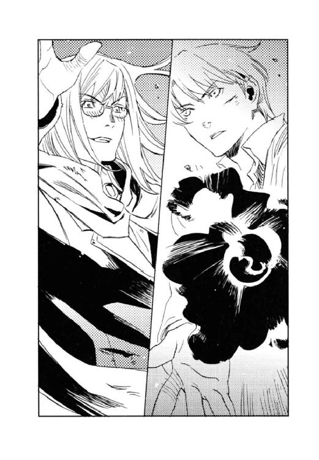
キースは表情を変えず、黒い球を放った。
ベニートはグッと歯を食いしばり、より強固な障壁を〈精〉する。
闇が光の壁にぶつかった。
ド────ン!!
教会の床が激しく振動し、天井に亀裂が入った。
「うわっ──！」
ベニートの障壁が砕け散った。障壁は砕け散る前に、あらかたのエネルギーを吸収したため、ベニートは直撃を免れたが、余波で吹っ飛び、壁に叩きつけられた。
ドサッ──。
黒い軍服が床に落ち、灰色の髪が肩に散らばる。
キースの薄氷の瞳が表情もなく、倒れたベニートを見下ろした。
「くっ──」
ベニートは身を起こそうと床に手をついた。
「......これで、私に勝ったと......思うな」
「往生際が悪いな。諦めて素直に黒雷獣の保管場所を吐けよ」
四十五口径を肩に担いで、カイルがキースの横に並ぶ。
大ホールには、連邦の兵士が折り重なるように倒れていた。死んではいなかったが、カイル、ジェイダ、ユアンが一人残らず再起不能に陥らせていた。
「誰が......お前らなぞに」
ベニートは半身を起こし、両の手の平を合わせた。
「まだやる気か！」
カイルが銃口を向けた途端、ベニートの体がもうもうと煙に包まれた。
「うわっぷ！ 何だ、ガスか？」
カイルは一瞬怯む。煙は瞬く間に視界を奪い、煙が消えた時にはベニートの姿はそこになかった。
「何だ、ただの目くらましか。撃っちまえばよかった」
カイルはブチブチと文句を垂れ、
「追いましょうか？」
ユアンは床に膝をついて血痕を調べる。
「いや、アッシュたちと合流したら、彼らに追わせる。先に黒雷獣の保管場所を調べろ」
キースの指示で、カイルとユアンは倒れている兵士の中で、口がきけそうな者を探し始めた。
ジェイダはキースの傷の治療を始める。そこへ、アッシュとシュネーが戻ってきた。
『申し訳ありません。ディオンたちとはぐれてしまいました』
『博士の部屋に行ったはずなんだけど、部屋には他の男の人の匂いがいっぱいあって、ディオンとフェルナンドは誰かに連れて行かれたって感じだった。途中の扉の前で匂いが消えてて、この手じゃ扉が開けられないし』
「捕まっちまったか。妙な抵抗さえしなけりゃ、いきなり殺されはしまいが──」
カイルは眉根を寄せた。
「アッシュ、カイル、ユアンはディオンとフェルナンドを捜せ。私とジェイダ、シュネーで黒雷獣の保管場所を探る」
キースの表情は変わらなかったが、いつもより早口で指令を出した。
「何か、大昔の牢屋って感じで、ちょっと恐い......」
フェルナンドは、錆び付いた鉄格子や、積んだ岩が剝き出しの壁を眺め回して、ブルッと身震いした。明かりは牢の外、おそらく当時の牢番が使っていたと思われるテーブルに、小さなろうそくが灯されているだけである。なまじ頼りない光が当たっているために、ごつごつした岩の影が血の痕に見えて、余計に不気味だった。
「大ファルネーゼ教会だった頃の牢なんだろうな。おかげで鉄格子を焼き切るのは簡単だ」
ディオンは黒い指無し手袋に玲石を貼った。
「玲石を取られなかったの？」
「ああ、内ポケットに隠しておいた玲石は無事。この手袋が〈精炉〉だってことにも気付かなかったんだ」
「連邦って、〈精師〉の数が少ないのは知ってたけど、〈精〉に関する知識や情報も行き渡ってないんだね。僕たちにとってはラッキーだけど」
「そっか、それでベニートは帝国であんな失敗したのに、この〈精〉研究所を任されたのか。あれほどの技術を持ってる〈精師〉をクビにしたらもったいないもんな」
ディオンが錆びた鉄の棒を両手で包み、〈精〉を始めようとすると、牢の入り口付近で明かりが揺れ、誰かが近づいて来る足音がした。
（見回りか？）
ディオンは〈精〉の手を止め、玲石が見られないように拳を握った。しかし、燭台を手に現れたのは、兵士ではなく父モーリスだった。
「ディオン、無事だったか？」
「父さん──。監禁とかされなかったの？」
「見張りの目を盗んで来たんだ。あまり時間がない」
「じゃ、急いで逃げよう」
ディオンは再び両手で鉄の棒を包んだ。〈精〉を始めてから、
（そう言えば、父さんは俺が〈精師〉になるの、反対してたんだっけ）
叱られるかなと思ったが、
「お前、その〈精〉の技を連邦で活かしてみる気はないか？」
父はディオンの手元をじっと見て言った。
ディオンは驚いて顔を上げる。手の平がずれて、〈精〉は自然と中断された。
「──急に、どうしたんだよ」
「このままでは、お前たちは処刑される」
「その前に逃げればいい」
「逃げ切れるものではない。それよりも、ベニートに協力を申し出るんだ。彼は優秀な〈精師〉を欲しがっている」
「そんなこと、できるわけ......、やつの目標は大陸制覇だよ。俺は戦争をやりたがってるやつなんかに協力したくない」
「私は、ベニートの考えにも一理あるように思える。ベニートが連邦の指導者的立場になれば、一時は戦争になるかもしれないが、いずれは平和が訪れる。それならベニートのもとで、一日も早く大陸が統一されるように働けばいいじゃないか」
「父さん......人が死ぬようなことには、絶対協力しないって......」
「願いは変わっていないよ。どの国の人々も、誰もが幸せに生きられるように願っている。ただ、その方法について、考えが変わっただけだ。ベニートがこの研究所に赴任して、彼と話をする間に──」
大陸が統一されれば戦争はなくなる。国境も必要ないし、源石の鉱脈の奪い合いもしなくて済む。
（一時の戦いで、恒久的な平和が訪れるなら......。俺がベニートに協力することで、その一時の戦いを最小限に抑えることができるなら......）
「父さんは連邦に残って、ベニートの下で働くつもりなの？」
「ああ、できればお前と一緒に──」
お前と一緒に──という言葉がディオンの胸を熱くした。
（せっかく会えたんだもの、一緒に......）
その時、
「武力による制圧では、国は統一しても人々の心は統一されません」
フェルナンドが敢然と言い放った。
「民族の問題はどうするんです？ 帝国が共和制をとっているのは、人々の心までは支配できないからですよ。民が忠誠を誓うのは遠い皇帝ではなく、近くの領主だ」
空色の瞳が、凜とモーリスを見据えていた。
「それに、誰かの犠牲の上に立つ平和なんて、僕には納得できない。戦争によって大陸が統一されたとしても、民は死んだ肉親を忘れないでしょう。親を、兄弟を、子を殺した為政者に従うと思いますか？ 誰も傷つかず、誰も悲しまないで、平和をもたらす方法を考えるべきなんじゃないですか？」
「フェルナンド......」
年中無休で頭に花が咲いているフェルナンドだが、こういう時の彼は別人のようだ。
（確かに、俺はフェルナンドの描く未来に惹かれていた......けど俺は父さんと......）
ディオンの心が揺れる。
「まだまだ子どもだね、君。誰も傷つかず、誰も悲しまないなんて、そんな世の中があると思うのか？ そんな夢物語を語るより、今、自分にできることの中で、最大の努力を払うべきではないのかな」
モーリスは苦笑した。
「もちろん、そのつもりです。僕ができることの中で、最大の努力を払えば、夢は叶います」
真っ直ぐに見返す空色の瞳には、抗うことを許さない威厳のようなものがあり、モーリスはたじろいだ。
「僕一人ではだめですけれど、ディオンがいれば──」
フェルナンドはそう言って、ディオンに視線を移す。
「ディオン、その坊やが何を言いたいのかわからないが、とにかくベニートに協力するんだ。逆らえば殺されてしまう。それより、連邦で、父さんと一緒に働こう。一日も早く大陸が統一されるように」
モーリスは請うように言い、鉄格子の間から手を差し伸べた。
（俺は......）
ディオンは応えあぐねた。
（俺はどうしたいんだろ......、どうするべきなんだろ......）
フェルナンドの方を見ると、彼はどこまでも青い空の色の瞳に、微かな笑みを浮かべていた。
「ディオンが決めていいんだよ。君は、君の描く未来を目指して生きていけば」
「俺を引き留めないのか？」
あっけなく手を放されたようで、何となく寂しい気もする。
「体だけ引き留めて、心を逃がしちゃったら意味ないもの」
ものすごい口説き文句だ。王にこれを言われて、ぐっと来ない臣下がいるだろうか。
自分の描く未来──。
ディオンの脳裏に、亡くなった母の面影や、ビヴロスにいる祖父、キース、カイル、〈蒼い鷹〉の面々、シュネー、そしてアッシュが次々と現れた。
「父さん、俺は誰も死なせたくない。だからベニートには協力できない」
ディオンははっきりと告げた。
フェルナンドはニッコリ笑う。ディオンがどう応えるのか、わかっていたのだろう。
「だから、父さん、逃げよう。一緒に帝国に戻ろ──」
言いかけたディオンは絶句した。
「残念だよ、ディオン」
父の手には拳銃が握られ、銃口がディオンに向いていた。
アッシュは床に鼻をつけ、薄暗い廊下を進んでいた。その後を、足音もなくカイルとユアンがついて行く。
「まったく、複雑怪奇な構造してやがるな。この教会は」
出発前に教会の全体構造を頭に叩き込んできたはずだが、カイルは今自分がどの辺りを歩いているのかわからなくなっていた。
「見取り図にはなかった廊下や部屋がありますからね」
ユアンは明かり取りの窓を見上げ、月の位置から方位を確かめる。
二人と一頭は、キースたちと別行動を取り、ディオンとフェルナンドを捜していた。
「急がねーと、やばいな。フェルナンドが皇太子だって正体を明かす前に、ここのやつらがうっかり殺しちまうってこともある」
「ディオンの手の玲石を見たら、腕ごと切り取ってしまうかもしれませんし」
『恐いこと言わないで』
アッシュは必死でディオンとフェルナンドの匂いをたどった。
『ここで、匂いが消えてるわ』
廊下の途中、神々の絵が描かれている壁の前でアッシュは止まった。
「隠し扉かな」
コンコンとカイルは壁を叩き、
「精緻な絵ですね。芸術的価値が高いでしょうに、保存処理もしないなんて、もったいない」
ユアンは、絵の具の剝げかけた壁画を眺めてため息をつく。
「そんなこと言ってる場合か、壁をぶち抜くぞ」
カイルは四十五口径をホルダーから抜いた。
一方──、
「黒雷獣はどこに保管してある」
キースは兵士の胸ぐらをつかんだ。
「し、知らない......」
氷の瞳に見据えられ、兵士は震え上がった。彼が抵抗しなかったのは、カイルの銃で足を撃ち抜かれていたからではなく、あまりの恐怖で身動き一つできなくなってしまったからだ。
人形のように美しい顔が、どうしてこれほど恐ろしく感じられるのか、兵士には理解できなかった。
「大人しく白状した方が身のためだぞ」
低い恫喝が死に神のささやきに聞こえた。
「本当に......知らないんだ」
キースは、白い手袋の指先を軽く合わせた。指先には玲石が貼ってある。小さな玲石から細い煙が立ち上った。その煙を吸い込んだ途端、兵士の目が反転した。
「......黒雷獣は、ベニート所長が一人でどこかに移動させた。誰も知らない......」
弛緩した表情で、兵士は言った。
『今の、自白剤？』
突然、白い毛の塊が視界に飛び込んできて、キースは「わっ」と飛び退いた。
『どしたの？』
「いや、何でもない」
キースは手の甲で冷や汗を拭う。
「あちらの兵士にも、黒雷獣の保管場所を知っている者はいませんでした」
ジェイダが鞭を巻き取りながら報告する。彼女は衝撃波を〈精〉する鞭で、自白を強要していた。
『んー、じゃ、地道に一つ一つ当たってくしかないかなー。黒雷獣は体長十メートルはあるもんね。入れるお部屋は限られてる』
そう言って、シュネーはキースの肩に跳び乗ろうとした。
「よせ！」
思いっきり拒絶されて、シュネーの目が潤む。
『ご免なさい、いつもディオンの肩に乗ってるから、つい──。中将、肩を怪我してるんだったね』
「ああ、驚かせて悪かった......」
肩の痛みなど大したことはなかった。ただ、どんなに小さかろうが愛らしい姿をしていようが、
（私は、人間以外の生き物は、ダメなんだ）
それが打ち明けられたら、どんなに楽だろうか。自分もアッシュもシュネーも──。
勇猛で誉れ高いアーベルン家の養子に入った時、キースは自分の生き物恐怖症を克服しようと決心し、誰にも自分の性癖を告げなかった。そしてそれなりに努力もしてきた。
（こんな歳になって、今更言えるわけがない）
切ないキースの心中をよそに、
『じゃ、食堂とか武器庫とか行ってみようか。広いから黒雷獣がいるかもしれない』
シュネーは『中将、ジェイダ、こっちだよー』と元気よく走り始めた。
食堂にも武器庫にも黒雷獣の姿はなかったが、源石貯蔵庫に入った時、
『タウンゼント博士とベニートの匂いがする。まだ新しい』
シュネーは、源石貯蔵庫の奥にある玲石保管用の金庫の匂いを嗅いだ。
『まずいことになってるかも──』
「どうしたの？」
ジェイダは貯蔵庫の見張りの頸から、鞭を外した。見張りの兵士は気を失ったまま、ずるずると床にくずおれる。
『黒雷獣は未完成って言っても、ボクが連邦を出る時、すでに主砲の〈死の光と熱〉の〈精炉〉以外はほとんど出来上がっていたんだ。で、黒雷獣を動かすには、〈動力炉〉にいくつか玲石をはめ込むらしいんだけど、その玲石がこの金庫に保管されてたの』
「ベニートは黒雷獣を起動させるつもりなのね」
『起動方法は博士しか知らない。でも、黒雷獣が動いちゃったら大変だよ。機関砲とか、もう出来上がってるもの』
ジェイダとシュネーは、キースを見上げた。
「博士を捜せ」
硬い声でキースは言った。
「父さん......何で......」
自分に向けられた銃を、ディオンは愕然と見つめた。
「協力しないのなら、お前の〈精〉の技は、連邦の脅威になるだけだ」
黒縁眼鏡の奥の、父の瞳は真剣そのものだった。人差し指が引き金に掛かる。
「待ってください。タウンゼント博士！ 脅威って、そんな理由でご自分の息子を──」
フェルナンドが言いかけた時、闇の奥から黒い影が奔った。
それは真っ直ぐにモーリスに向かい、目にも留まらぬ速さで彼の頸に喰らいついた。
「ぐわっ！」
虚を衝かれて、モーリスはのけぞった。同時に彼は引き金を引いたが、弾はディオンからそれた。
『ディオン、大丈夫？』
アッシュはモーリスの頸から牙を離し、太い前足で押さえ込む。
ディオンはガクガクと震えていた。銃が恐かったからではない。発砲した人物が、ようやく会えた父だったことが、ひどくショックだったからだ。
「ディオン、しっかりして」
鉄格子を握りしめて震えるディオンの肩を、フェルナンドがつかんで揺さぶった。
『ディオン、どうしたの。あなたらしくもない』
「父さんが......父さんが俺を殺そうと......」
アッシュは自分の押さえている男に視線を落とす。
『この人？ ディオン、この男をモーリスだと思ったの？ そう言えば、似てるような気もするけど』
ディオンはきょとんと目を瞬いた。
「──違うのか？」
『この私がモーリスを見間違えると思って？ モーリスの姿形も匂いも、しっかり憶えているわよ。この人、モーリスじゃないわ』
男は自分を押さえ込んでいる大型犬が、人間の言葉を喋ることに、目を剝いていたが、
「畜生......この犬は博士の作品か......」
観念したようだった。
『声も全然違うわよ』
ディオンは、安心しすぎてがっくりと座り込んだ。
あらためて、牢の鉄格子を〈精〉で溶かし、ディオンとフェルナンドは牢から脱出する。
そこへ、カイルとユアンが駆けつけた。手にはディオンの猟銃とナイフ、フェルナンドの杖を持っている。黒い軍服が追って来たが、「うるせーな」とカイルは拳一つで殴り倒した。
わけを聞いたカイルは、偽モーリスの胸ぐらをつかみ、四十五口径の銃口を口に突っ込んだ。
「いたいけな少年の心を弄ぶとは、いい根性してるじゃねえか」
唇の端をつり上げ、いつもは温かなハシバミ色の瞳には怒りが滲んでいる。
男は限界まで目を見開き、ボロボロと涙をこぼしていた。本気で怒っているカイルは、キースとは違ってストレートに恐ろしい。
「ってことは、ベニートはディオンがタウンゼント博士の息子だって、知ってたんだな？」
男はブンブンと首を横に振った。
「ならどうしてこんな罠を仕掛けた。言えよ、大人しく吐かねーとぶっ殺すぞ」
「大佐、口の中に銃が入っていては、喋るのは無理ですよ」
ユアンの口調はこんな時でも穏やかだ。
カイルは銃を男の口から抜いた。男はしばらく咳き込んでいたが、やがて、
「〈蒼い鷹〉は、必ずタウンゼント博士を連れ戻しに来るからと、ベニート所長が俺に身代わりになるように言ったんだ。そうしたら、この少年たちが部屋にやって来て、父さん、と呼びかけたから......」
「そこで、ディオンが息子だって気付いたのか」
「博士にディオンという名の息子がいることは、他の〈精師〉の捕虜から聞いていた。けれどそれまで所長は〈蒼い鷹〉のディオンと同一人物だとは思っていなかったらしい。所長は帝国にいた時から、その少年に目をつけていて、この機会に自分の部下にしたいと──」
「よりによって、とんでもない人に身元を知られてしまいましたね。おまけに熱烈なラブコールまでもらってしまって」
ユアンは気の毒そうに言った。ディオンがモーリス・タウンゼントの息子だということは、帝国では〈蒼い鷹〉だけが知る秘密だった。モーリスの〈精〉技術はそれだけ貴重であり、彼が残した黒雷獣に関する資料を欲しがる組織がごまんとあったからである。
（やっぱ、俺はまだ経験が足りないな。簡単に父さんなんて、呼びかけちゃいけなかったんだ。五歳の時の記憶なんて、いい加減なもんなんだな）
ディオンは偽モーリスの顔をしみじみと見る。
「で？ 本物のタウンゼント博士はどこにいる？」
カイルは乱暴に男の胸ぐらを引き寄せた。
「し、知らない......」
「言わねえと──」
再び銃を口に押しつけると、
「本当に知らないんだ！ 黒雷獣のところじゃないか？ あれは今、地下墓地にいる。きっと所長がそこへ連れて行ったと思う」
男は慌てて答えた。
「案内しろ」
カイルは男の襟首をつかんで、引きずった。
地下墓地の入り口は礼拝堂の奥にあった。三百年以上もの昔、この土地は聖者と呼ばれた人物の墳墓で、その上に教会が建てられたのだそうだ。
「大ホールの床に仕掛けがあって、黒雷獣は昇降機で地下墓地に降ろされたが、昇降機の台車には多分黒雷獣が載ったままだから、今は使えない」
偽モーリスはそう言って祭壇の下に隠されていた階段を示す。
まず、アッシュとディオンが階段を下りる。カイルが偽モーリスの後頭部に銃口を突きつけてその後に続き、フェルナンドを挟んで最後尾はユアンが務めた。
ここまでの道のりで、数名の兵士に出会ったが、すでに彼らは戦意を喪失し、刃向かってくる者はいなかった。研究所勤めの軍人なので、戦闘には不慣れだったのかもしれない。
「援軍も来ませんね」
「ベニートのプライドが許さないんだろ。大陸制覇を目指す男が、援軍を要請するなんてさ」
「かえって恐いですよ。やけくそになった男は何をしでかすかわかりませんから」
真っ暗な階段はとてつもなく長く続いていた。手袋を外せば、手の平の玲石の明かりが得られるのだが、偽モーリスがいるのでそれを見せるわけにはいかない。そこでディオンは手袋に別の玲石を貼って、炎を〈精〉し、明かりの代わりにした。
数十メートルは下ったかと思われる頃、ようやく木製の扉に突き当たる。扉には錠前が掛かっていたが、ディオンは錠前ごと〈精〉で溶かした。
扉を開けた途端、「ひー」と、フェルナンドが小さな悲鳴を上げた。
地下墓地は、教会内の大ホールに匹敵する広さと高さがあった。壁には等間隔に燭台が据えられ、チロチロとオレンジ色の炎が揺れていた。
生ける巨大兵器黒雷獣は、その地下墓地の中央にいた。
体形は大型の肉食獣──ライオンに似ているかもしれない。しかし、体長は十メートルを超え、体表を被っているのは毛ではなく、真っ黒な鱗だった。それが、ろうそくの明かりを照り返して艶々と輝いていた。尾はなく、四肢の先には猛禽類のようなかぎ爪が生えていた。
大きな尖った耳は顔の真横にあり、顎が短く、人間や猿に近い顔をしていた。だが、異様に大きな口は耳まで裂け、ワニのような鋭い牙が何列も生えている。
ディオンたちは、帝国の〈精師〉養成学校ムセイオンで、この小型版と戦ったことがあるが、とても人間の手に負えるような代物ではなかった。それが何十倍もの大きさで、しかも機関砲などの武器を備えているのだ。
（こんなのが動いたら......）
ディオンは背中に冷たい汗が伝うのを感じた。
「まだ、起動されてないみたいだな」
黒雷獣を見上げるカイルの声も硬い。
『モーリスの気配もないわ』
アッシュは辺りを見回す。
「よっしゃ、先にこいつを片付けちまおうぜ」
偽モーリスをユアンに投げ渡し、カイルはポケットからいくつもの小さな箱を取り出した。
ユアンは偽モーリスを縛って「ここで寝ていて」とすぐ近くの石棺に押し込める。
「大佐、それって紙巻き煙草？」
飛び入り参加のフェルナンドは作戦の詳細を知らない。
「見つかった時のことを考えてパッケージを煙草にしておいたが、中身は爆薬さ。対黒雷獣用に俺とディオンで〈精〉した」
カイルは、黒雷獣によじ登り、半開きの口の中や、耳の穴、機関砲の砲身などに煙草の箱を押し込む。
「あの鱗には火器も薬も効かないんだ。けれど、体の内側はそれほど強くできてない。アッシュと同じならね」
黒雷獣破壊作戦に当たり、〈精〉で造られた生き物に詳しいディオンは参謀的立場にあった。カイルは黒雷獣から下りると、
「んじゃ、離れて、どっか石棺の陰にでも隠れてろよ」
ディオンたちを避難させ、愛用のリボルバーを黒雷獣に向けた。
「この地下墓地が崩れたりしない？」
フェルナンドがディオンの耳元で心配そうにささやく。
「そんなすごい爆発は起こらない。壊れるのは頭だけ。そもそも事故に見せかけろっていう議会の指令だったからさ。あんまり大げさにできないんだ」
「やるぜ」
カイルが安全装置を外した時だった。
「残念だったな」
その声は真上から降ってきた。見上げると、ベニートが昇降機の綱を伝って下りてくるところだった。黒い軍服は裂けたまま、滴り落ちる血はまだ乾いていない。キースとの戦いで重傷を負った彼は、ひどく白い顔をしていた。だが、その目は自信に満ちていた。
「ベストラ、起きていいぞ」
ベニートが言うと、それまで閉じていた黒雷獣ベストラの目が開いた。
「──！」
フェルナンドが声もなく、ディオンの服を握った。
「くそっ。もう起動してやがったのか！」
カイルは煙草の箱を狙ってリボルバーを撃ったが、ベストラは首をブンと振り、弾は鱗に当たって跳ね返った。
ベストラの右前足が持ち上がり、かぎ爪が耳や口に押し込められた爆薬をほじり出す。
「実は、起動用の玲石はとっくにはめ込んであったのだよ。そして君たちを一網打尽にしようと待っていたのだ。アーベルン中将の到着を待てなかったのが、残念だがね」
ベニートは笑った。
ディオンとフェルナンド、ユアンは石棺に押し込んだ偽モーリスに振り向く。
「俺が、やすやすとこの場所を案内したのを、不思議に思わなかったのか」
男はニッと笑った。
「ありとあらゆる状況を考えて、何もかも計算して──。ベニートのやつ──」
フェルナンドは唇を嚙んだ。
「ベストラ、ここにいる者を一人残らず殺れ！」
ベニートの声に黒雷獣が動いた。巨体に似合わずものすごいスピードだった。黒いかぎ爪がディオンたちに迫る。
「ディオン、フェルナンドを連れて逃げろ！」
カイルが銃を連射しながら叫んだ。ディオンはフェルナンドの手を引き、礼拝堂に通ずる階段を目指す。しかし、一歩で何メートルも進む黒雷獣に、人間の足は及ばない。
ディオンは咄嗟にフェルナンドを押し倒し、彼の上に被さった。かぎ爪の先が、ディオンの髪を掠める。
アッシュは跳躍し、黒雷獣の背に登った。
『私と同じ構造なら、ここに起動用の玲石があるはず──』
首の後ろの鱗を一枚咥えたが、鱗はしっかりと固定されていた。アッシュは諦めなかったが、結局黒雷獣に振り落とされてしまう。
ユアンは赤い光の矢を〈精〉し、出力を最大にして射た。鋼鉄の鱗から煙が立ち上ったが、焼き切るまでには至らない。
「無駄だよ。そんな武器ではベストラを倒すことはできない」
ベニートの笑みはあくまでも優しかった。
「どうすればいいんだ......」
ディオンは戦慄した。ここにいる者たちの中で、自分が一番黒雷獣のことに詳しいのに、自分にはこの怪物を倒す方法がわからない。恐ろしいほどの焦燥感がディオンを苛んだ。
（このまま、みんなが死ぬのを黙って見てるしかないのか!?）
その時──。
「ベニート！ やめてくれ！」
礼拝堂からの階段の入り口に、一人の男が現れた。肩にシュネーを乗せ、白衣を着て黒縁眼鏡をかけている。彼の後ろにはキースとジェイダがいた。
ベニートが「やっとお出ましか」と、嬉しそうに微笑する。
「ベストラ、博士は生かしておけ。だが中将と女は殺しても構わん」
（博士？ 父さんか!?）
ディオンは思わず立ち上がり、白衣の男をじっと見た。白衣と黒縁眼鏡、瘦身でやや猫背。整ってはいるが、どこか茫洋とした面立ち。
（間違いない、今度こそ本物の父さんだ！）
父は、迫る黒雷獣からキースとジェイダを庇っていた。
「ベニート！ この人たちを殺すなら、私を殺してからにしろ！」
「痛いところを衝いてきますね、博士。あなたがいなければベストラは完成しない。二体目、三体目の黒雷獣を造ることもできない。あなたには生きていてもらわなければならないんだ」
ベニートはわざとらしく困った顔をした。
「ベストラ、先にこの坊やたちだ。そうすれば、中将が出てくる」
ベストラの鋭いかぎ爪が宙を奔り、モーリスが「やめてくれーっ！」と、蒼白になって駆け寄ってくる。
ディオンは障壁を〈精〉した。かぎ爪が障壁にぶつかった。すごい圧力がかかり、ディオンは両手を広げたまま、ぐっと足を踏ん張る。
「フェルナンド、逃げろ！」
フェルナンドが退いた瞬間、爪が障壁を砕いたが、その反動を利用して、ディオンは後ろに跳躍する。モーリスはフェルナンドを抱きかかえるようにして、ディオンと共に石棺の後ろに身を隠した。シュネーも一緒に縮こまる。
（父さんが、フェルナンドの盾になってくれれば安心だ）
ディオンは二人を背にして、手袋の玲石を貼り直した。
「君は〈精師〉なのか？」
父に尋ねられ、ディオンはとりあえず「そうだよ」と答えた。親子の対面も、自分が〈精師〉になったいきさつも話している余裕はない。
「〈光〉の玲石を持っていたら、貸してほしい。ベストラを止めるには〈光〉の玲石が必要なんだ」
「黒雷獣を止められるのか!?」
「ああ、あれは起動用玲石をはめ込んだ者のことしか言うことを聞かないから、万一私以外の者が起動した場合のことを考えて、自爆装置を仕込んでおいたんだ。だが、私の玲石はベニートに取られてしまったんだ」
「持ってるけど貸せないんだ」
ディオンは手袋を外して、手の平を見せた。
「それは──！ ムスベルの!?」
「ごめん、後で話すから......どうすればいい？」
「全部そろってるのか。なら、手っ取り早い。陽と月の玲石とで、アミノ酸の結合を解く──意味わかるか？」
「わかるよ」
アッシュの心臓が壊れた時、散々練習した〈精〉だ。
「同時に水星、金星、火星、木星、土星の玲石でタンパク質を合成し直す。合成するタンパク質の種類は──」
父は早口で説明し、
「問題は、〈精〉するのが、ベストラの脳なんだ。あの頭に登らなければならない」
カイルたちに向かってかぎ爪を振り上げている黒雷獣を見やる。
「任せて」
ディオンは石棺の陰から飛び出した。
カイルたちは目や口の中など、ディオンから聞いていた黒雷獣の弱点を狙って攻撃を仕掛けていた。アッシュが黒雷獣の目の前を行き来して、黒雷獣の爪を牽制する。しかし、四十五口径のマグナム弾も最大出力の赤い光の矢も致命傷を負わせるには至らなかった。
キースは、昇降機の綱にぶら下がっているベニートに照準を合わせていた。彼が黒雷獣に指令を出しているのだ。ベニートを倒せば黒雷獣は止まる。だが、黒雷獣の巨体がベニートを庇い、キースの攻撃はベニートに届かない。
しかし、ベニートと黒雷獣の意識がそちらに向かっているのはディオンにとって幸運だった。
（今のうちに──）
ディオンは、黒雷獣の後ろ足の鱗に指をかけ、体高五メートルはあろうかと思われるそれの体をよじ登った。鋼鉄の鱗は滑りやすかったが、ビヴロスで雨上がりの崖を上り下りしては鹿を追っていたディオンには、大した問題ではなかった。
黒雷獣の背を伝い、ゆっくりと後頭部に近づく。黒雷獣の頭に手をかざした時だった。
「ベストラ、小僧がお前の頭に乗っている。振り落とせ！」
上から見ていたベニートがディオンの接近に気付いて叫んだ。
黒雷獣は狂ったように頭を振った。
（負けるもんか。暴れ猪の背中に比べりゃ大したことない）
ディオンはギュッと膝を締め、〈精〉を開始した。
「機関砲だ！ ベストラ、機関砲を撃て！ 火炎弾でも構わん」
ディオンの両手から淡い虹色の光の粒が溢れているのを見て、ベニートは何が行われているのか察したようだ。
黒雷獣の肩から角のように飛び出ていた砲門が、ゆっくりと向きを変えた。
「おいおい、こんなところで撃つのかよ。お前の大事な研究所がぶっ壊れるぜ」
荒い息をつきながらカイルは揶揄する。
「ベストラに比べれば、研究所の一つや二つ、安いものだ」
ベニートは薄い笑みを浮かべた。
砲門がキースたちに向いた。ガシャンと砲弾の装塡される音が、ディオンの耳にも届いた。
（もう少し──）
「撃て！」
ベニートが叫んだ。しかし、機関砲は動きを止めていた。前足のかぎ爪も首も、まるで巨大な彫像のように動かなくなっていた。
「いいぞ！ 三十秒後にベストラは自爆する！ 急いで逃げるんだ」
モーリスが歓声を上げた。
ディオンは黒雷獣の頭から飛び降り、「よくやった」とカイルに受け止められた。
「急げ！」
キースは、モーリスとフェルナンドを礼拝堂へ続く階段へと促す。ユアンとジェイダ、カイルも続いた。偽モーリスも石棺から這いだし、よたよたと階段を上る。
ディオンも階段を上がりかけて、ふと振り向いた。ベニートが黒雷獣の背に乗って呆然と巨大な頭を見下ろしている。
「ベニート！」
思わずディオンは駆け出した。
「逃げろ、もうすぐ爆発する！」
ムセイオンの教授だったベニートは、〈死の光と熱〉の〈精炉〉を狙う連邦の密偵だった。そして今回は、偽の父を使って自分を陥れようとした。それでも、彼が黙って死んでいくのを見ていられない。
ベニートは顔を上げ、怪訝な表情でディオンを見つめ返す。
黒雷獣の体内から低い振動が発せられた。それでもベニートは動かなかった。
次の瞬間、爆発音を発して黒雷獣の頭が吹き飛んだ。爆風が地下墓地の天井と床を崩し、黒い鱗の巨体がぐらりと傾いた。岩の塊がバラバラと落ちる中、黒雷獣はゆっくりと墓地に沈んでいく。
ディオンは降り注ぐ岩を縫って、黒雷獣に駆け寄った。ベニートは額から血を流し、下半身はすでに瓦礫に埋もれていた。
「つかまって！」
ディオンは手を差し伸べた。
しかし、ベニートはディオンの手を取らなかった。そして、この上なく優しげな笑みを浮かべる。
「甘いな──」
「......ベニート」
ディオンは愕然と、彼の灰色の瞳を見つめた。
凄まじい轟音とともに落ちてくる天井に、ディオンは気付かなかった。いきなり後ろから腕を引かれ、ディオンはのけぞった。それまで自分がいた場所に巨大な石が落ち、ようやく我に返る。
倒れかかった体を支えたのは、キースだった。
「行くぞ」
腕を引かれたまま、砂塵の舞う地下墓地をディオンは階段へと走る。扉をくぐる直前ディオンは振り返ったが、黒雷獣の背には瓦礫が堆積し、ベニートの姿は見えなかった。
（逃げたのか、それとも──）
キースもまた立ち止まっていた。薄氷の瞳が沈みゆく巨大兵器を見つめている。
「中将──？」
キースもまたベニートに思いを馳せているのか、あるいは故郷を滅ぼした黒雷獣と、このベストラを重ね見ているのか、ディオンにはわからない。
巨大な岩が黒雷獣の姿を隠した。それを見届けてからキースはようやく踵を返し、階段を駆け上がった。
「助かった──」
フェルナンドはへたへたと地面に座り込んだ。ディオンたちはファルネーゼ教会を近くに臨む、連邦議会堂前の広場にいた。偽モーリスも一緒である。何気にジェイダが寄り添っているが、実は鞭できっちり縛ってある。
地下墓地の天井、すなわち教会大ホールの床が崩れ、壮麗な旧時代の建造物は大きく傾いていた。カイルの麻酔弾やジェイダの鞭で眠っていた兵士が目覚めたのだろう、負傷した仲間を担いでわらわらと教会から避難している。
「ベニートは死んだのかな」
ディオンがつぶやくと、
「わからん。やつのことだ。あの程度の崩落なら、障壁を〈精〉してやり過ごすかもしれん」
彼の実力をよく知っているキースは、抑揚のない声で答えた。
「それはそうと、親子の名乗りは上げたのか？」
カイルはディオンをつついて、モーリスを指差した。
「そう言えば、まだ......」
とんでもない修羅場で対面したので、それどころではなかったのだ。
父さん、と呼びかけようとして、父はこちらの視線に気付いたのか、振り返った。
「──お前」
黒縁眼鏡の奥の、暖かい色の瞳が見開かれた。父は、両手を広げて駆け寄ってくる。
「父さん！」
待ち受けていたディオンを、父は通り過ぎた。
「へ？」
振り返ると、
「ジュディ、ジュディ──。いや、アッシュ。元気だったか!?」
『モーリス、会いたかった！』
父は、アッシュのふわふわの首に顔を埋めていた。何だか立場がない。
「あの......」
ディオンは恐る恐る声をかけた。
『モーリス、ディオンよ。大きくなったでしょ？』
アッシュに言われて、父は啞然とディオンを振り仰ぐ。
「ディオン？」
「そうだよ。気付かなかったの？ 俺に黒雷獣の頭を〈精〉させといてさ」
父は立ち上がり、まじまじとディオンの顔を見た。瞳が潤み眼鏡が曇った。父の腕がディオンの頭を抱き寄せる。
「ディオン、本当にディオンなのか、信じられない」
父は腕を放し、濡れた瞳であらためてディオンの顔を見つめると、指先でディオンの頰や鼻筋に触れた。
「大きくなって......ジュディにそっくりだな......。これはいつもの夢か......？」
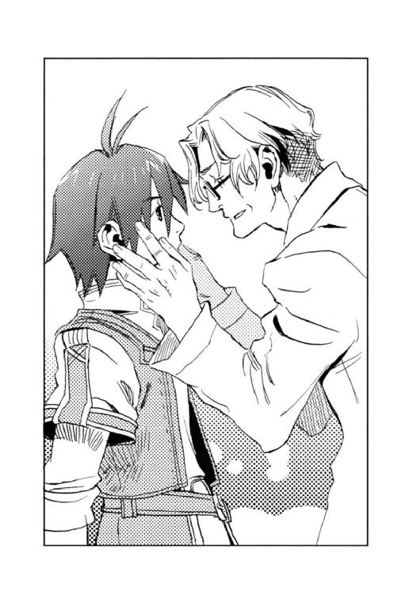
「夢じゃないよ。父さん、迎えに来たんだ」
「迎えに......って、まさか天国からのお迎えじゃないだろうな」
「違う違う。帝国から」
そこで父はハッと現実に立ち戻ったようだ。
「お前、どうしてここにいるんだ！」
「シュネーから何も聞いてないの？ 俺、〈蒼い鷹〉の隊員でさ──」
『ボク、まだ何にも言ってないんだ。とにかく博士を地下墓地に連れてくのに精一杯だったの』
シュネーはパタパタと尻尾を振る。
「キースとカイルは、ムセイオンで教えたことがあったから知っていたが......、そうか、黒雷獣を破壊しに来たのが、お前だとは......」
「あらためて、お久しぶりです。博士」
キースとカイルはモーリスに敬礼する。ジェイダとユアンも自己紹介し、最後にフェルナンドが、
「フェルナンド・アルプレヒト・シャウエンブルク二等兵です」
空色の瞳でニッコリと笑むと、モーリスの目が点になった。
「フェルナンド......シャウエンブルク......って、まさか......」
「友だちなんだ。俺が父さんを帝国に連れて帰りたいって言ったら、万一の時は連邦に交渉するって──」
「私の命令を無視してついて来たのです」
無表情でキースが付け加えると、
「皇太子殿下......」
今度はモーリスがへたへたと座り込む番だった。
「さ、急がねえと、〈精〉研究所の生き残りが、今頃本部に連絡してるぞ。帝国陸軍が黒雷獣を破壊して、タウンゼント博士を連れて逃走中だって」
カイルは、騒然とし始めた連邦議会堂を指差した。
「緊急連絡！ 〈精〉研究所に賊が侵入！ 黒雷獣を破壊して逃走中！ 賊はモーリス・タウンゼント博士を拉致した模様」「帝国陸軍〈蒼い鷹〉の情報あり！ 地下トンネルを封鎖せよ！」
議会堂内に設けられている連邦陸軍本部に伝令が飛び交った。
「何なんだ？ 〈蒼い鷹〉ってのは？」
同僚の問いに、
「特殊部隊の通称ではないのか？ そんな話を帝国で耳にした」
カルロ・グリエルモ中佐は、小銃の弾を確認しながら答えた。彼は親善使節団の解散と同時に警護隊長を解任され、通常任務に戻っていた。
「それにしたって、どうやってこの要塞ファルネーゼに侵入したっていうんだ？」
「さあな。どんなに要塞の護りが堅固でも、どこかに穴があるということだろう」
黒い鋭い目に、一瞬皮肉な笑みが走る。
「第三中隊は〈精〉研究所へ、第四中隊は暁の広場へ緊急出動！」
大隊長からの指令を受け、カルロは部下を引き連れて地下トンネルの出入り口、暁の広場へ向かった。
真っ暗な地下トンネルを、四頭立ての箱型馬車と、二頭の馬が疾駆していた。
御者台で馬を操るのはユアン、カンテラを掲げて馬車を先導する単騎はカイルとディオンである。馬車の中ではキースとジェイダが扉近くに陣取り、奥にはモーリスとフェルナンドが座っていた。偽モーリスには猿ぐつわを嚙ませ、縛って床に転がしてある。
アッシュとシュネーが御者台に乗っているのは、夜目が利くからとキースが見張りに命じたためだが、本当のところはキースが二頭の犬と一緒に馬車に乗るのが恐いからだった。ちなみにキースは馬に乗れない。どうやって士官学校の馬術訓練をパスしたのか、知っているのはカイルだけである。
「こんな無茶苦茶して、大丈夫かな。連邦が本当に宣戦布告してくるんじゃない？」
ディオンは全力疾走する馬に更に鞭を入れた。
当初、黒雷獣は事故により爆発、タウンゼント博士は巻き込まれて死亡したと、連邦が誤認するような工作をし、今朝早くに要塞を発つ源石輸送の馬車に交じって、地下トンネルを抜ける予定だった。しかし、ベニートの配下が本部に通報したのだろう、要塞内全域に包囲網が張られてしまったのである。そこでディオンたちは、オルシーニの館に待機させておいた馬を駆り、暁の広場を強行突破したのだった。
「捕まらなきゃ、なんとでもなるさ。研究所の生き残りが何を言おうが、黒雷獣をやったのが〈蒼い鷹〉だって証拠は何もねえんだ。目撃者の偽博士は連れてきたし、ベニートはたとえ生きてるにしろ、プライドにかけて俺たちのことは言わんだろ」
度胸がいいのか、単に脳天気なのか、カイルはこんな逃避行の最中でも元気潑剌としている。
しかし、トンネル出口まで間もなくという場所まで来た時──。
「止まれーっ！ 止まれーっ！」
前方でカンテラの明かりが左右に振られていた。警備兵が待ちかまえていたのだ。
「どうする？」
「突っ込むに決まってるだろ」
カイルはニッと笑ってリボルバーを抜いた。ディオンがチラと振り返ると、ユアンが御者台に立って弓を構えていた。手綱はアッシュとシュネーが咥えている。
「ほんと、無茶苦茶だ」
ディオンは背中の猟銃を前に回して、台尻を脇に挟み、片手で弾を装塡する。
馬が一向に速度を落とさないので、警備兵たちはたじろいだ。カイルが一発撃って牽制し、思わず横に退いた警備兵は、ディオンの麻酔散弾とユアンの光の矢で動きを封じられた。
声もなく倒れた兵士の間を、二頭の馬と馬車は一気に駆け抜ける。
しかし、安堵したのはほんの一時だった。
『カノン砲だわ！』
アッシュが叫んだ。出口近く、薄明の中に、巨大な大砲の影が浮かび上がった。
「止まれーっ！ 止まらないと撃つぞーっ！」
「こんなとこで撃つのかよ。トンネルが崩れたらどうするつもりだろ」
それでもカイルは速度を緩めない。
ドン！ と、カノン砲の重低音が地面を揺るがせた。
「ほんとに撃ちやがった」
その時にはすでにディオンもカイルも障壁を〈精〉し、馬車もおそらくキースの技か、堅固な銀色の膜で包まれていた。
砲弾がカイルの障壁にぶつかって爆発したが、彼はものともしない。しかし代わりにトンネルの天井に大穴が空いた。落ちてくる土砂が馬車の車輪に絡まり、馬車は傾いて止まってしまった。棹立ち嘶く馬の手綱を引き、ディオンは馬を下りて馬車の車輪を掘り出そうとした。
馬車からキースとジェイダが降り、カイルと共に駆け寄ってくる警備兵と対峙する。
人間相手ならば、〈蒼い鷹〉のこのメンバーが引けを取るはずはなかった。
しかし──。
穴の外から、キーンと頭が痛くなるような鳴き声が聞こえてきた。
『ディオン、砂獣だよ！ 近づいてくる』
シュネーが御者台から飛び降り、ディオンの肩に乗る。バラバラと穴の空いたトンネルの天井から砂が落ちてきた。見上げると砂獣の白い腹が、朝日にぬめぬめと光っている。
砂獣が頭を穴から突っ込んできた。カチカチと左右に開閉する顎が迫る。ディオンは素早く手袋に玲石を貼り、雷電を〈精〉した。
『砂獣の弱点は触角だよ！』
砂漠で砂獣と追いかけっこをしたシュネーは、砂獣の弱点をしっかり調査していた。
ディオンは両手の間に生まれた稲妻を放った。長い触角の片方が焼けこげ、黒い煙が上がる。
耳をつんざくような悲鳴を上げ、砂獣はのけぞった。その拍子にトンネルの天井が崩れ、一層穴が広がる。触角を焼かれた砂獣は頭を引っ込めたが、代わりに別の一匹が広がった穴から頭を滑り込ませた。更にその後ろにも別の頭が見え隠れしている。
（いったい何匹いるんだ！）
猪の群れに遭遇しても驚かないディオンだが、さすがに鳥肌が立った。
「ディオン、博士とフェルナンドを避難させろ！」
キースの声に、ディオンは「了解」と、馬車の扉に駆け寄った。
警備兵の一人が砂獣の顎に挟まれ、宙に浮いた。
「うわあああっ！」
ゾッとするような咀嚼音がトンネルにこだまする。
（いったん、こいつらから遠ざからなきゃ──）
ディオンは「父さん、フェルナンド、こっちへ！」と二人を促し、トンネルの奥に向かって走る。上半身を縄で縛られたままの偽モーリスも、猿ぐつわを嚙みしめて涙目で付いてきた。
キースたちが砂獣と戦っている気配がだいぶ遠のき、「ここまで来れば大丈夫だろう」と、ホッと一息ついた途端、今度は要塞側から地響きを立てて蹄の音が近づいてきた。
「追っ手!?」
フェルナンドとモーリスは息を吞み、偽モーリスは喜んだ。
『偵察に行ってみるわ』
アッシュはトンネルの奥へと走った。
『あの蹄の音──、百騎はいるよ』
シュネーが緊張した声で言った。正面切って戦うには相手の数が多すぎる。
「父さん、フェルナンド、ここは俺が食い止めるから、中将たちの所へ戻って何とか逃げて」
勝ち目がないのを覚悟で、ディオンは猟銃を構える。しかし、
「だめだよディオン、殺されてしまう。この際、大人しく捕まろう。僕が正体を明かして連邦政府と交渉するよ」
「そうだ。お前を置いて逃げるなんてできない」
フェルナンドも父も動かなかった。その時、
『だめだわ。モーリス以外、全員の射殺命令が出てる！』
敵の様子を探りに行っていたアッシュが駆け戻ってきた。
「全員の射殺命令──!?」
フェルナンドもモーリスも愕然と立ちすくむ。
黒い軍服の一団がディオンたちの前に現れた。
「手を上げろ」
兵士のライフルは自分たちに向いている。
「待って、僕の話を聞いて──」
フェルナンドは一歩前に出たが、
「一斉照射、構え」
指揮官らしき将校の手が上がる。
（どうしたらいいんだ──!!）
ディオンはいつもの癖で、胸元にかかる母の形見の指輪をまさぐった。ふと、指輪ではない何かが指先に触れた。
（お守りの笛......）
アマーリエから渡された笛である。こんな状況で何の役に立つのかわからないが、
（吹くとしたら、今しかないか）
神頼みは性に合わないが、それを唇に当てた。笛は意外にも柔らかく澄んだ音を発した。
指揮官は射殺命令を下す手を途中で止めた。辺りに銀の霧が立ちこめてきたからである。
「この霧は──!?」
霧の中に銀の薔薇の花びらが散り、ディオンたちは動けなくなった。蹄の音が響き、銀の霧に、黒鹿毛の馬に乗った騎士の姿が浮かび上がる。
「夢幻貴族参上」
目だけを覆った仮面の下で、唇の端がニッとつり上がった。
「どうやら、とんでもない修羅場に呼ばれてしまったようだな」
彼は周囲を見渡し、
「おや、タウンゼント博士、どうしました？ ああ、反政府組織のならず者たちに誘拐されたんですね」
猿ぐつわの偽モーリスに笑みを向ける。
「俺が助けてあげましょう。俺は暴利をむさぼる金持ちが嫌いなだけで、人一倍愛国心に富んでいるんですよ」
騎士が手招くと偽モーリスはフラフラと歩き、軍服の将校の前で止まった。
「さて、博士を誘拐した悪者どもは、砂獣の餌になってもらおうか」
彼はわざとらしく酷薄な笑みを浮かべる。夢幻貴族は将校に向き直ると、
「いいかね、君たち。この夢幻貴族が、タウンゼント博士を、ならず者たちから取り戻してあげたのだよ。憶えておいてくれたまえ。そして、このならず者たちは、今から俺が砂獣の餌にするが、君たちの手柄にして構わないからね」
ゆっくりと念を押すように語った。そして言い終わると指をパチンと鳴らす。
「それでは諸君、お休み、よい夢を──」
ザーッと花びらが散り、兵士たちは鞍に突っ伏して眠りに落ちた。偽モーリスもがっくりと膝をついて地面に伏したが、逆に、ディオンたちは体の自由が利くようになった。
「あれ？ 俺たち、今回は眠らないじゃん」
ディオンは目を瞬く。フェルナンドもモーリスも啞然としていた。
「兵士が眠っている時間はわずかだ。今のうちに逃げるがいい」
「あんた、何で俺たちを助けてくれるんだ？」
「君が笛を吹いたからさ。俺は滅多に男は助けないんだけどね、笛を吹いた場合に限って、助けてやることにしてるんだ」
騎士はニッと笑った。
（アマーリエの笛が......？）
ディオンは小さな象牙の笛に目を落とす。
「いい腕だ。怪盗にしておくのはもったいないよ、夢幻貴族。ありがとう」
モーリスが言うと、「恐れ入ります」と騎士は、優雅に一礼した。
彼は、馬に乗ったままフェルナンドに歩み寄り、
「君にはまたいつか会いたいと思っているよ」
真摯な口調で語りかける。
「君たちの夢が叶うように願っている。君たちの夢は私の目指すところでもあるのだ。私にできることがあれば力を貸そう」
フェルナンドは瞠目した。
「僕の正体を......」
「知っているとも、──可愛いお嬢さん」
「────！」
フェルナンドは顔を真っ赤にして絶句し、夢幻貴族は笑って銀の霧の中に姿を消した。
「なーにが、可愛いお嬢さんだ！ 僕の正体も変装も、何もかも知ってて！」
プンプンするフェルナンドを伴って、ディオンたちが出口に到着すると、累々と折り重なる砂獣の死骸の傍らで、キースたちが荒い息をついていた。出口を守る警備兵は、砂獣に喰われたのか、または逃走したのか、全く姿が見あたらない。
「無事だったか──」
無敵の中将は、いつになく憔悴した面持ちだった。
「どういうわけか、夢幻貴族が助けてくれた。偽モーリスを兵士に引き渡して、俺たちは連邦のならず者で、砂獣に喰われたことになってる」
ディオンがわけを話すと、
「そうか──。また借りができてしまったな」
キースはトンネルの奥に視線を送った。
ディオンとユアンが砂に埋まった馬車の車輪を掘り出している間に、カイルは火を焚きパンケーキを焼いた。ジェイダが熱いコーヒーを淹れて各々に配る。
「夢幻貴族って何者なんだろう──？」
パンケーキを頰張りながら、ディオンが半ば独り言のように問うと、
『カルロ・グリエルモ中佐でしょ』
シュネーが何気なく答えた。
「え────っ！」
『匂いが同じだったよ。ねえ』
同意を求めるシュネーに、『ええ、あれは中佐の変装ね』と、アッシュもうなずく。
二頭は、旅の往時からカルロを知っていたが、夢幻貴族の登場に居合わせたのはこれが初めてで、『何で、中佐があんな派手なかっこして助けに来るの？』と逆に訊き返された。
カイルたちも啞然としていた。驚いていないのは、キースとモーリスだけである。
「誰だい？ カルロ・グリエルモ中佐って」
モーリスはカルロを知らない。
「親善使節団の警護隊長。俺たち、その使節団に紛れて連邦に潜入したんだ......」
茫然自失状態でディオンは答える。
「キース、お前、知ってたのか!?」
カイルの問いに、
「国境越えの時に気付いた。問い質したところ、オルシーニ大使の亡命をお膳立てしたのは、彼なのだそうだ」
相変わらずの無表情で、キースは事も無げに言った。
カルロは表向きは陸軍の将校として務め、非番の時には怪盗夢幻貴族をやっているということだった。山すその村でディオンたちが聞いた通り、彼は王政時代の貴族の末裔で、現在の連邦政治への批判をそういう形で表しているのだという。
「カルロは使節団の警護を志願し、大使の家族が連邦を脱出する手助けをした。我々が大使の家族と入れ替わったことももちろん承知していた。彼も黒雷獣を破壊すべきだと、そして、タウンゼント博士は帝国に戻るべきだと考えていたらしい」
「何で、そういうこと黙ってるんだよ。俺たちがどんなにヒヤヒヤしたか......」
カイルはフライパンを持ったまま、がっくりと肩を落とす。
「彼に黙っていてくれと頼まれたからだ」
キースは飄然とコーヒーをすすった。
「私、あの人にネックレスを取られたのに、全然気付かなくて......嫌だわ」
ジェイダはその時のことを思い出したのか、困り顔を赤く染めた。
怒り心頭に発したのはフェルナンドだった。
「あいつ、あいつ、あんなお堅い軍人の振りして！ 心の中で面白がってたんだ！ 何が、君たちの夢が叶うことを願ってるだって!? できることがあれば力を貸そうだって？ 僕は、ぜぇぇったい、あんなやつの力なんか借りないからねっ!!」
年中無休で花が咲いているフェルナンドの頭に、嵐が来るなんて珍しいことである。
「すでにかなりの場面で助けられてるような気もしますけど」
ユアンは穏やかに笑んだ。
（けど、何で夢幻貴族はフェルナンドが皇太子だって、知ってたんだろ）
ディオンは、幻を紡ぐ怪盗〈精師〉の不敵な笑みを思い浮かべた。
「ようやく帰ってきたー」
ディオンは崖上から遥かな街並みを見渡し、大きな伸びをした。昇ったばかりの太陽が、空と大地と街を、鮮やかな朱に染めている。
「ディ、ディオン......引っ張って......」
足下の崖の端から上半身を乗り出し、フェルナンドが手を伸ばす。
ディオンは「ほらよ」と、青息吐息のフェルナンドの手をつかみ、岩の上に引っ張り上げる。
アッシュは慣れたもので、崖を駆け上がって来た。シュネーもウサギのように跳ねて来る。
ジェイダ、ユアンも、そしてカイルとキースに支えられて、モーリスも崖上に顔を出した。
「帝国だ──」
朝焼けに目を細めながら、モーリスがつぶやいた。
「そうだよ。父さん、帰って来たんだ」
順風満帆とは言えない帰路だった。寒風吹きすさぶ荒れ地を何日も旅するのは応えたし、国境を越える際には、往時のような名目がなかったので、馬を放し、砦を避けて山越えをすることになった。そして今、凍り付いた崖をよじ登り、ようやく帝国の領土に立ったのである。
モーリスはしばらくの間、懐かしい緑豊かな大地と地平近くの家々を眺めていたが、
「いつか、一緒に暮らしたいな」
ぽつりと言った。
「そうだね......」
ディオンも小さく答える。
モーリスが連邦から生還したことが〈精師〉養成学校ムセイオンや帝国議会に知られれば、今度は帝国で黒雷獣の〈精〉を命じられてしまう恐れがあった。そもそも議会でモーリスの救出を行ってはならないと決議されていたので、人目に触れることはできない。
そこでモーリスはここから山づたいに北上し、ビヴロスで猟師をしている義父デンゼルの所に身を隠すことにしたのだ。
「じいちゃんによろしく言っといて」
「ああ、お前も元気で......」
「あ、そうだ。これ」
ディオンは黒い指無し手袋を外した。
「父さんの、返すよ」
手袋を受け取り、モーリスは「懐かしいな」と微笑んでいたが、
「お前にやるよ」
と、ディオンの手に返した。
「でも、これ、父さんの手に合わせた〈炉〉だから、俺には大きくて」
「そうか？ 丁度いいじゃないか」
言われてみて、ぴったりと手に馴染んでいることに気付いた。
「本当だ。わ、いつの間に」
「これだけ背が伸びたんだ。手も大きくなるさ」
モーリスはほとんど自分と高さの変わらない息子の頭を、ぐりぐりと撫でた。
「博士、いつか黒雷獣の開発なんかしなくて済むようにします。それまで待っていてください」
フェルナンドの空色の瞳に見つめられ、モーリスは、
「ありがとうございます」
柔らかな笑みを浮かべた。
ユアンとジェイダを護衛に、モーリスはビヴロスへと旅立った。遠ざかる背中を見つめ、
「一緒に迎えに行こうね。戦争のない国を造って──」
フェルナンドは言った。
「ああ──、そうだな」
ディオンは大きくうなずいた。
「お帰りなさーい!!」
アマーリエがドレスのすそをたくし上げて、駆け寄ってきた。
王宮の西の宮、アマーリエの居間である。
部屋には彼女と守り役のヘルマン少佐だけが待っていた。帰還の挨拶を兼ねてアマーリエに尋ねたいことがあったため、事前に侍女たちを下がらせておくように頼んでおいたのである。
「よかった、無事に帰ってきて──、どんなに心配したことか」
半分泣き顔で、アマーリエはフェルナンドに飛びついた。
ヘルマンも「お帰りなさいませ」と敬礼する。
アマーリエはディオンに視線を移し、
「ディオンも、......無事でよかったわ」
細い声でささやいた。
「いいえ、決してわたくし、あなたのことなんか心配しなかったわよ。ただ、あなたが無事じゃなかったら......お兄様も無事じゃないってことで......だから」
彼女の言葉は相変わらず意味不明だ。仕方ないので、
「どーも」
ディオンはポリポリと頭を搔いた。
「で、わたくしに訊きたいことって何かしら？」
アマーリエはわざとらしく居住まいを正し、赤く染まった顔を隠すようにお茶をすする。
ディオンは首から象牙の笛のペンダントを外した。彼女からもらったお守りの笛である。
「実は、帰り道ですごいピンチになって、これを吹いたら連邦で話題の怪盗夢幻貴族が現れて助けてくれたんだ」
ディオンは銀のマントに羽根飾りつきの銀の帽子、目だけを隠す仮面という、夢幻貴族の容姿について簡単に説明する。
「お前、知ってた？ これで夢幻貴族が呼べるって」
フェルナンドに問われ、
「知ってたわ。だからディオンに渡したのよ。連邦で何かあったら......って」
アマーリエは、俯いたまま答えた。
「じゃ、警護隊長カルロ・グリエルモ中佐のことも？」
「ええ、でなければ、お兄様が使節団に潜り込むなんて、危ない真似させられないもの。彼が味方だって知っていたから、あんな作戦を立てたのよ」
「............」
ディオンもフェルナンドもしばらく口がきけなかった。
「使節団にちょっとしたツテがあるって、夢幻貴族、グリエルモ中佐のことだったのか──」
「黙っていてご免なさい。誰にも言わない約束だったから......」
「誰にも言わない──って!? 内緒で、二人でこっそり逢ってたのか！ いったい、あんなやつと、いつどこで知り合ったんだ！ ヘルマン、お前がついていながら、何てことだ！」
フェルナンドはいきなり怒り始めた。妹が自分に内緒で男と逢っていたことと、その男から「可愛いお嬢さん」とからかわれたことが重なって、憎さ倍増というところだろうか。
ヘルマンは「申し訳ありません」と最敬礼する。
「それも、よりによって夢幻貴族！ 貴族の末裔だろうが、たかが陸軍中佐じゃないか！ 第一、歳が違いすぎる！」
「ヘルマンも同じことを言ったわ」
「当たり前だっ!!」
「落ち着けよ」
ディオンはぜーはーと荒い息をつくフェルナンドの肩を押さえた。
「別に、わたくし、グリエルモ中佐の秘密の恋人というわけではないのよ」
「ひ、秘密のこ、恋人──!?」
フェルナンドは一層逆上する。
「夢幻貴族の恋人はナタリアさんなの」
たっぷりと一拍置いてから、ディオンとフェルナンドは同時に、
「「え──────っ!!」」
と声を上げた。
「ナタリアさんって......、行方不明のステファノ・オルシーニ大使の娘の、あのナタリアさん？」
「そう、行方不明っていうか、私がかくまってたの......」
これにはフェルナンドばかりでなく、ディオンも倒れそうだった。
「もう、全部の計画が成功したから......お話ししてもよろしいわよね。ナタリアさん」
アマーリエは、隣室に声をかけた。
「ええ、構いませんわ」
扉が開き、長い髪の少女が現れた。清楚な顔立ちで、頰に散るそばかすが愛らしかった。
「あ、あんた！」
ディオンは思わず少女を指差してしまった。
「あの時は、ありがとうございました」
祝賀パーティーの夜、暴漢に襲われ、ディオンが助けた少女だった。
あの暴漢は〈沈まぬ星〉が送り込んだ刺客で、自分を人質にして父のオルシーニを呼び出し、暗殺を企んでいたのではないかと彼女は言った。
「連邦では、日常茶飯事だったのです。だから変装して帝国にやってきたのに──、彼らは私の変装を見破っていたのでしょうね」
「わたくし、あの夜、たまたま現場に居合わせたでしょ。とりあえずお医者様を呼んだり、彼女の雇い主を捜して知らせようと思ったんだけど──」
「〈沈まぬ星〉の刺客がどこに潜んでいるかわからなかったので、皇女様に助けていただきたいとお願いしたのです。アマーリエ様ならば、きっとお力になってくれると思いましたので」
確かに、あの場で一番身元がはっきりしていたのはアマーリエである。いくら連邦の密偵でも、皇女になりすますことはできない。
「ということはヘルマン、お前、共犯なんだな」
あの夜、ヘルマンはずっとアマーリエの護衛を務めていたはずだ。
「私がナタリア様をこちらへお運びしました」
「そして、そのままナタリアさんをかくまっていたと──」
「見つからないわけだよー」
ナタリアが行方不明になって以来、散々彼女を捜しまわったディオンたちは、吐息をついた。
「それからすぐ後に、ここに夢幻貴族がやってきて、全部説明してくれたの。亡命のことも、ご自分が実は警護隊長のカルロ・グリエルモだってことも──。そして下手にオルシーニ大使のところに戻ったら、また狙われるかもしれないから、しばらくナタリアさんを保護してほしいって頼まれたのよ」
帝国の皇女を味方につければ恐いものはない。アマーリエの居室は近衛が常に警護に当たり、刺客の入る隙間はない。その一方寝室などは限られた侍女しか出入りしないから、どこからも干渉されずに済む。
「それにここなら、いつでも逢いに来られるからって」
夢幻貴族の本音はきっとそこだ。
「この象牙の笛は、本当はナタリアさんの物なの」
「亡命してくる時、何かあったらこれで自分を呼ぶようにって、夢幻貴族がくれたのです」
アマーリエから象牙のペンダントを受け取り、ナタリアは自分の首にかけた。
「グリエルモ中佐──夢幻貴族は、催眠剤や幻覚剤の〈精〉にかけては、すごい技術を持っているって聞いて、これを持っていれば安心って思ったのよ」
アマーリエの頰がなぜか真っ赤になる。
「ま、前にも言ったけど、決してディオンを心配したんじゃないのよ......どうせディオンはお兄様にくっついているんだし、お兄様は皇太子という肩書きがあるけど、ディオンには守ってくれるものがないから......」
彼女が自分を嫌っているのはわかっている。けれど、
（何で赤くなるんだろ？）
皇女殿下の言動はわけがわからない。
「そうだったのか。今回の黒幕がアマーリエだったなんてね。僕もまだまだ修行が足りないな」
フェルナンドは、諦めの混じった苦い笑みを浮かべた。
「けどさ、亡命しちゃってよかったのか？ グリエルモ中佐に逢えないじゃないか。彼、連邦の軍人だし」
ディオンがナタリアに問うと、彼女はニッコリと笑んだ。
「仕方ありませんわ。けれど、生きていればいつか逢えますもの。それに、夢幻貴族にとって私はたくさんの恋人の中の一人にすぎませんし」
「たたたくさんの恋人──何て、節操のないっ！ いい歳したおじさんのくせにっ！」
フェルナンドは夢幻貴族に対する怒りを復活させたようだ。
「おじさんってほどの歳じゃないわよ」
アマーリエは夢幻貴族の肩を持つ。
「恋人の中の一人で十分ですのよ。夢幻貴族はいつでも、すべての女性に誠心誠意尽くしていらっしゃるわ。みんなが彼を愛してるし、彼もみんなを愛していますの。怪盗夢幻貴族とはそういう存在なのです」
ナタリアは笑い、
「夢幻貴族はみんなの恋人なのね。いいなあ、わたくしも恋人の一人に加えてもらいたいー」
アマーリエはキラキラと目を輝かせる。
「よかったな、フェルナンド。夢幻貴族に気に入られて」
ディオンとしては、彼が連邦の偶像から「力を貸そう」と言われたことを喜ばしく思ったのだが、
「ぼぼ僕、夢幻貴族の恋人の一人になっちゃったわけ──!?」
フェルナンドは、サーッと青ざめた。
〈蒼い鷹〉宿舎の屋上で、キースは一人沈みゆく太陽を眺めていた。朱に染まる空に、遥かなニヴル山脈が黒々としたシルエットを浮き上がらせている。
「どうした？ 随分たそがれてるじゃねーか」
カイルがやって来て隣に並ぶ。
「黒雷獣は破壊したし、タウンゼント博士は救出したし、連邦にも帝国議会にもやばいことは何もバレちゃいねーし、任務は百パーセント成功したってのに、何を落ち込んでんだ？」
「別に落ち込んでなどいない。ただ──」
キースは白い手袋に目を落とす。
「あー、お前、ついにそれを使っちまったんだっけな」
幼年学校時代からの腐れ縁だが、これまでカイルはキースが手に埋まった玲石を使うところを見たことがなかった。
「忘れていたかったのだが、ベニートを倒すにはこれを使うしかなかった......」
キースは煙草を取り出し、火を点ける。
「時機かもしれんな──」
細い煙に紛らせて、彼は苦い思いを吐いた。
「ああ、ベニートがディオンとお前の手の玲石を見ちまったからには、もたもたしちゃいられねえ」
「もうしばらく......安穏としていたかった」
キースは山の端に隠れようとする日を薄氷の瞳で見つめた。カイルはフッと憐憫の混じった笑みを浮かべる。
「しょうがねえだろ。フェルナンドとディオン、あの二人がくっついた時から、時代は動き始めたんだ」
かつての猛将デンゼル・クラウドの孫であり、天才〈精師〉モーリス・タウンゼントの息子であるディオンが、次期皇帝フェルナンドの信頼を得たということは、将来、政界と軍部そして経済の中心である〈精〉業界が彼らの手中に収まることを示す。
「現に今回は、連邦の怪盗まであの二人に引き寄せられちまっただろ。あいつがフェルナンドの味方になったってのは、かなりでかいんじゃねーか」
「そうだな。彼が連邦の反政府組織をまとめれば〈沈まぬ星〉を潰せるだろう。真剣にやればの話だが──」
「問題はそこだ。あのコスチュームにあの台詞。本気なのか冗談なのか、いまいちよくわからん」
〈蒼い鷹〉指揮官とその腹心は、銀の薔薇を散らす仮面の騎士を思い浮かべてため息をついた。
「ヘックシュ！」
銀のマントを翻し、颯爽と黒鹿毛にまたがった夢幻貴族は、決め台詞を言おうとして、大きなくしゃみをした。
「お風邪ですの？」
大事な家宝の指輪を奪われたにもかかわらず、連邦中央委員長夫人は犯人の心配をする。
「いや、そんなはずはないのだが」
ハンカチを出そうとポケットに手を入れると、指先に薔薇の花びらが触れた。
（そう言えば、あの皇太子──）
彼はふと金髪おさげのメイド服を思い出す。これは彼の頭にくっついていたもので、からかうつもりで口づけ、そのままポケットに入れておいた花びらだ。
（度胸もいいし、実行力もあるし、頭に春風が吹いてるような感じはするが、なかなか賢い皇子だった。ディオンだったか、近臣に恵まれているのも、信頼するに足る主君だということだ）
彼が帝位に就けば、きっとこの連邦も住みよくなるだろう。
（何より、可愛いし──）
銀の花びらを指先で弄び、
（何か盗っておけばよかったなー。次に会う口実になったものを）
約束も取り付けずに、帝国に帰してしまったことをもったいなく思う。
「──惜しいことをした」
「どうなさったの？」
夫人に問われ、夢幻貴族は、「いや、何でも」と咳払いする。
豪奢な館の奥が騒然とし始めたのを聞いて、
「ご主人が気付いたようだな。それでは美しいマダム」
彼は薔薇の花びらに口づけ、夫人に渡した。
「お休み、よい夢を──」
怪盗夢幻貴族は銀の霧の中へ消えていった。
あとがき
こんにちは、またお目にかかれて嬉しいです！
寒さ厳しき折、いかがお過ごしでしょうか。村田は腰を痛めて、貼るカイロの有り難さをしみじみと実感しております。
『光の精師ディオン』も三巻目となりました。これも皆様のおかげです。ありがとうございます！ 目指すは、頭を空っぽにして一気に読める作品ということで、今回も一応読み切りになっております。
前巻を読んでくださった方は、「今度はシリアスな展開になりそうだ」と思ったかもしれませんね。私もそう思っていました。けれど、どういうわけかこんな仕上りに──。いえ、お話は真面目だと思いますよ。（コメディではないはず......）登場人物だって、当人は大真面目なんです。これでも──。
今回、ディオンはお父さんを救うために敵国へ潜入します。彼の役にたちたいとフェルナンドは奮闘し、キースとカイルががんばる少年二人を温かく支えます。そんな中でディオンは自分のすべきことを再確認し、また一回り大人になります。こう書くと真っ当な路線を行ってる感じなのに、こんなライトなノリなのはなぜ～？
やっぱり表紙を飾るキラキラしい彼（ちなみに彼を生んだのは担当様です）と、ぶっ飛んでるお姫様のせいでしょうか？
それにしても、素敵......。（できたばかりの表紙を眺めてうっとり）怪盗さんもディオンもかっこいいですねー、メイドさん、なんて可愛いの!! （このメイドさんは新キャラではありません。さて、誰でしょう？）
岩崎美奈子先生には今回もすばらしいイラストでお話を盛り上げていただき、本当に本当に感謝しております。この絵に見合うような物語を書きたいと、村田は意欲を燃やしている次第です。また、担当様、校正者様、印刷所の方々には、いつもご迷惑ばかりかけて申し訳ありません。（前回よりは迷惑度を減らしたつもりなのですが......）こんな私を見捨てず、本を出してくださったことを有り難く思っております。
最後になりましたが、この本を手にしてくださった読者の皆様に心から感謝申し上げます。本の向こうに皆様がいると思えば、腰痛なんかなんのその！ です。
なお、一月下旬発売の雑誌「The Beans VOL.10」に短編を載せていただけることになりました。時間的にはこの巻の後ですが、中身は二巻の舞台となった精師養成学校ムセイオンの学園祭の一こまです。よろしかったらそちらも読んでいただけると一層嬉しいです。
それでは、インフルエンザ等にお気をつけになり、お元気でお過ごしください。
村田 栞
カバー・本文イラスト／岩崎美奈子
デザイン／BELL'S
光の精師ディオン
潜入捜査は怪盗と
村田栞
平成26年6月1日 発行
(C) Shiori MURATA 2008
本電子書籍は下記にもとづいて制作しました
角川ビーンズ文庫『光の精師ディオン 潜入捜査は怪盗と』
平成20年1月1日初版発行
平成20年8月30日3版発行
発行者 山下直久
発行所 株式会社ＫＡＤＯＫＡＷＡ
〒102-8177 東京都千代田区富士見2-13-3
03-3238-8745（営業）
編集 角川書店
〒102-8078 東京都千代田区富士見1-8-19
03-3238-8506（編集部）
http://www.kadokawa.co.jp/